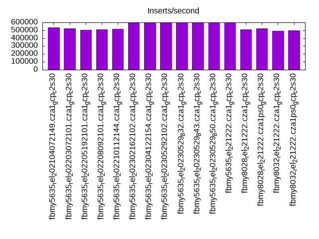
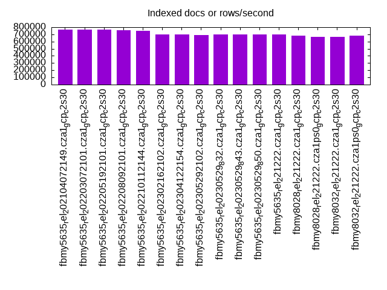
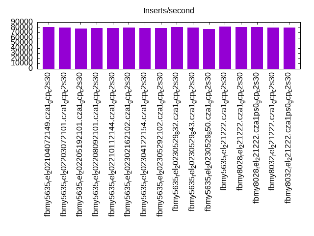
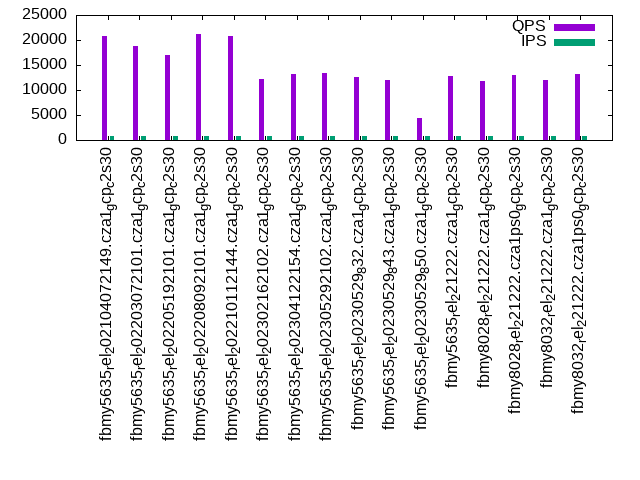
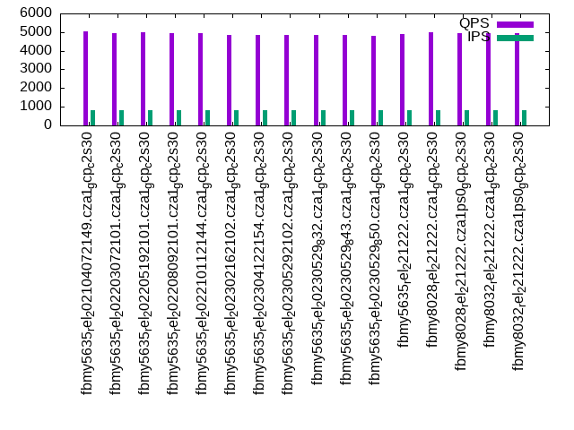
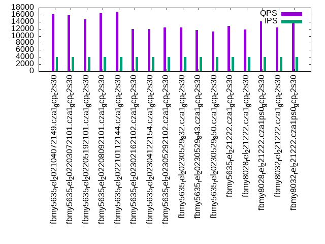
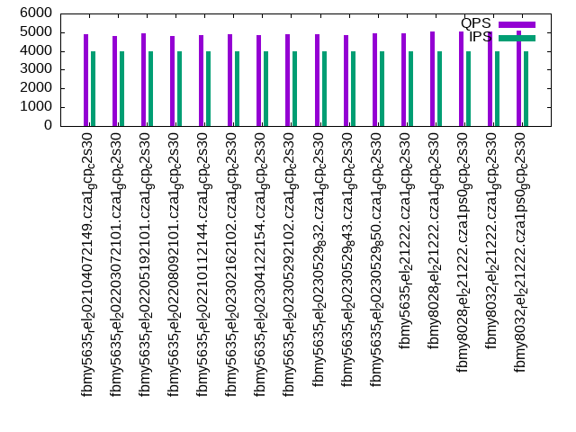
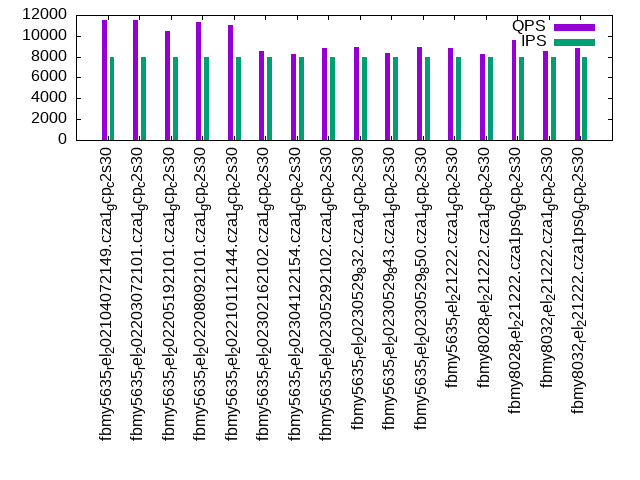
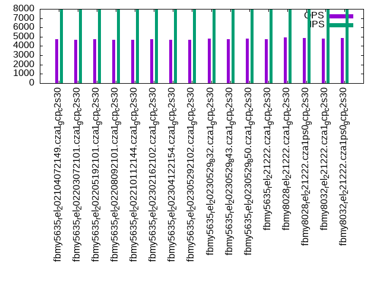

Introduction
This is a report for the insert benchmark with 4000M docs and 8 client(s). It is generated by scripts (bash, awk, sed) and Tufte might not be impressed. An overview of the insert benchmark is here and a short update is here. Below, by DBMS, I mean DBMS+version.config. An example is my8020.c10b40 where my means MySQL, 8020 is version 8.0.20 and c10b40 is the name for the configuration file.
The test server is a c2-standard-30 from GCP with 15 cores, hyperthreads disabled, Ubuntu 22.04 and XFS using SW RAID 0 over 4 local SSDs. The benchmark was run with 8 clients and there were 1, 2 or 3 connections per client. It uses 8 tables with a client per table. It loads 20M rows per table without secondary indexes, creates 3 secondary indexes per table, then inserts 50m+50m rows per table with a delete per insert to avoid growing the table. It then does 6 read+write tests for 1200s each that do queries as fast as possible with 100,100,500,500,1000,1000 inserts/s and the same for deletes/s per client concurrent with the queries. The database is cached in memory. Clients and the DBMS share one server. The per-database configs are in the per-database subdirectories here.
The tested DBMS are:
- fbmy5635_rel_202104072149.cza1_gcp_c2s30 - MyRocks 5.6.35 compiled from code as of 2021-04-07 at git hash f896415f with RocksDB 6.19.0, cza1_gcp_c2s30 config
- fbmy5635_rel_202203072101.cza1_gcp_c2s30 - MyRocks 5.6.35 compiled from code as of 2022-03-07 at git hash e7d976ee with RocksDB 6.28.2, cza1_gcp_c2s30 config
- fbmy5635_rel_202205192101.cza1_gcp_c2s30 - MyRocks 5.6.35 compiled from code as of 2022-05-19 at git hash d503bd77 with RocksDB 7.2.2, cza1_gcp_c2s30 config
- fbmy5635_rel_202208092101.cza1_gcp_c2s30 - MyRocks 5.6.35 compiled from code as of 2022-08-09 at git hash 877a0e58 with RocksDB 7.3.1, cza1_gcp_c2s30 config
- fbmy5635_rel_202210112144.cza1_gcp_c2s30 - MyRocks 5.6.35 compiled from code as of 2022-10-11 at git hash c691c716 with RocksDB 7.3.1, cza1_gcp_c2s30 config
- fbmy5635_rel_202302162102.cza1_gcp_c2s30 - MyRocks 5.6.35 compiled from code as of 2023-02-16 at git hash 21a2b0aa with RocksDB 7.10.0, cza1_gcp_c2s30 config
- fbmy5635_rel_202304122154.cza1_gcp_c2s30 - MyRocks 5.6.35 compiled from code as of 2023-04-12 at git hash 205c31dd with RocksDB 7.10.2, cza1_gcp_c2s30 config
- fbmy5635_rel_202305292102.cza1_gcp_c2s30 - MyRocks 5.6.35 compiled from code as of 2023-05-29 at git hash b739eac1 with RocksDB 8.2.1, cza1_gcp_c2s30 config
- fbmy5635_rel_20230529_832.cza1_gcp_c2s30 - MyRocks 5.6.35 compiled from code as of 2023-05-29 at git hash b739eac1 with RocksDB 8.3.2, cza1_gcp_c2s30 config
- fbmy5635_rel_20230529_843.cza1_gcp_c2s30 - MyRocks 5.6.35 compiled from code as of 2023-05-29 at git hash b739eac1 with RocksDB 8.4.3, cza1_gcp_c2s30 config
- fbmy5635_rel_20230529_850.cza1_gcp_c2s30 - MyRocks 5.6.35 compiled from code as of 2023-05-29 at git hash b739eac1 with RocksDB 8.5.0, cza1_gcp_c2s30 config
- fbmy5635_rel_221222.cza1_gcp_c2s30 - MyRocks 5.6.35 compiled on Dec 22, 2023 at git hash 4f3a57a1, RocksDB 8.7.0 at git hash 29005f0b, cza1_gcp_c2s30 config
- fbmy8028_rel_221222.cza1_gcp_c2s30 - MyRocks 8.0.28 compiled on Dec 22, 2023 at git hash 2ad105fc, RocksDB 8.7.0 at git hash 29005f0b, cza1_gcp_c2s30 config
- fbmy8028_rel_221222.cza1ps0_gcp_c2s30 - MyRocks 8.0.28 compiled on Dec 22, 2023 at git hash 2ad105fc, RocksDB 8.7.0 at git hash 29005f0b, cza1ps0_gcp_c2s30 config
- fbmy8032_rel_221222.cza1_gcp_c2s30 - MyRocks 8.0.32 compiled on Dec 22, 2023 at git hash 76707b44, RocksDB 8.7.0 at git hash 29005f0b, cza1_gcp_c2s30 config
- fbmy8032_rel_221222.cza1ps0_gcp_c2s30 - MyRocks 8.0.32 compiled on Dec 22, 2023 at git hash 76707b44, RocksDB 8.7.0 at git hash 29005f0b, cza1ps0_gcp_c2s30 config
Contents
- Summary
- l.i0: load without secondary indexes
- l.x: create secondary indexes
- l.i1: continue load after secondary indexes created with 50 inserts per transaction
- l.i2: continue load after secondary indexes created with 5 inserts per transaction
- qr100.L1: range queries with 100 insert/s per client
- qp100.L2: point queries with 100 insert/s per client
- qr500.L3: range queries with 500 insert/s per client
- qp500.L4: point queries with 500 insert/s per client
- qr1000.L5: range queries with 1000 insert/s per client
- qp1000.L6: point queries with 1000 insert/s per client
Summary
The numbers are inserts/s for l.i0, l.i1 and l.i2, indexed docs (or rows) /s for l.x and queries/s for qr100, qp100 thru qr1000, qp1000" The values are the average rate over the entire test for inserts (IPS) and queries (QPS). The range of values for IPS and QPS is split into 3 parts: bottom 25%, middle 50%, top 25%. Values in the bottom 25% have a red background, values in the top 25% have a green background and values in the middle have no color. A gray background is used for values that can be ignored because the DBMS did not sustain the target insert rate. Red backgrounds are not used when the minimum value is within 80% of the max value.
| dbms | l.i0 | l.x | l.i1 | l.i2 | qr100 | qp100 | qr500 | qp500 | qr1000 | qp1000 |
|---|---|---|---|---|---|---|---|---|---|---|
| fbmy5635_rel_202104072149.cza1_gcp_c2s30 | 536265 | 763359 | 80828 | 37594 | 20723 | 5018 | 16199 | 4908 | 11553 | 4740 |
| fbmy5635_rel_202203072101.cza1_gcp_c2s30 | 524453 | 765111 | 79622 | 37383 | 18896 | 4924 | 15848 | 4800 | 11513 | 4680 |
| fbmy5635_rel_202205192101.cza1_gcp_c2s30 | 507357 | 767460 | 78106 | 36413 | 16944 | 4980 | 14676 | 4934 | 10461 | 4718 |
| fbmy5635_rel_202208092101.cza1_gcp_c2s30 | 514469 | 759734 | 78278 | 36697 | 21275 | 4953 | 16388 | 4821 | 11309 | 4669 |
| fbmy5635_rel_202210112144.cza1_gcp_c2s30 | 515863 | 752021 | 78354 | 36832 | 20840 | 4957 | 16835 | 4862 | 10995 | 4685 |
| fbmy5635_rel_202302162102.cza1_gcp_c2s30 | 598982 | 698934 | 79228 | 37296 | 12109 | 4871 | 11905 | 4876 | 8579 | 4748 |
| fbmy5635_rel_202304122154.cza1_gcp_c2s30 | 598086 | 697837 | 78837 | 37071 | 13163 | 4870 | 11911 | 4871 | 8216 | 4698 |
| fbmy5635_rel_202305292102.cza1_gcp_c2s30 | 590755 | 692881 | 78624 | 36798 | 13308 | 4842 | 12326 | 4892 | 8844 | 4688 |
| fbmy5635_rel_20230529_832.cza1_gcp_c2s30 | 594972 | 695531 | 80100 | 37123 | 12667 | 4866 | 12433 | 4875 | 8893 | 4773 |
| fbmy5635_rel_20230529_843.cza1_gcp_c2s30 | 592417 | 697228 | 79741 | 37106 | 11989 | 4842 | 11681 | 4864 | 8345 | 4719 |
| fbmy5635_rel_20230529_850.cza1_gcp_c2s30 | 594177 | 695410 | 76464 | 34737 | 4398 | 4813 | 11237 | 4944 | 8920 | 4785 |
| fbmy5635_rel_221222.cza1_gcp_c2s30 | 593736 | 702617 | 81033 | 37488 | 12762 | 4875 | 12863 | 4922 | 8845 | 4714 |
| fbmy8028_rel_221222.cza1_gcp_c2s30 | 511117 | 679117 | 80849 | 37488 | 11858 | 4977 | 11846 | 5037 | 8217 | 4913 |
| fbmy8028_rel_221222.cza1ps0_gcp_c2s30 | 522944 | 664231 | 80951 | 37629 | 12958 | 4932 | 14116 | 5044 | 9584 | 4887 |
| fbmy8032_rel_221222.cza1_gcp_c2s30 | 489476 | 667223 | 79741 | 36513 | 12085 | 4928 | 12362 | 5036 | 8527 | 4802 |
| fbmy8032_rel_221222.cza1ps0_gcp_c2s30 | 500375 | 678081 | 79404 | 36680 | 13213 | 4922 | 14002 | 5084 | 8870 | 4873 |
This table has relative throughput, throughput for the DBMS relative to the DBMS in the first line, using the absolute throughput from the previous table. Values less than 0.95 have a yellow background. Values greater than 1.05 have a blue background.
| dbms | l.i0 | l.x | l.i1 | l.i2 | qr100 | qp100 | qr500 | qp500 | qr1000 | qp1000 |
|---|---|---|---|---|---|---|---|---|---|---|
| fbmy5635_rel_202104072149.cza1_gcp_c2s30 | 1.00 | 1.00 | 1.00 | 1.00 | 1.00 | 1.00 | 1.00 | 1.00 | 1.00 | 1.00 |
| fbmy5635_rel_202203072101.cza1_gcp_c2s30 | 0.98 | 1.00 | 0.99 | 0.99 | 0.91 | 0.98 | 0.98 | 0.98 | 1.00 | 0.99 |
| fbmy5635_rel_202205192101.cza1_gcp_c2s30 | 0.95 | 1.01 | 0.97 | 0.97 | 0.82 | 0.99 | 0.91 | 1.01 | 0.91 | 1.00 |
| fbmy5635_rel_202208092101.cza1_gcp_c2s30 | 0.96 | 1.00 | 0.97 | 0.98 | 1.03 | 0.99 | 1.01 | 0.98 | 0.98 | 0.99 |
| fbmy5635_rel_202210112144.cza1_gcp_c2s30 | 0.96 | 0.99 | 0.97 | 0.98 | 1.01 | 0.99 | 1.04 | 0.99 | 0.95 | 0.99 |
| fbmy5635_rel_202302162102.cza1_gcp_c2s30 | 1.12 | 0.92 | 0.98 | 0.99 | 0.58 | 0.97 | 0.73 | 0.99 | 0.74 | 1.00 |
| fbmy5635_rel_202304122154.cza1_gcp_c2s30 | 1.12 | 0.91 | 0.98 | 0.99 | 0.64 | 0.97 | 0.74 | 0.99 | 0.71 | 0.99 |
| fbmy5635_rel_202305292102.cza1_gcp_c2s30 | 1.10 | 0.91 | 0.97 | 0.98 | 0.64 | 0.96 | 0.76 | 1.00 | 0.77 | 0.99 |
| fbmy5635_rel_20230529_832.cza1_gcp_c2s30 | 1.11 | 0.91 | 0.99 | 0.99 | 0.61 | 0.97 | 0.77 | 0.99 | 0.77 | 1.01 |
| fbmy5635_rel_20230529_843.cza1_gcp_c2s30 | 1.10 | 0.91 | 0.99 | 0.99 | 0.58 | 0.96 | 0.72 | 0.99 | 0.72 | 1.00 |
| fbmy5635_rel_20230529_850.cza1_gcp_c2s30 | 1.11 | 0.91 | 0.95 | 0.92 | 0.21 | 0.96 | 0.69 | 1.01 | 0.77 | 1.01 |
| fbmy5635_rel_221222.cza1_gcp_c2s30 | 1.11 | 0.92 | 1.00 | 1.00 | 0.62 | 0.97 | 0.79 | 1.00 | 0.77 | 0.99 |
| fbmy8028_rel_221222.cza1_gcp_c2s30 | 0.95 | 0.89 | 1.00 | 1.00 | 0.57 | 0.99 | 0.73 | 1.03 | 0.71 | 1.04 |
| fbmy8028_rel_221222.cza1ps0_gcp_c2s30 | 0.98 | 0.87 | 1.00 | 1.00 | 0.63 | 0.98 | 0.87 | 1.03 | 0.83 | 1.03 |
| fbmy8032_rel_221222.cza1_gcp_c2s30 | 0.91 | 0.87 | 0.99 | 0.97 | 0.58 | 0.98 | 0.76 | 1.03 | 0.74 | 1.01 |
| fbmy8032_rel_221222.cza1ps0_gcp_c2s30 | 0.93 | 0.89 | 0.98 | 0.98 | 0.64 | 0.98 | 0.86 | 1.04 | 0.77 | 1.03 |
This lists the average rate of inserts/s for the tests that do inserts concurrent with queries. For such tests the query rate is listed in the table above. The read+write tests are setup so that the insert rate should match the target rate every second. Cells that are not at least 95% of the target have a red background to indicate a failure to satisfy the target.
| dbms | qr100.L1 | qp100.L2 | qr500.L3 | qp500.L4 | qr1000.L5 | qp1000.L6 |
|---|---|---|---|---|---|---|
| fbmy5635_rel_202104072149.cza1_gcp_c2s30 | 796 | 796 | 3978 | 3978 | 7960 | 7960 |
| fbmy5635_rel_202203072101.cza1_gcp_c2s30 | 796 | 796 | 3978 | 3978 | 7960 | 7960 |
| fbmy5635_rel_202205192101.cza1_gcp_c2s30 | 795 | 796 | 3978 | 3978 | 7960 | 7960 |
| fbmy5635_rel_202208092101.cza1_gcp_c2s30 | 796 | 796 | 3978 | 3978 | 7960 | 7960 |
| fbmy5635_rel_202210112144.cza1_gcp_c2s30 | 796 | 796 | 3978 | 3978 | 7965 | 7960 |
| fbmy5635_rel_202302162102.cza1_gcp_c2s30 | 796 | 796 | 3978 | 3978 | 7960 | 7960 |
| fbmy5635_rel_202304122154.cza1_gcp_c2s30 | 796 | 796 | 3978 | 3980 | 7960 | 7960 |
| fbmy5635_rel_202305292102.cza1_gcp_c2s30 | 796 | 796 | 3978 | 3978 | 7960 | 7960 |
| fbmy5635_rel_20230529_832.cza1_gcp_c2s30 | 796 | 796 | 3978 | 3980 | 7960 | 7956 |
| fbmy5635_rel_20230529_843.cza1_gcp_c2s30 | 796 | 796 | 3978 | 3978 | 7960 | 7960 |
| fbmy5635_rel_20230529_850.cza1_gcp_c2s30 | 796 | 796 | 3978 | 3978 | 7960 | 7960 |
| fbmy5635_rel_221222.cza1_gcp_c2s30 | 796 | 796 | 3978 | 3978 | 7960 | 7960 |
| fbmy8028_rel_221222.cza1_gcp_c2s30 | 796 | 796 | 3980 | 3978 | 7960 | 7960 |
| fbmy8028_rel_221222.cza1ps0_gcp_c2s30 | 796 | 796 | 3980 | 3978 | 7960 | 7960 |
| fbmy8032_rel_221222.cza1_gcp_c2s30 | 796 | 796 | 3978 | 3978 | 7965 | 7960 |
| fbmy8032_rel_221222.cza1ps0_gcp_c2s30 | 796 | 796 | 3978 | 3978 | 7960 | 7960 |
| target | 800 | 800 | 4000 | 4000 | 8000 | 8000 |
l.i0
l.i0: load without secondary indexes. Graphs for performance per 1-second interval are here.
Average throughput:
Insert response time histogram: each cell has the percentage of responses that take <= the time in the header and max is the max response time in seconds. For the max column values in the top 25% of the range have a red background and in the bottom 25% of the range have a green background. The red background is not used when the min value is within 80% of the max value.
| dbms | 256us | 1ms | 4ms | 16ms | 64ms | 256ms | 1s | 4s | 16s | gt | max |
|---|---|---|---|---|---|---|---|---|---|---|---|
| fbmy5635_rel_202104072149.cza1_gcp_c2s30 | 17.975 | 81.955 | 0.055 | 0.002 | 0.009 | 0.005 | 0.458 | ||||
| fbmy5635_rel_202203072101.cza1_gcp_c2s30 | 16.302 | 83.626 | 0.056 | 0.002 | 0.008 | 0.005 | 0.446 | ||||
| fbmy5635_rel_202205192101.cza1_gcp_c2s30 | 14.901 | 85.006 | 0.077 | 0.002 | 0.009 | 0.005 | 0.431 | ||||
| fbmy5635_rel_202208092101.cza1_gcp_c2s30 | 14.610 | 85.315 | 0.059 | 0.002 | 0.009 | 0.005 | 0.423 | ||||
| fbmy5635_rel_202210112144.cza1_gcp_c2s30 | 15.460 | 84.464 | 0.061 | 0.002 | 0.009 | 0.004 | 0.466 | ||||
| fbmy5635_rel_202302162102.cza1_gcp_c2s30 | 24.245 | 75.717 | 0.023 | 0.001 | 0.011 | 0.003 | 0.458 | ||||
| fbmy5635_rel_202304122154.cza1_gcp_c2s30 | 23.232 | 76.730 | 0.023 | 0.001 | 0.011 | 0.003 | 0.430 | ||||
| fbmy5635_rel_202305292102.cza1_gcp_c2s30 | 21.473 | 78.489 | 0.023 | 0.001 | 0.011 | 0.003 | 0.411 | ||||
| fbmy5635_rel_20230529_832.cza1_gcp_c2s30 | 23.272 | 76.690 | 0.023 | 0.001 | 0.011 | 0.003 | 0.413 | ||||
| fbmy5635_rel_20230529_843.cza1_gcp_c2s30 | 22.392 | 77.569 | 0.024 | 0.001 | 0.011 | 0.003 | 0.421 | ||||
| fbmy5635_rel_20230529_850.cza1_gcp_c2s30 | 21.381 | 78.581 | 0.023 | 0.001 | 0.012 | 0.003 | 0.397 | ||||
| fbmy5635_rel_221222.cza1_gcp_c2s30 | 21.767 | 78.196 | 0.022 | 0.001 | 0.011 | 0.003 | 0.410 | ||||
| fbmy8028_rel_221222.cza1_gcp_c2s30 | 5.822 | 94.025 | 0.125 | 0.010 | 0.016 | 0.004 | 0.412 | ||||
| fbmy8028_rel_221222.cza1ps0_gcp_c2s30 | 8.258 | 91.584 | 0.129 | 0.010 | 0.016 | 0.003 | 0.452 | ||||
| fbmy8032_rel_221222.cza1_gcp_c2s30 | 3.012 | 96.840 | 0.117 | 0.010 | 0.017 | 0.003 | 0.410 | ||||
| fbmy8032_rel_221222.cza1ps0_gcp_c2s30 | 4.899 | 94.946 | 0.127 | 0.009 | 0.016 | 0.003 | 0.424 |
Performance metrics for the DBMS listed above. Some are normalized by throughput, others are not. Legend for results is here.
ips qps rps rmbps wps wmbps rpq rkbpq wpi wkbpi csps cpups cspq cpupq dbgb1 dbgb2 rss maxop p50 p99 tag 536265 0 1 0.2 758.7 163.2 0.000 0.000 0.001 0.312 79472 73.8 0.148 21 115.1 116.6 43.3 0.458 67226 43552 fbmy5635_rel_202104072149.cza1_gcp_c2s30 524453 0 1 0.2 738.4 159.4 0.000 0.000 0.001 0.311 83867 73.2 0.160 21 115.2 116.8 43.1 0.446 65428 42055 fbmy5635_rel_202203072101.cza1_gcp_c2s30 507357 0 1 0.3 694.2 151.6 0.000 0.001 0.001 0.306 81928 73.0 0.161 22 114.8 116.4 41.4 0.431 63231 41155 fbmy5635_rel_202205192101.cza1_gcp_c2s30 514469 0 0 0.2 722.5 155.7 0.000 0.000 0.001 0.310 81458 73.0 0.158 21 115.0 116.6 42.8 0.423 64131 41857 fbmy5635_rel_202208092101.cza1_gcp_c2s30 515863 0 0 0.1 725.1 156.0 0.000 0.000 0.001 0.310 80634 73.0 0.156 21 114.9 116.6 42.7 0.466 64430 41654 fbmy5635_rel_202210112144.cza1_gcp_c2s30 598982 0 0 0.0 576.2 130.3 0.000 0.000 0.001 0.223 79627 73.6 0.133 18 114.7 116.3 26.2 0.458 76716 49246 fbmy5635_rel_202302162102.cza1_gcp_c2s30 598086 0 0 0.0 570.4 128.5 0.000 0.000 0.001 0.220 80830 73.7 0.135 18 114.5 116.1 25.8 0.430 75218 47947 fbmy5635_rel_202304122154.cza1_gcp_c2s30 590755 0 0 0.0 561.3 128.8 0.000 0.000 0.001 0.223 78640 73.6 0.133 19 114.1 115.7 25.8 0.411 74419 47349 fbmy5635_rel_202305292102.cza1_gcp_c2s30 594972 0 0 0.0 561.7 126.3 0.000 0.000 0.001 0.217 78448 74.0 0.132 19 114.7 116.3 25.5 0.413 74548 47748 fbmy5635_rel_20230529_832.cza1_gcp_c2s30 592417 0 0 0.0 560.6 128.2 0.000 0.000 0.001 0.222 78804 73.5 0.133 19 114.2 115.8 25.7 0.421 74048 46149 fbmy5635_rel_20230529_843.cza1_gcp_c2s30 594177 0 18 0.1 565.4 127.2 0.000 0.000 0.001 0.219 79113 73.6 0.133 19 114.0 115.6 25.7 0.397 75118 48348 fbmy5635_rel_20230529_850.cza1_gcp_c2s30 593736 0 0 0.0 558.6 129.4 0.000 0.000 0.001 0.223 78465 73.4 0.132 19 114.7 116.3 25.5 0.410 74519 47964 fbmy5635_rel_221222.cza1_gcp_c2s30 511117 0 0 0.0 517.7 120.4 0.000 0.000 0.001 0.241 65582 72.5 0.128 21 114.6 114.8 26.5 0.412 65253 42653 fbmy8028_rel_221222.cza1_gcp_c2s30 522944 0 0 0.0 533.1 119.9 0.000 0.000 0.001 0.235 67513 72.7 0.129 21 114.5 114.7 26.4 0.452 66127 42953 fbmy8028_rel_221222.cza1ps0_gcp_c2s30 489476 0 0 0.0 500.1 112.8 0.000 0.000 0.001 0.236 62475 71.3 0.128 22 114.2 114.5 26.5 0.410 62432 41655 fbmy8032_rel_221222.cza1_gcp_c2s30 500375 0 0 0.0 508.1 115.5 0.000 0.000 0.001 0.236 64254 72.1 0.128 22 114.7 115.0 26.3 0.424 63230 42553 fbmy8032_rel_221222.cza1ps0_gcp_c2s30
l.x
l.x: create secondary indexes.
Average throughput:
Performance metrics for the DBMS listed above. Some are normalized by throughput, others are not. Legend for results is here.
ips qps rps rmbps wps wmbps rpq rkbpq wpi wkbpi csps cpups cspq cpupq dbgb1 dbgb2 rss maxop p50 p99 tag 763359 0 650 124.5 309.5 90.9 0.001 0.167 0.000 0.122 2498 50.0 0.003 10 256.2 257.7 84.8 0.002 NA NA fbmy5635_rel_202104072149.cza1_gcp_c2s30 765111 0 795 143.8 314.1 88.7 0.001 0.192 0.000 0.119 2420 50.0 0.003 10 256.1 257.8 84.8 0.002 NA NA fbmy5635_rel_202203072101.cza1_gcp_c2s30 767460 0 694 129.6 311.5 88.0 0.001 0.173 0.000 0.117 2475 49.8 0.003 10 256.1 257.8 83.9 0.003 NA NA fbmy5635_rel_202205192101.cza1_gcp_c2s30 759734 0 656 123.9 309.4 89.6 0.001 0.167 0.000 0.121 2449 49.4 0.003 10 256.2 257.8 84.8 0.005 NA NA fbmy5635_rel_202208092101.cza1_gcp_c2s30 752021 0 669 124.3 305.7 87.3 0.001 0.169 0.000 0.119 2406 49.7 0.003 10 256.2 257.8 84.7 0.002 NA NA fbmy5635_rel_202210112144.cza1_gcp_c2s30 698934 0 602 110.9 282.7 81.4 0.001 0.163 0.000 0.119 2239 49.8 0.003 11 256.3 257.9 82.6 0.002 NA NA fbmy5635_rel_202302162102.cza1_gcp_c2s30 697837 0 609 114.9 281.2 83.9 0.001 0.169 0.000 0.123 2176 50.0 0.003 11 256.1 257.7 82.6 0.002 NA NA fbmy5635_rel_202304122154.cza1_gcp_c2s30 692881 0 576 110.1 278.0 83.5 0.001 0.163 0.000 0.123 2148 50.0 0.003 11 255.6 257.2 82.6 0.004 NA NA fbmy5635_rel_202305292102.cza1_gcp_c2s30 695531 0 579 108.7 277.4 83.0 0.001 0.160 0.000 0.122 2101 49.4 0.003 11 256.3 257.8 82.7 0.003 NA NA fbmy5635_rel_20230529_832.cza1_gcp_c2s30 697228 0 584 111.7 282.4 81.5 0.001 0.164 0.000 0.120 2160 49.8 0.003 11 255.7 257.3 82.7 0.002 NA NA fbmy5635_rel_20230529_843.cza1_gcp_c2s30 695410 0 550 104.4 279.7 81.3 0.001 0.154 0.000 0.120 2175 49.6 0.003 11 255.6 257.2 82.7 0.002 NA NA fbmy5635_rel_20230529_850.cza1_gcp_c2s30 702617 0 638 118.1 280.4 84.4 0.001 0.172 0.000 0.123 2241 49.7 0.003 11 256.2 257.8 82.7 0.005 NA NA fbmy5635_rel_221222.cza1_gcp_c2s30 679117 0 836 146.4 273.6 80.7 0.001 0.221 0.000 0.122 2330 50.0 0.003 11 255.8 256.1 93.9 0.002 NA NA fbmy8028_rel_221222.cza1_gcp_c2s30 664231 0 738 131.3 266.7 77.5 0.001 0.202 0.000 0.119 2271 49.8 0.003 11 255.7 255.9 93.6 0.002 NA NA fbmy8028_rel_221222.cza1ps0_gcp_c2s30 667223 0 788 140.0 266.0 77.6 0.001 0.215 0.000 0.119 2534 49.8 0.004 11 255.4 255.6 94.0 0.004 NA NA fbmy8032_rel_221222.cza1_gcp_c2s30 678081 0 780 137.8 273.9 80.5 0.001 0.208 0.000 0.122 2695 49.9 0.004 11 255.9 256.2 93.7 0.002 NA NA fbmy8032_rel_221222.cza1ps0_gcp_c2s30
l.i1
l.i1: continue load after secondary indexes created with 50 inserts per transaction. Graphs for performance per 1-second interval are here.
Average throughput:
Insert response time histogram: each cell has the percentage of responses that take <= the time in the header and max is the max response time in seconds. For the max column values in the top 25% of the range have a red background and in the bottom 25% of the range have a green background. The red background is not used when the min value is within 80% of the max value.
| dbms | 256us | 1ms | 4ms | 16ms | 64ms | 256ms | 1s | 4s | 16s | gt | max |
|---|---|---|---|---|---|---|---|---|---|---|---|
| fbmy5635_rel_202104072149.cza1_gcp_c2s30 | 0.029 | 30.924 | 68.826 | 0.212 | 0.006 | 0.004 | 0.538 | ||||
| fbmy5635_rel_202203072101.cza1_gcp_c2s30 | 0.022 | 27.343 | 72.400 | 0.227 | 0.006 | 0.002 | 0.350 | ||||
| fbmy5635_rel_202205192101.cza1_gcp_c2s30 | 0.016 | 24.363 | 75.398 | 0.217 | 0.004 | 0.002 | 0.556 | ||||
| fbmy5635_rel_202208092101.cza1_gcp_c2s30 | 0.016 | 25.092 | 74.659 | 0.226 | 0.005 | 0.002 | 0.411 | ||||
| fbmy5635_rel_202210112144.cza1_gcp_c2s30 | 0.015 | 25.323 | 74.427 | 0.229 | 0.006 | 0.001 | 0.516 | ||||
| fbmy5635_rel_202302162102.cza1_gcp_c2s30 | 0.021 | 26.376 | 73.412 | 0.183 | 0.006 | 0.001 | 0.473 | ||||
| fbmy5635_rel_202304122154.cza1_gcp_c2s30 | 0.027 | 25.015 | 74.753 | 0.197 | 0.006 | 0.002 | 0.399 | ||||
| fbmy5635_rel_202305292102.cza1_gcp_c2s30 | 0.022 | 26.120 | 73.662 | 0.189 | 0.005 | 0.002 | 0.390 | ||||
| fbmy5635_rel_20230529_832.cza1_gcp_c2s30 | 0.031 | 29.179 | 70.606 | 0.175 | 0.006 | 0.003 | 0.469 | ||||
| fbmy5635_rel_20230529_843.cza1_gcp_c2s30 | 0.028 | 28.310 | 71.461 | 0.193 | 0.006 | 0.002 | 0.377 | ||||
| fbmy5635_rel_20230529_850.cza1_gcp_c2s30 | 0.023 | 27.837 | 70.877 | 1.252 | 0.009 | 0.002 | 0.381 | ||||
| fbmy5635_rel_221222.cza1_gcp_c2s30 | 0.052 | 29.113 | 70.675 | 0.152 | 0.006 | 0.002 | 0.410 | ||||
| fbmy8028_rel_221222.cza1_gcp_c2s30 | 0.002 | 29.946 | 69.874 | 0.160 | 0.013 | 0.004 | 0.886 | ||||
| fbmy8028_rel_221222.cza1ps0_gcp_c2s30 | 0.013 | 29.459 | 70.369 | 0.143 | 0.012 | 0.005 | 0.817 | ||||
| fbmy8032_rel_221222.cza1_gcp_c2s30 | 0.006 | 27.869 | 71.934 | 0.176 | 0.012 | 0.003 | 0.658 | ||||
| fbmy8032_rel_221222.cza1ps0_gcp_c2s30 | 0.006 | 27.224 | 72.611 | 0.143 | 0.013 | 0.003 | nonzero | 1.844 |
Delete response time histogram: each cell has the percentage of responses that take <= the time in the header and max is the max response time in seconds. For the max column values in the top 25% of the range have a red background and in the bottom 25% of the range have a green background. The red background is not used when the min value is within 80% of the max value.
| dbms | 256us | 1ms | 4ms | 16ms | 64ms | 256ms | 1s | 4s | 16s | gt | max |
|---|---|---|---|---|---|---|---|---|---|---|---|
| fbmy5635_rel_202104072149.cza1_gcp_c2s30 | 0.020 | 27.402 | 72.167 | 0.386 | 0.020 | 0.004 | 0.539 | ||||
| fbmy5635_rel_202203072101.cza1_gcp_c2s30 | 0.022 | 25.585 | 73.976 | 0.395 | 0.021 | 0.002 | 0.350 | ||||
| fbmy5635_rel_202205192101.cza1_gcp_c2s30 | 0.015 | 22.937 | 76.671 | 0.359 | 0.016 | 0.002 | 0.558 | ||||
| fbmy5635_rel_202208092101.cza1_gcp_c2s30 | 0.017 | 23.622 | 75.965 | 0.376 | 0.017 | 0.002 | 0.500 | ||||
| fbmy5635_rel_202210112144.cza1_gcp_c2s30 | 0.016 | 23.582 | 75.989 | 0.392 | 0.019 | 0.002 | 0.517 | ||||
| fbmy5635_rel_202302162102.cza1_gcp_c2s30 | 0.016 | 23.567 | 76.096 | 0.302 | 0.017 | 0.002 | 0.537 | ||||
| fbmy5635_rel_202304122154.cza1_gcp_c2s30 | 0.022 | 23.051 | 76.598 | 0.312 | 0.016 | 0.002 | 0.405 | ||||
| fbmy5635_rel_202305292102.cza1_gcp_c2s30 | 0.017 | 22.901 | 76.745 | 0.318 | 0.016 | 0.002 | 0.485 | ||||
| fbmy5635_rel_20230529_832.cza1_gcp_c2s30 | 0.029 | 25.154 | 74.498 | 0.298 | 0.017 | 0.003 | 0.475 | ||||
| fbmy5635_rel_20230529_843.cza1_gcp_c2s30 | 0.021 | 25.230 | 74.404 | 0.325 | 0.017 | 0.002 | 0.377 | ||||
| fbmy5635_rel_20230529_850.cza1_gcp_c2s30 | 0.019 | 26.704 | 71.921 | 1.338 | 0.015 | 0.003 | 0.394 | ||||
| fbmy5635_rel_221222.cza1_gcp_c2s30 | 0.051 | 25.929 | 73.731 | 0.270 | 0.017 | 0.003 | 0.413 | ||||
| fbmy8028_rel_221222.cza1_gcp_c2s30 | 0.006 | 26.822 | 72.859 | 0.284 | 0.024 | 0.004 | 0.889 | ||||
| fbmy8028_rel_221222.cza1ps0_gcp_c2s30 | 0.018 | 26.970 | 72.720 | 0.267 | 0.020 | 0.005 | 0.821 | ||||
| fbmy8032_rel_221222.cza1_gcp_c2s30 | 0.009 | 25.412 | 74.262 | 0.293 | 0.021 | 0.004 | 0.652 | ||||
| fbmy8032_rel_221222.cza1ps0_gcp_c2s30 | 0.010 | 24.737 | 74.972 | 0.257 | 0.021 | 0.003 | nonzero | 1.846 |
Performance metrics for the DBMS listed above. Some are normalized by throughput, others are not. Legend for results is here.
ips qps rps rmbps wps wmbps rpq rkbpq wpi wkbpi csps cpups cspq cpupq dbgb1 dbgb2 rss maxop p50 p99 tag 80828 0 522 87.7 902.6 211.7 0.006 1.111 0.011 2.682 58694 69.2 0.726 128 287.8 288.1 81.4 0.538 10189 7142 fbmy5635_rel_202104072149.cza1_gcp_c2s30 79622 0 511 88.4 891.9 217.0 0.006 1.137 0.011 2.791 60298 68.6 0.757 129 291.8 292.4 82.5 0.350 10089 7192 fbmy5635_rel_202203072101.cza1_gcp_c2s30 78106 0 464 77.7 834.4 203.9 0.006 1.019 0.011 2.673 57607 70.3 0.738 135 286.9 287.5 82.0 0.556 9889 7342 fbmy5635_rel_202205192101.cza1_gcp_c2s30 78278 0 494 91.7 883.8 218.4 0.006 1.200 0.011 2.857 58875 69.1 0.752 132 283.5 284.1 82.5 0.411 9889 7242 fbmy5635_rel_202208092101.cza1_gcp_c2s30 78354 0 515 90.2 870.3 212.8 0.007 1.179 0.011 2.781 58124 69.2 0.742 132 297.0 297.6 82.7 0.516 9843 7392 fbmy5635_rel_202210112144.cza1_gcp_c2s30 79228 0 395 59.0 681.2 166.3 0.005 0.763 0.009 2.149 53433 66.8 0.674 126 284.3 284.9 81.0 0.473 9893 7042 fbmy5635_rel_202302162102.cza1_gcp_c2s30 78837 0 412 63.4 676.0 163.6 0.005 0.824 0.009 2.125 53672 66.8 0.681 127 282.5 283.1 81.1 0.399 9889 6945 fbmy5635_rel_202304122154.cza1_gcp_c2s30 78624 0 419 60.3 668.9 163.7 0.005 0.785 0.009 2.132 53422 67.1 0.679 128 280.5 280.8 81.0 0.390 9889 6942 fbmy5635_rel_202305292102.cza1_gcp_c2s30 80100 0 428 59.0 664.4 162.2 0.005 0.754 0.008 2.073 52729 68.4 0.658 128 282.7 283.2 81.1 0.469 10089 6945 fbmy5635_rel_20230529_832.cza1_gcp_c2s30 79741 0 431 58.2 677.5 158.9 0.005 0.747 0.008 2.041 53180 68.1 0.667 128 282.6 283.2 81.1 0.377 9939 7042 fbmy5635_rel_20230529_843.cza1_gcp_c2s30 76464 0 8056 46.4 616.6 132.4 0.105 0.621 0.008 1.773 69648 59.7 0.911 117 287.5 288.1 81.1 0.381 10286 2297 fbmy5635_rel_20230529_850.cza1_gcp_c2s30 81033 0 446 13.6 689.1 157.3 0.006 0.172 0.009 1.988 54622 67.1 0.674 124 284.7 285.2 81.1 0.410 10189 7292 fbmy5635_rel_221222.cza1_gcp_c2s30 80849 0 493 13.9 715.7 148.4 0.006 0.176 0.009 1.880 49832 71.5 0.616 133 282.1 283.0 92.7 0.886 10139 6842 fbmy8028_rel_221222.cza1_gcp_c2s30 80951 0 495 13.4 708.0 152.7 0.006 0.169 0.009 1.932 50642 70.9 0.626 131 279.9 280.9 92.4 0.817 10239 6792 fbmy8028_rel_221222.cza1ps0_gcp_c2s30 79741 0 460 13.0 713.8 145.8 0.006 0.167 0.009 1.872 49273 71.4 0.618 134 279.5 280.4 92.8 0.658 10039 6942 fbmy8032_rel_221222.cza1_gcp_c2s30 79404 0 461 13.5 706.3 147.1 0.006 0.174 0.009 1.896 48866 71.5 0.615 135 279.7 280.7 92.5 1.844 10039 6595 fbmy8032_rel_221222.cza1ps0_gcp_c2s30
l.i2
l.i2: continue load after secondary indexes created with 5 inserts per transaction. Graphs for performance per 1-second interval are here.
Average throughput:

Insert response time histogram: each cell has the percentage of responses that take <= the time in the header and max is the max response time in seconds. For the max column values in the top 25% of the range have a red background and in the bottom 25% of the range have a green background. The red background is not used when the min value is within 80% of the max value.
| dbms | 256us | 1ms | 4ms | 16ms | 64ms | 256ms | 1s | 4s | 16s | gt | max |
|---|---|---|---|---|---|---|---|---|---|---|---|
| fbmy5635_rel_202104072149.cza1_gcp_c2s30 | 0.249 | 76.043 | 23.597 | 0.101 | 0.010 | 0.001 | 0.174 | ||||
| fbmy5635_rel_202203072101.cza1_gcp_c2s30 | 0.097 | 74.238 | 25.559 | 0.095 | 0.011 | nonzero | 0.186 | ||||
| fbmy5635_rel_202205192101.cza1_gcp_c2s30 | 0.153 | 70.430 | 29.320 | 0.088 | 0.009 | nonzero | 0.152 | ||||
| fbmy5635_rel_202208092101.cza1_gcp_c2s30 | 0.188 | 72.027 | 27.684 | 0.090 | 0.009 | 0.001 | 0.235 | ||||
| fbmy5635_rel_202210112144.cza1_gcp_c2s30 | 0.100 | 72.788 | 27.015 | 0.087 | 0.010 | 0.001 | 0.247 | ||||
| fbmy5635_rel_202302162102.cza1_gcp_c2s30 | 0.100 | 73.100 | 26.720 | 0.072 | 0.008 | nonzero | 0.184 | ||||
| fbmy5635_rel_202304122154.cza1_gcp_c2s30 | 0.151 | 72.655 | 27.115 | 0.069 | 0.008 | nonzero | 0.154 | ||||
| fbmy5635_rel_202305292102.cza1_gcp_c2s30 | 0.145 | 71.637 | 28.138 | 0.072 | 0.008 | nonzero | 0.149 | ||||
| fbmy5635_rel_20230529_832.cza1_gcp_c2s30 | 0.093 | 73.280 | 26.545 | 0.074 | 0.009 | 0.001 | 0.169 | ||||
| fbmy5635_rel_20230529_843.cza1_gcp_c2s30 | 0.138 | 73.223 | 26.559 | 0.072 | 0.007 | nonzero | 0.231 | ||||
| fbmy5635_rel_20230529_850.cza1_gcp_c2s30 | 0.051 | 57.357 | 42.535 | 0.053 | 0.004 | nonzero | 0.110 | ||||
| fbmy5635_rel_221222.cza1_gcp_c2s30 | 0.121 | 74.855 | 24.943 | 0.074 | 0.007 | nonzero | 0.172 | ||||
| fbmy8028_rel_221222.cza1_gcp_c2s30 | 0.003 | 70.093 | 29.738 | 0.156 | 0.008 | 0.001 | nonzero | 0.423 | |||
| fbmy8028_rel_221222.cza1ps0_gcp_c2s30 | 0.011 | 70.426 | 29.402 | 0.152 | 0.007 | 0.001 | nonzero | 0.265 | |||
| fbmy8032_rel_221222.cza1_gcp_c2s30 | 0.001 | 65.576 | 34.259 | 0.157 | 0.007 | 0.001 | 0.242 | ||||
| fbmy8032_rel_221222.cza1ps0_gcp_c2s30 | 0.004 | 66.552 | 33.274 | 0.162 | 0.007 | 0.001 | 0.228 |
Delete response time histogram: each cell has the percentage of responses that take <= the time in the header and max is the max response time in seconds. For the max column values in the top 25% of the range have a red background and in the bottom 25% of the range have a green background. The red background is not used when the min value is within 80% of the max value.
| dbms | 256us | 1ms | 4ms | 16ms | 64ms | 256ms | 1s | 4s | 16s | gt | max |
|---|---|---|---|---|---|---|---|---|---|---|---|
| fbmy5635_rel_202104072149.cza1_gcp_c2s30 | 55.378 | 44.475 | 0.130 | 0.016 | 0.001 | 0.185 | |||||
| fbmy5635_rel_202203072101.cza1_gcp_c2s30 | 51.718 | 48.141 | 0.124 | 0.017 | 0.001 | 0.251 | |||||
| fbmy5635_rel_202205192101.cza1_gcp_c2s30 | nonzero | 47.665 | 52.206 | 0.113 | 0.015 | 0.001 | 0.200 | ||||
| fbmy5635_rel_202208092101.cza1_gcp_c2s30 | 48.948 | 50.918 | 0.117 | 0.015 | 0.002 | nonzero | 0.313 | ||||
| fbmy5635_rel_202210112144.cza1_gcp_c2s30 | 49.702 | 50.169 | 0.113 | 0.015 | 0.001 | nonzero | 0.362 | ||||
| fbmy5635_rel_202302162102.cza1_gcp_c2s30 | nonzero | 50.359 | 49.537 | 0.091 | 0.012 | 0.001 | 0.184 | ||||
| fbmy5635_rel_202304122154.cza1_gcp_c2s30 | 49.891 | 50.005 | 0.090 | 0.013 | 0.001 | 0.175 | |||||
| fbmy5635_rel_202305292102.cza1_gcp_c2s30 | nonzero | 48.477 | 51.417 | 0.093 | 0.012 | 0.001 | 0.198 | ||||
| fbmy5635_rel_20230529_832.cza1_gcp_c2s30 | 51.111 | 48.779 | 0.096 | 0.013 | 0.001 | 0.170 | |||||
| fbmy5635_rel_20230529_843.cza1_gcp_c2s30 | 50.413 | 49.481 | 0.094 | 0.011 | 0.001 | nonzero | 0.263 | ||||
| fbmy5635_rel_20230529_850.cza1_gcp_c2s30 | 36.489 | 63.439 | 0.064 | 0.007 | 0.001 | 0.111 | |||||
| fbmy5635_rel_221222.cza1_gcp_c2s30 | 51.886 | 48.007 | 0.095 | 0.011 | 0.001 | 0.172 | |||||
| fbmy8028_rel_221222.cza1_gcp_c2s30 | 58.124 | 41.687 | 0.176 | 0.012 | 0.002 | nonzero | 0.423 | ||||
| fbmy8028_rel_221222.cza1ps0_gcp_c2s30 | 58.736 | 41.078 | 0.173 | 0.011 | 0.002 | nonzero | 0.267 | ||||
| fbmy8032_rel_221222.cza1_gcp_c2s30 | 52.966 | 46.848 | 0.175 | 0.011 | 0.001 | nonzero | 0.266 | ||||
| fbmy8032_rel_221222.cza1ps0_gcp_c2s30 | 54.272 | 45.535 | 0.180 | 0.011 | 0.001 | 0.227 |
Performance metrics for the DBMS listed above. Some are normalized by throughput, others are not. Legend for results is here.
ips qps rps rmbps wps wmbps rpq rkbpq wpi wkbpi csps cpups cspq cpupq dbgb1 dbgb2 rss maxop p50 p99 tag 37594 0 271 49.5 484.3 98.7 0.007 1.349 0.013 2.688 216387 69.2 5.756 276 276.4 276.7 78.8 0.174 4914 3037 fbmy5635_rel_202104072149.cza1_gcp_c2s30 37383 0 261 47.8 475.3 97.6 0.007 1.310 0.013 2.674 220608 68.5 5.901 275 276.6 276.7 79.0 0.186 4885 3057 fbmy5635_rel_202203072101.cza1_gcp_c2s30 36413 0 256 46.1 456.7 92.5 0.007 1.296 0.013 2.600 211360 69.3 5.804 285 276.1 276.2 79.0 0.152 4740 3027 fbmy5635_rel_202205192101.cza1_gcp_c2s30 36697 0 275 50.5 474.3 98.8 0.007 1.410 0.013 2.758 216288 68.8 5.894 281 276.9 277.0 78.9 0.235 4805 3018 fbmy5635_rel_202208092101.cza1_gcp_c2s30 36832 0 270 48.3 466.9 99.1 0.007 1.344 0.013 2.754 216148 68.9 5.868 281 276.7 276.8 79.1 0.247 4845 2997 fbmy5635_rel_202210112144.cza1_gcp_c2s30 37296 0 184 28.3 397.3 80.7 0.005 0.777 0.011 2.215 221345 67.2 5.935 270 280.5 280.6 80.5 0.184 4880 2887 fbmy5635_rel_202302162102.cza1_gcp_c2s30 37071 0 193 27.7 394.9 81.0 0.005 0.764 0.011 2.238 220413 67.4 5.946 273 280.3 280.4 80.2 0.154 4855 2848 fbmy5635_rel_202304122154.cza1_gcp_c2s30 36798 0 199 29.1 395.0 82.0 0.005 0.810 0.011 2.283 218719 67.6 5.944 276 280.1 280.2 80.6 0.149 4825 2872 fbmy5635_rel_202305292102.cza1_gcp_c2s30 37123 0 193 28.2 391.0 81.8 0.005 0.779 0.011 2.256 215959 68.2 5.817 276 280.5 280.6 80.5 0.169 4875 2917 fbmy5635_rel_20230529_832.cza1_gcp_c2s30 37106 0 188 28.3 397.4 80.8 0.005 0.781 0.011 2.230 218293 68.0 5.883 275 280.6 280.7 80.4 0.231 4855 2842 fbmy5635_rel_20230529_843.cza1_gcp_c2s30 34737 0 7220 40.0 401.9 74.1 0.208 1.180 0.012 2.185 216778 68.7 6.241 297 280.6 280.7 80.4 0.110 4320 3108 fbmy5635_rel_20230529_850.cza1_gcp_c2s30 37488 0 214 6.7 395.3 79.9 0.006 0.182 0.011 2.184 220990 67.7 5.895 271 280.2 280.3 80.5 0.172 4887 2942 fbmy5635_rel_221222.cza1_gcp_c2s30 37488 0 203 6.2 411.4 77.7 0.005 0.171 0.011 2.123 198775 70.6 5.302 282 280.0 280.3 81.6 0.423 4911 2842 fbmy8028_rel_221222.cza1_gcp_c2s30 37629 0 195 6.2 413.0 80.5 0.005 0.168 0.011 2.191 202558 70.1 5.383 279 280.5 280.8 81.1 0.265 4935 2847 fbmy8028_rel_221222.cza1ps0_gcp_c2s30 36513 0 202 5.8 401.0 79.0 0.006 0.163 0.011 2.214 194760 70.7 5.334 290 279.8 280.1 81.6 0.242 4840 2753 fbmy8032_rel_221222.cza1_gcp_c2s30 36680 0 200 6.2 407.0 78.3 0.005 0.172 0.011 2.186 197381 70.3 5.381 287 280.2 280.5 81.6 0.228 4795 2832 fbmy8032_rel_221222.cza1ps0_gcp_c2s30
qr100.L1
qr100.L1: range queries with 100 insert/s per client. Graphs for performance per 1-second interval are here.
Average throughput:
Query response time histogram: each cell has the percentage of responses that take <= the time in the header and max is the max response time in seconds. For max values in the top 25% of the range have a red background and in the bottom 25% of the range have a green background. The red background is not used when the min value is within 80% of the max value.
| dbms | 256us | 1ms | 4ms | 16ms | 64ms | 256ms | 1s | 4s | 16s | gt | max |
|---|---|---|---|---|---|---|---|---|---|---|---|
| fbmy5635_rel_202104072149.cza1_gcp_c2s30 | 70.311 | 23.359 | 6.321 | 0.009 | nonzero | nonzero | 0.131 | ||||
| fbmy5635_rel_202203072101.cza1_gcp_c2s30 | 62.600 | 31.154 | 6.214 | 0.031 | nonzero | nonzero | 0.131 | ||||
| fbmy5635_rel_202205192101.cza1_gcp_c2s30 | 57.358 | 32.824 | 9.429 | 0.381 | 0.008 | nonzero | 0.129 | ||||
| fbmy5635_rel_202208092101.cza1_gcp_c2s30 | 60.193 | 35.835 | 3.958 | 0.014 | nonzero | nonzero | 0.130 | ||||
| fbmy5635_rel_202210112144.cza1_gcp_c2s30 | 58.373 | 38.353 | 3.173 | 0.101 | nonzero | nonzero | 0.126 | ||||
| fbmy5635_rel_202302162102.cza1_gcp_c2s30 | 52.550 | 28.867 | 17.086 | 1.494 | 0.003 | nonzero | 0.131 | ||||
| fbmy5635_rel_202304122154.cza1_gcp_c2s30 | 52.328 | 33.559 | 13.269 | 0.834 | 0.010 | nonzero | 0.087 | ||||
| fbmy5635_rel_202305292102.cza1_gcp_c2s30 | 51.483 | 26.672 | 20.827 | 1.016 | 0.003 | nonzero | 0.114 | ||||
| fbmy5635_rel_20230529_832.cza1_gcp_c2s30 | 50.475 | 35.622 | 12.503 | 1.383 | 0.017 | nonzero | 0.105 | ||||
| fbmy5635_rel_20230529_843.cza1_gcp_c2s30 | 50.500 | 28.820 | 19.642 | 1.027 | 0.012 | nonzero | 0.127 | ||||
| fbmy5635_rel_20230529_850.cza1_gcp_c2s30 | 51.093 | 23.992 | 13.998 | 8.200 | 2.717 | nonzero | 0.083 | ||||
| fbmy5635_rel_221222.cza1_gcp_c2s30 | 52.438 | 29.803 | 16.532 | 1.205 | 0.022 | nonzero | 0.125 | ||||
| fbmy8028_rel_221222.cza1_gcp_c2s30 | 66.164 | 12.446 | 19.886 | 1.498 | 0.007 | nonzero | 0.097 | ||||
| fbmy8028_rel_221222.cza1ps0_gcp_c2s30 | 68.341 | 14.287 | 15.463 | 1.846 | 0.063 | nonzero | 0.116 | ||||
| fbmy8032_rel_221222.cza1_gcp_c2s30 | 66.627 | 16.092 | 15.489 | 1.778 | 0.014 | nonzero | 0.117 | ||||
| fbmy8032_rel_221222.cza1ps0_gcp_c2s30 | 68.003 | 15.018 | 15.200 | 1.771 | 0.008 | nonzero | 0.116 |
Insert response time histogram: each cell has the percentage of responses that take <= the time in the header and max is the max response time in seconds. For max values in the top 25% of the range have a red background and in the bottom 25% of the range have a green background. The red background is not used when the min value is within 80% of the max value.
| dbms | 256us | 1ms | 4ms | 16ms | 64ms | 256ms | 1s | 4s | 16s | gt | max |
|---|---|---|---|---|---|---|---|---|---|---|---|
| fbmy5635_rel_202104072149.cza1_gcp_c2s30 | 9.844 | 89.312 | 0.840 | 0.003 | 0.016 | ||||||
| fbmy5635_rel_202203072101.cza1_gcp_c2s30 | 4.080 | 91.181 | 4.740 | 0.013 | |||||||
| fbmy5635_rel_202205192101.cza1_gcp_c2s30 | 5.052 | 94.903 | 0.045 | 0.009 | |||||||
| fbmy5635_rel_202208092101.cza1_gcp_c2s30 | 3.215 | 96.698 | 0.076 | 0.010 | 0.023 | ||||||
| fbmy5635_rel_202210112144.cza1_gcp_c2s30 | 3.622 | 96.260 | 0.118 | 0.012 | |||||||
| fbmy5635_rel_202302162102.cza1_gcp_c2s30 | 9.948 | 89.733 | 0.306 | 0.014 | 0.019 | ||||||
| fbmy5635_rel_202304122154.cza1_gcp_c2s30 | 10.448 | 89.260 | 0.285 | 0.007 | 0.018 | ||||||
| fbmy5635_rel_202305292102.cza1_gcp_c2s30 | 13.337 | 86.573 | 0.090 | 0.014 | |||||||
| fbmy5635_rel_20230529_832.cza1_gcp_c2s30 | 10.628 | 89.333 | 0.038 | 0.008 | |||||||
| fbmy5635_rel_20230529_843.cza1_gcp_c2s30 | 9.500 | 90.372 | 0.122 | 0.007 | 0.017 | ||||||
| fbmy5635_rel_20230529_850.cza1_gcp_c2s30 | 7.556 | 92.406 | 0.038 | 0.012 | |||||||
| fbmy5635_rel_221222.cza1_gcp_c2s30 | 5.076 | 93.628 | 1.181 | 0.115 | 0.037 | ||||||
| fbmy8028_rel_221222.cza1_gcp_c2s30 | 0.608 | 99.365 | 0.028 | 0.013 | |||||||
| fbmy8028_rel_221222.cza1ps0_gcp_c2s30 | 1.042 | 98.802 | 0.156 | 0.013 | |||||||
| fbmy8032_rel_221222.cza1_gcp_c2s30 | 0.469 | 99.372 | 0.146 | 0.014 | 0.020 | ||||||
| fbmy8032_rel_221222.cza1ps0_gcp_c2s30 | 0.514 | 99.455 | 0.031 | 0.005 |
Delete response time histogram: each cell has the percentage of responses that take <= the time in the header and max is the max response time in seconds. For max values in the top 25% of the range have a red background and in the bottom 25% of the range have a green background. The red background is not used when the min value is within 80% of the max value.
| dbms | 256us | 1ms | 4ms | 16ms | 64ms | 256ms | 1s | 4s | 16s | gt | max |
|---|---|---|---|---|---|---|---|---|---|---|---|
| fbmy5635_rel_202104072149.cza1_gcp_c2s30 | 7.802 | 91.375 | 0.823 | 0.015 | |||||||
| fbmy5635_rel_202203072101.cza1_gcp_c2s30 | 4.865 | 90.389 | 4.743 | 0.003 | 0.016 | ||||||
| fbmy5635_rel_202205192101.cza1_gcp_c2s30 | 6.677 | 93.247 | 0.076 | 0.011 | |||||||
| fbmy5635_rel_202208092101.cza1_gcp_c2s30 | 3.611 | 96.215 | 0.160 | 0.014 | 0.023 | ||||||
| fbmy5635_rel_202210112144.cza1_gcp_c2s30 | 4.597 | 95.236 | 0.167 | 0.014 | |||||||
| fbmy5635_rel_202302162102.cza1_gcp_c2s30 | 7.038 | 92.483 | 0.458 | 0.021 | 0.035 | ||||||
| fbmy5635_rel_202304122154.cza1_gcp_c2s30 | 9.139 | 90.458 | 0.396 | 0.007 | 0.019 | ||||||
| fbmy5635_rel_202305292102.cza1_gcp_c2s30 | 8.719 | 91.125 | 0.149 | 0.007 | 0.022 | ||||||
| fbmy5635_rel_20230529_832.cza1_gcp_c2s30 | 7.646 | 92.257 | 0.094 | 0.003 | 0.017 | ||||||
| fbmy5635_rel_20230529_843.cza1_gcp_c2s30 | 9.733 | 90.069 | 0.184 | 0.014 | 0.020 | ||||||
| fbmy5635_rel_20230529_850.cza1_gcp_c2s30 | 11.441 | 88.490 | 0.069 | 0.013 | |||||||
| fbmy5635_rel_221222.cza1_gcp_c2s30 | 4.247 | 94.035 | 1.573 | 0.146 | 0.034 | ||||||
| fbmy8028_rel_221222.cza1_gcp_c2s30 | 3.493 | 96.455 | 0.052 | 0.010 | |||||||
| fbmy8028_rel_221222.cza1ps0_gcp_c2s30 | 3.965 | 95.896 | 0.139 | 0.015 | |||||||
| fbmy8032_rel_221222.cza1_gcp_c2s30 | 1.132 | 98.674 | 0.181 | 0.014 | 0.019 | ||||||
| fbmy8032_rel_221222.cza1ps0_gcp_c2s30 | 2.299 | 97.653 | 0.045 | 0.003 | 0.025 |
Performance metrics for the DBMS listed above. Some are normalized by throughput, others are not. Legend for results is here.
ips qps rps rmbps wps wmbps rpq rkbpq wpi wkbpi csps cpups cspq cpupq dbgb1 dbgb2 rss maxop p50 p99 tag 796 20723 41 2.6 49.3 10.3 0.002 0.128 0.062 13.308 81931 53.4 3.954 387 273.0 273.3 78.9 0.131 2685 2461 fbmy5635_rel_202104072149.cza1_gcp_c2s30 796 18896 44 2.6 44.6 9.7 0.002 0.139 0.056 12.507 74782 53.3 3.958 423 272.9 273.2 79.1 0.131 2621 1710 fbmy5635_rel_202203072101.cza1_gcp_c2s30 795 16944 63 7.6 65.8 13.1 0.004 0.459 0.083 16.824 67798 54.8 4.001 485 271.2 271.5 79.5 0.129 2574 1167 fbmy5635_rel_202205192101.cza1_gcp_c2s30 796 21275 57 6.4 68.2 14.0 0.003 0.307 0.086 18.029 84520 54.0 3.973 381 273.0 273.4 78.9 0.130 1870 1087 fbmy5635_rel_202208092101.cza1_gcp_c2s30 796 20840 68 7.3 70.8 14.5 0.003 0.359 0.089 18.724 82905 54.5 3.978 392 272.4 272.7 79.4 0.126 2413 671 fbmy5635_rel_202210112144.cza1_gcp_c2s30 796 12109 87 8.4 57.1 12.6 0.007 0.712 0.072 16.221 48593 55.4 4.013 686 272.6 272.9 80.3 0.131 1502 1343 fbmy5635_rel_202302162102.cza1_gcp_c2s30 796 13163 82 8.2 40.4 8.0 0.006 0.636 0.051 10.298 52573 54.6 3.994 622 272.8 273.2 80.4 0.087 1934 1774 fbmy5635_rel_202304122154.cza1_gcp_c2s30 796 13308 89 7.9 49.5 10.2 0.007 0.604 0.062 13.191 53223 55.0 3.999 620 273.4 273.7 80.6 0.114 1710 463 fbmy5635_rel_202305292102.cza1_gcp_c2s30 796 12667 83 9.8 52.0 10.4 0.007 0.793 0.065 13.319 50835 55.8 4.013 661 271.5 271.9 80.6 0.105 1359 432 fbmy5635_rel_20230529_832.cza1_gcp_c2s30 796 11989 83 8.6 46.4 9.7 0.007 0.734 0.058 12.541 47988 54.9 4.003 687 272.7 273.0 80.7 0.127 1791 1647 fbmy5635_rel_20230529_843.cza1_gcp_c2s30 796 4398 3027 15.4 44.7 8.2 0.688 3.594 0.056 10.597 24120 55.3 5.484 1886 272.3 272.6 82.2 0.083 272 208 fbmy5635_rel_20230529_850.cza1_gcp_c2s30 796 12762 77 3.8 43.8 9.5 0.006 0.302 0.055 12.233 50918 54.9 3.990 645 272.9 273.2 80.5 0.125 2974 463 fbmy5635_rel_221222.cza1_gcp_c2s30 796 11858 100 4.5 46.5 9.3 0.008 0.393 0.058 11.999 47348 55.7 3.993 705 271.4 271.9 81.0 0.097 991 463 fbmy8028_rel_221222.cza1_gcp_c2s30 796 12958 98 4.5 56.0 13.1 0.008 0.355 0.070 16.857 51982 56.1 4.012 649 271.5 272.0 81.3 0.116 1119 448 fbmy8028_rel_221222.cza1ps0_gcp_c2s30 796 12085 91 4.3 52.5 10.8 0.008 0.367 0.066 13.841 48241 56.0 3.992 695 272.2 272.7 81.7 0.117 1486 384 fbmy8032_rel_221222.cza1_gcp_c2s30 796 13213 90 4.3 52.6 11.5 0.007 0.336 0.066 14.863 52892 55.6 4.003 631 271.4 271.9 81.2 0.116 1470 591 fbmy8032_rel_221222.cza1ps0_gcp_c2s30
qp100.L2
qp100.L2: point queries with 100 insert/s per client. Graphs for performance per 1-second interval are here.
Average throughput:
Query response time histogram: each cell has the percentage of responses that take <= the time in the header and max is the max response time in seconds. For max values in the top 25% of the range have a red background and in the bottom 25% of the range have a green background. The red background is not used when the min value is within 80% of the max value.
| dbms | 256us | 1ms | 4ms | 16ms | 64ms | 256ms | 1s | 4s | 16s | gt | max |
|---|---|---|---|---|---|---|---|---|---|---|---|
| fbmy5635_rel_202104072149.cza1_gcp_c2s30 | 5.344 | 94.532 | 0.114 | 0.010 | nonzero | 0.071 | |||||
| fbmy5635_rel_202203072101.cza1_gcp_c2s30 | 4.556 | 95.315 | 0.119 | 0.010 | nonzero | 0.122 | |||||
| fbmy5635_rel_202205192101.cza1_gcp_c2s30 | 4.876 | 95.022 | 0.092 | 0.009 | nonzero | 0.126 | |||||
| fbmy5635_rel_202208092101.cza1_gcp_c2s30 | 4.737 | 95.130 | 0.123 | 0.010 | nonzero | 0.107 | |||||
| fbmy5635_rel_202210112144.cza1_gcp_c2s30 | 4.781 | 95.100 | 0.110 | 0.010 | nonzero | 0.121 | |||||
| fbmy5635_rel_202302162102.cza1_gcp_c2s30 | 4.405 | 95.476 | 0.109 | 0.010 | nonzero | 0.103 | |||||
| fbmy5635_rel_202304122154.cza1_gcp_c2s30 | 4.436 | 95.446 | 0.110 | 0.009 | nonzero | 0.110 | |||||
| fbmy5635_rel_202305292102.cza1_gcp_c2s30 | 4.206 | 95.685 | 0.099 | 0.010 | nonzero | 0.074 | |||||
| fbmy5635_rel_20230529_832.cza1_gcp_c2s30 | 4.270 | 95.629 | 0.091 | 0.009 | nonzero | 0.071 | |||||
| fbmy5635_rel_20230529_843.cza1_gcp_c2s30 | 4.235 | 95.629 | 0.127 | 0.010 | 0.063 | ||||||
| fbmy5635_rel_20230529_850.cza1_gcp_c2s30 | 3.862 | 95.999 | 0.128 | 0.010 | nonzero | 0.082 | |||||
| fbmy5635_rel_221222.cza1_gcp_c2s30 | 4.342 | 95.563 | 0.086 | 0.009 | nonzero | 0.091 | |||||
| fbmy8028_rel_221222.cza1_gcp_c2s30 | 5.141 | 94.751 | 0.099 | 0.009 | 0.045 | ||||||
| fbmy8028_rel_221222.cza1ps0_gcp_c2s30 | 4.827 | 95.070 | 0.095 | 0.009 | nonzero | 0.077 | |||||
| fbmy8032_rel_221222.cza1_gcp_c2s30 | 4.760 | 95.134 | 0.096 | 0.010 | 0.054 | ||||||
| fbmy8032_rel_221222.cza1ps0_gcp_c2s30 | 4.717 | 95.179 | 0.095 | 0.009 | 0.051 |
Insert response time histogram: each cell has the percentage of responses that take <= the time in the header and max is the max response time in seconds. For max values in the top 25% of the range have a red background and in the bottom 25% of the range have a green background. The red background is not used when the min value is within 80% of the max value.
| dbms | 256us | 1ms | 4ms | 16ms | 64ms | 256ms | 1s | 4s | 16s | gt | max |
|---|---|---|---|---|---|---|---|---|---|---|---|
| fbmy5635_rel_202104072149.cza1_gcp_c2s30 | 5.576 | 81.115 | 13.288 | 0.021 | 0.028 | ||||||
| fbmy5635_rel_202203072101.cza1_gcp_c2s30 | 7.184 | 84.097 | 8.663 | 0.056 | 0.033 | ||||||
| fbmy5635_rel_202205192101.cza1_gcp_c2s30 | 2.111 | 87.660 | 10.174 | 0.028 | 0.028 | 0.111 | |||||
| fbmy5635_rel_202208092101.cza1_gcp_c2s30 | 2.434 | 79.830 | 17.667 | 0.069 | 0.040 | ||||||
| fbmy5635_rel_202210112144.cza1_gcp_c2s30 | 4.986 | 88.681 | 6.319 | 0.014 | 0.016 | ||||||
| fbmy5635_rel_202302162102.cza1_gcp_c2s30 | 0.069 | 42.174 | 57.434 | 0.323 | 0.035 | ||||||
| fbmy5635_rel_202304122154.cza1_gcp_c2s30 | 1.181 | 48.274 | 50.278 | 0.267 | 0.030 | ||||||
| fbmy5635_rel_202305292102.cza1_gcp_c2s30 | 2.188 | 62.816 | 34.851 | 0.146 | 0.028 | ||||||
| fbmy5635_rel_20230529_832.cza1_gcp_c2s30 | 1.146 | 60.208 | 38.479 | 0.167 | 0.028 | ||||||
| fbmy5635_rel_20230529_843.cza1_gcp_c2s30 | 1.830 | 72.538 | 25.333 | 0.299 | 0.038 | ||||||
| fbmy5635_rel_20230529_850.cza1_gcp_c2s30 | 4.490 | 94.944 | 0.542 | 0.024 | 0.028 | ||||||
| fbmy5635_rel_221222.cza1_gcp_c2s30 | 1.181 | 58.736 | 39.906 | 0.177 | 0.044 | ||||||
| fbmy8028_rel_221222.cza1_gcp_c2s30 | 0.260 | 74.476 | 25.264 | 0.013 | |||||||
| fbmy8028_rel_221222.cza1ps0_gcp_c2s30 | 0.174 | 67.865 | 31.951 | 0.010 | 0.027 | ||||||
| fbmy8032_rel_221222.cza1_gcp_c2s30 | 0.021 | 84.767 | 15.212 | 0.009 | |||||||
| fbmy8032_rel_221222.cza1ps0_gcp_c2s30 | 0.139 | 86.181 | 13.670 | 0.010 | 0.046 |
Delete response time histogram: each cell has the percentage of responses that take <= the time in the header and max is the max response time in seconds. For max values in the top 25% of the range have a red background and in the bottom 25% of the range have a green background. The red background is not used when the min value is within 80% of the max value.
| dbms | 256us | 1ms | 4ms | 16ms | 64ms | 256ms | 1s | 4s | 16s | gt | max |
|---|---|---|---|---|---|---|---|---|---|---|---|
| fbmy5635_rel_202104072149.cza1_gcp_c2s30 | 4.747 | 76.833 | 18.392 | 0.028 | 0.028 | ||||||
| fbmy5635_rel_202203072101.cza1_gcp_c2s30 | 6.934 | 83.031 | 9.990 | 0.045 | 0.028 | ||||||
| fbmy5635_rel_202205192101.cza1_gcp_c2s30 | 3.691 | 85.288 | 10.941 | 0.052 | 0.028 | 0.106 | |||||
| fbmy5635_rel_202208092101.cza1_gcp_c2s30 | 2.677 | 75.569 | 21.653 | 0.101 | 0.043 | ||||||
| fbmy5635_rel_202210112144.cza1_gcp_c2s30 | 5.375 | 87.365 | 7.233 | 0.024 | 0.003 | 0.125 | |||||
| fbmy5635_rel_202302162102.cza1_gcp_c2s30 | 0.056 | 31.899 | 67.722 | 0.323 | 0.035 | ||||||
| fbmy5635_rel_202304122154.cza1_gcp_c2s30 | 1.125 | 41.903 | 56.677 | 0.295 | 0.039 | ||||||
| fbmy5635_rel_202305292102.cza1_gcp_c2s30 | 2.010 | 56.038 | 41.806 | 0.146 | 0.027 | ||||||
| fbmy5635_rel_20230529_832.cza1_gcp_c2s30 | 0.903 | 53.875 | 45.000 | 0.222 | 0.044 | ||||||
| fbmy5635_rel_20230529_843.cza1_gcp_c2s30 | 1.441 | 69.500 | 28.688 | 0.372 | 0.042 | ||||||
| fbmy5635_rel_20230529_850.cza1_gcp_c2s30 | 4.684 | 94.476 | 0.806 | 0.035 | 0.056 | ||||||
| fbmy5635_rel_221222.cza1_gcp_c2s30 | 1.562 | 50.264 | 47.951 | 0.222 | 0.054 | ||||||
| fbmy8028_rel_221222.cza1_gcp_c2s30 | 0.670 | 74.490 | 24.837 | 0.003 | 0.028 | ||||||
| fbmy8028_rel_221222.cza1ps0_gcp_c2s30 | 0.545 | 67.625 | 31.809 | 0.021 | 0.023 | ||||||
| fbmy8032_rel_221222.cza1_gcp_c2s30 | 0.226 | 84.667 | 15.108 | 0.010 | |||||||
| fbmy8032_rel_221222.cza1ps0_gcp_c2s30 | 0.694 | 85.590 | 13.688 | 0.028 | 0.047 |
Performance metrics for the DBMS listed above. Some are normalized by throughput, others are not. Legend for results is here.
ips qps rps rmbps wps wmbps rpq rkbpq wpi wkbpi csps cpups cspq cpupq dbgb1 dbgb2 rss maxop p50 p99 tag 796 5018 32456 248.5 54.4 10.5 6.468 50.703 0.068 13.475 83687 19.2 16.677 574 273.2 273.8 87.4 0.071 671 448 fbmy5635_rel_202104072149.cza1_gcp_c2s30 796 4924 32073 247.8 58.9 11.3 6.514 51.542 0.074 14.588 82681 19.5 16.792 594 273.1 273.8 88.6 0.122 655 448 fbmy5635_rel_202203072101.cza1_gcp_c2s30 796 4980 32280 244.6 40.5 7.5 6.483 50.294 0.051 9.628 83378 19.2 16.744 578 273.1 273.7 89.1 0.126 671 448 fbmy5635_rel_202205192101.cza1_gcp_c2s30 796 4953 32091 247.0 62.6 11.6 6.479 51.057 0.079 14.900 82849 19.7 16.727 597 273.2 273.9 89.7 0.107 655 448 fbmy5635_rel_202208092101.cza1_gcp_c2s30 796 4957 32132 245.8 55.9 10.5 6.482 50.782 0.070 13.575 82738 19.5 16.692 590 272.6 273.3 88.0 0.121 655 448 fbmy5635_rel_202210112144.cza1_gcp_c2s30 796 4871 31446 234.0 32.5 5.5 6.456 49.188 0.041 7.073 80804 19.8 16.590 610 274.1 274.7 88.5 0.103 655 432 fbmy5635_rel_202302162102.cza1_gcp_c2s30 796 4870 31444 233.7 35.1 6.2 6.457 49.152 0.044 7.932 80842 20.0 16.602 616 273.1 273.7 88.6 0.110 640 432 fbmy5635_rel_202304122154.cza1_gcp_c2s30 796 4842 31272 232.6 31.3 5.2 6.458 49.187 0.039 6.741 80277 20.1 16.578 623 274.8 275.5 88.1 0.074 655 432 fbmy5635_rel_202305292102.cza1_gcp_c2s30 796 4866 31490 234.2 28.2 4.8 6.472 49.285 0.035 6.137 80677 19.9 16.581 613 271.8 272.4 88.8 0.071 655 432 fbmy5635_rel_20230529_832.cza1_gcp_c2s30 796 4842 31342 234.0 36.4 6.5 6.473 49.498 0.046 8.381 80413 20.2 16.608 626 272.9 273.5 89.1 0.063 639 432 fbmy5635_rel_20230529_843.cza1_gcp_c2s30 796 4813 33726 238.3 43.1 7.2 7.007 50.701 0.054 9.256 84867 22.5 17.633 701 270.2 270.8 87.1 0.082 640 431 fbmy5635_rel_20230529_850.cza1_gcp_c2s30 796 4875 31527 230.2 27.5 4.6 6.467 48.356 0.035 5.861 80775 19.8 16.570 609 273.0 273.7 88.6 0.091 640 432 fbmy5635_rel_221222.cza1_gcp_c2s30 796 4977 32363 240.1 33.4 5.5 6.503 49.402 0.042 7.135 82760 19.2 16.628 579 271.6 272.5 94.5 0.045 655 432 fbmy8028_rel_221222.cza1_gcp_c2s30 796 4932 32225 241.5 35.2 5.8 6.534 50.145 0.044 7.494 82462 18.9 16.720 575 271.7 272.5 94.8 0.077 655 432 fbmy8028_rel_221222.cza1ps0_gcp_c2s30 796 4928 32013 236.4 29.6 4.8 6.496 49.111 0.037 6.149 82045 19.3 16.648 587 272.4 273.3 93.8 0.054 655 432 fbmy8032_rel_221222.cza1_gcp_c2s30 796 4922 32179 241.7 34.8 6.0 6.538 50.284 0.044 7.683 82492 19.2 16.762 585 271.6 272.4 96.4 0.051 639 432 fbmy8032_rel_221222.cza1ps0_gcp_c2s30
qr500.L3
qr500.L3: range queries with 500 insert/s per client. Graphs for performance per 1-second interval are here.
Average throughput:
Query response time histogram: each cell has the percentage of responses that take <= the time in the header and max is the max response time in seconds. For max values in the top 25% of the range have a red background and in the bottom 25% of the range have a green background. The red background is not used when the min value is within 80% of the max value.
| dbms | 256us | 1ms | 4ms | 16ms | 64ms | 256ms | 1s | 4s | 16s | gt | max |
|---|---|---|---|---|---|---|---|---|---|---|---|
| fbmy5635_rel_202104072149.cza1_gcp_c2s30 | 47.869 | 40.592 | 11.531 | 0.008 | nonzero | nonzero | 0.145 | ||||
| fbmy5635_rel_202203072101.cza1_gcp_c2s30 | 42.138 | 46.016 | 11.827 | 0.018 | nonzero | nonzero | 0.168 | ||||
| fbmy5635_rel_202205192101.cza1_gcp_c2s30 | 40.291 | 43.583 | 16.118 | 0.007 | nonzero | nonzero | 0.134 | ||||
| fbmy5635_rel_202208092101.cza1_gcp_c2s30 | 33.880 | 55.866 | 10.248 | 0.005 | nonzero | nonzero | 0.136 | ||||
| fbmy5635_rel_202210112144.cza1_gcp_c2s30 | 37.160 | 52.917 | 9.897 | 0.025 | nonzero | nonzero | 0.132 | ||||
| fbmy5635_rel_202302162102.cza1_gcp_c2s30 | 35.731 | 38.305 | 25.949 | 0.015 | nonzero | nonzero | 0.133 | ||||
| fbmy5635_rel_202304122154.cza1_gcp_c2s30 | 35.870 | 38.925 | 25.184 | 0.020 | nonzero | nonzero | 0.128 | ||||
| fbmy5635_rel_202305292102.cza1_gcp_c2s30 | 33.782 | 40.555 | 25.650 | 0.013 | nonzero | nonzero | 0.132 | ||||
| fbmy5635_rel_20230529_832.cza1_gcp_c2s30 | 33.072 | 45.196 | 21.716 | 0.016 | nonzero | nonzero | 0.131 | ||||
| fbmy5635_rel_20230529_843.cza1_gcp_c2s30 | 30.994 | 42.797 | 26.184 | 0.025 | nonzero | nonzero | 0.130 | ||||
| fbmy5635_rel_20230529_850.cza1_gcp_c2s30 | 32.043 | 43.563 | 24.349 | 0.045 | nonzero | nonzero | 0.132 | ||||
| fbmy5635_rel_221222.cza1_gcp_c2s30 | 39.452 | 40.010 | 20.496 | 0.041 | nonzero | nonzero | 0.134 | ||||
| fbmy8028_rel_221222.cza1_gcp_c2s30 | 58.716 | 12.971 | 28.291 | 0.021 | nonzero | nonzero | 0.124 | ||||
| fbmy8028_rel_221222.cza1ps0_gcp_c2s30 | 60.691 | 22.274 | 16.937 | 0.098 | nonzero | nonzero | 0.124 | ||||
| fbmy8032_rel_221222.cza1_gcp_c2s30 | 62.603 | 12.795 | 24.579 | 0.023 | nonzero | nonzero | 0.124 | ||||
| fbmy8032_rel_221222.cza1ps0_gcp_c2s30 | 63.918 | 15.341 | 20.620 | 0.121 | nonzero | nonzero | 0.127 |
Insert response time histogram: each cell has the percentage of responses that take <= the time in the header and max is the max response time in seconds. For max values in the top 25% of the range have a red background and in the bottom 25% of the range have a green background. The red background is not used when the min value is within 80% of the max value.
| dbms | 256us | 1ms | 4ms | 16ms | 64ms | 256ms | 1s | 4s | 16s | gt | max |
|---|---|---|---|---|---|---|---|---|---|---|---|
| fbmy5635_rel_202104072149.cza1_gcp_c2s30 | 5.958 | 64.367 | 29.303 | 0.372 | 0.035 | ||||||
| fbmy5635_rel_202203072101.cza1_gcp_c2s30 | 2.944 | 59.844 | 36.904 | 0.307 | 0.044 | ||||||
| fbmy5635_rel_202205192101.cza1_gcp_c2s30 | 2.876 | 62.979 | 33.943 | 0.201 | 0.054 | ||||||
| fbmy5635_rel_202208092101.cza1_gcp_c2s30 | 0.758 | 63.541 | 35.195 | 0.506 | 0.057 | ||||||
| fbmy5635_rel_202210112144.cza1_gcp_c2s30 | 1.294 | 62.391 | 36.012 | 0.302 | 0.037 | ||||||
| fbmy5635_rel_202302162102.cza1_gcp_c2s30 | 5.285 | 64.126 | 29.958 | 0.631 | 0.056 | ||||||
| fbmy5635_rel_202304122154.cza1_gcp_c2s30 | 4.513 | 58.959 | 36.207 | 0.322 | 0.035 | ||||||
| fbmy5635_rel_202305292102.cza1_gcp_c2s30 | 7.372 | 76.430 | 15.881 | 0.317 | 0.033 | ||||||
| fbmy5635_rel_20230529_832.cza1_gcp_c2s30 | 5.060 | 65.004 | 29.462 | 0.474 | 0.043 | ||||||
| fbmy5635_rel_20230529_843.cza1_gcp_c2s30 | 3.996 | 64.928 | 30.723 | 0.353 | 0.054 | ||||||
| fbmy5635_rel_20230529_850.cza1_gcp_c2s30 | 4.908 | 68.122 | 26.769 | 0.201 | 0.035 | ||||||
| fbmy5635_rel_221222.cza1_gcp_c2s30 | 6.022 | 59.265 | 34.432 | 0.281 | 0.045 | ||||||
| fbmy8028_rel_221222.cza1_gcp_c2s30 | 0.792 | 89.138 | 10.047 | 0.024 | 0.024 | ||||||
| fbmy8028_rel_221222.cza1ps0_gcp_c2s30 | 1.487 | 81.466 | 17.009 | 0.037 | 0.029 | ||||||
| fbmy8032_rel_221222.cza1_gcp_c2s30 | 0.137 | 83.178 | 16.637 | 0.047 | 0.029 | ||||||
| fbmy8032_rel_221222.cza1ps0_gcp_c2s30 | 0.397 | 80.351 | 19.231 | 0.022 | 0.027 |
Delete response time histogram: each cell has the percentage of responses that take <= the time in the header and max is the max response time in seconds. For max values in the top 25% of the range have a red background and in the bottom 25% of the range have a green background. The red background is not used when the min value is within 80% of the max value.
| dbms | 256us | 1ms | 4ms | 16ms | 64ms | 256ms | 1s | 4s | 16s | gt | max |
|---|---|---|---|---|---|---|---|---|---|---|---|
| fbmy5635_rel_202104072149.cza1_gcp_c2s30 | 5.329 | 64.262 | 30.023 | 0.386 | 0.060 | ||||||
| fbmy5635_rel_202203072101.cza1_gcp_c2s30 | 3.417 | 59.711 | 36.541 | 0.331 | 0.043 | ||||||
| fbmy5635_rel_202205192101.cza1_gcp_c2s30 | 3.323 | 62.967 | 33.499 | 0.211 | 0.001 | 0.131 | |||||
| fbmy5635_rel_202208092101.cza1_gcp_c2s30 | 1.113 | 63.943 | 34.440 | 0.503 | 0.001 | 0.119 | |||||
| fbmy5635_rel_202210112144.cza1_gcp_c2s30 | 1.929 | 62.353 | 35.440 | 0.278 | 0.037 | ||||||
| fbmy5635_rel_202302162102.cza1_gcp_c2s30 | 4.642 | 64.081 | 30.654 | 0.623 | 0.056 | ||||||
| fbmy5635_rel_202304122154.cza1_gcp_c2s30 | 5.094 | 58.656 | 35.926 | 0.324 | 0.040 | ||||||
| fbmy5635_rel_202305292102.cza1_gcp_c2s30 | 6.950 | 76.733 | 15.992 | 0.325 | 0.037 | ||||||
| fbmy5635_rel_20230529_832.cza1_gcp_c2s30 | 5.153 | 64.903 | 29.471 | 0.472 | 0.046 | ||||||
| fbmy5635_rel_20230529_843.cza1_gcp_c2s30 | 3.485 | 64.987 | 31.154 | 0.374 | 0.057 | ||||||
| fbmy5635_rel_20230529_850.cza1_gcp_c2s30 | 4.934 | 67.927 | 26.905 | 0.234 | 0.037 | ||||||
| fbmy5635_rel_221222.cza1_gcp_c2s30 | 5.065 | 59.530 | 35.122 | 0.283 | 0.048 | ||||||
| fbmy8028_rel_221222.cza1_gcp_c2s30 | 2.858 | 87.473 | 9.650 | 0.019 | 0.027 | ||||||
| fbmy8028_rel_221222.cza1ps0_gcp_c2s30 | 3.338 | 80.386 | 16.243 | 0.033 | 0.001 | 0.123 | |||||
| fbmy8032_rel_221222.cza1_gcp_c2s30 | 1.273 | 82.823 | 15.872 | 0.033 | 0.021 | ||||||
| fbmy8032_rel_221222.cza1ps0_gcp_c2s30 | 1.887 | 79.561 | 18.535 | 0.017 | 0.035 |
Performance metrics for the DBMS listed above. Some are normalized by throughput, others are not. Legend for results is here.
ips qps rps rmbps wps wmbps rpq rkbpq wpi wkbpi csps cpups cspq cpupq dbgb1 dbgb2 rss maxop p50 p99 tag 3978 16199 101 5.7 226.7 44.8 0.006 0.357 0.057 11.542 69502 59.3 4.291 549 275.4 275.7 83.3 0.145 2030 1742 fbmy5635_rel_202104072149.cza1_gcp_c2s30 3978 15848 81 5.4 213.9 44.6 0.005 0.350 0.054 11.487 68293 59.4 4.309 562 274.4 274.7 84.2 0.168 2302 1918 fbmy5635_rel_202203072101.cza1_gcp_c2s30 3978 14676 98 4.7 187.5 38.3 0.007 0.330 0.047 9.860 63599 58.7 4.333 600 273.5 273.8 83.9 0.134 2078 1806 fbmy5635_rel_202205192101.cza1_gcp_c2s30 3978 16388 76 4.5 227.1 47.6 0.005 0.283 0.057 12.265 70801 59.6 4.320 546 274.5 274.8 83.1 0.136 1934 1454 fbmy5635_rel_202208092101.cza1_gcp_c2s30 3978 16835 70 3.8 218.9 46.9 0.004 0.234 0.055 12.075 72104 59.2 4.283 527 274.0 274.3 83.7 0.132 2158 1886 fbmy5635_rel_202210112144.cza1_gcp_c2s30 3978 11905 70 3.3 143.4 34.1 0.006 0.281 0.036 8.768 50670 59.3 4.256 747 274.8 275.1 83.9 0.133 1343 1167 fbmy5635_rel_202302162102.cza1_gcp_c2s30 3978 11911 82 3.5 133.4 36.5 0.007 0.300 0.034 9.389 50827 59.2 4.267 746 275.2 275.5 83.5 0.128 1535 1311 fbmy5635_rel_202304122154.cza1_gcp_c2s30 3978 12326 63 3.1 136.5 36.9 0.005 0.255 0.034 9.503 52323 59.3 4.245 722 274.9 275.1 83.3 0.132 1454 1247 fbmy5635_rel_202305292102.cza1_gcp_c2s30 3978 12433 85 3.3 130.1 35.4 0.007 0.274 0.033 9.113 52807 59.5 4.247 718 274.0 274.2 83.9 0.131 1183 1007 fbmy5635_rel_20230529_832.cza1_gcp_c2s30 3978 11681 85 4.1 133.1 33.6 0.007 0.359 0.033 8.640 49759 59.3 4.260 762 274.1 274.3 83.8 0.130 1423 1231 fbmy5635_rel_20230529_843.cza1_gcp_c2s30 3978 11237 963 5.5 122.4 29.4 0.086 0.499 0.031 7.573 49519 58.7 4.407 784 271.5 271.7 83.8 0.132 1742 1406 fbmy5635_rel_20230529_850.cza1_gcp_c2s30 3978 12863 73 2.1 96.6 24.8 0.006 0.168 0.024 6.376 53682 57.1 4.173 666 274.0 274.3 83.7 0.134 2285 1918 fbmy5635_rel_221222.cza1_gcp_c2s30 3980 11846 76 2.0 141.1 34.1 0.006 0.174 0.035 8.765 50228 59.4 4.240 752 273.4 273.8 86.5 0.124 1311 1103 fbmy8028_rel_221222.cza1_gcp_c2s30 3980 14116 80 2.2 137.9 33.0 0.006 0.159 0.035 8.486 59322 58.9 4.202 626 274.1 274.5 86.6 0.124 1470 1167 fbmy8028_rel_221222.cza1ps0_gcp_c2s30 3978 12362 76 2.3 116.6 26.5 0.006 0.187 0.029 6.818 51772 58.2 4.188 706 273.5 273.9 85.1 0.124 1438 1215 fbmy8032_rel_221222.cza1_gcp_c2s30 3978 14002 68 2.1 136.8 32.9 0.005 0.150 0.034 8.469 58541 59.1 4.181 633 272.7 273.1 84.7 0.127 1439 1199 fbmy8032_rel_221222.cza1ps0_gcp_c2s30
qp500.L4
qp500.L4: point queries with 500 insert/s per client. Graphs for performance per 1-second interval are here.
Average throughput:
Query response time histogram: each cell has the percentage of responses that take <= the time in the header and max is the max response time in seconds. For max values in the top 25% of the range have a red background and in the bottom 25% of the range have a green background. The red background is not used when the min value is within 80% of the max value.
| dbms | 256us | 1ms | 4ms | 16ms | 64ms | 256ms | 1s | 4s | 16s | gt | max |
|---|---|---|---|---|---|---|---|---|---|---|---|
| fbmy5635_rel_202104072149.cza1_gcp_c2s30 | 4.483 | 95.185 | 0.314 | 0.018 | nonzero | 0.067 | |||||
| fbmy5635_rel_202203072101.cza1_gcp_c2s30 | 3.717 | 95.910 | 0.354 | 0.019 | nonzero | 0.090 | |||||
| fbmy5635_rel_202205192101.cza1_gcp_c2s30 | 4.509 | 95.216 | 0.259 | 0.016 | 0.059 | ||||||
| fbmy5635_rel_202208092101.cza1_gcp_c2s30 | 3.823 | 95.820 | 0.337 | 0.020 | 0.062 | ||||||
| fbmy5635_rel_202210112144.cza1_gcp_c2s30 | 4.276 | 95.367 | 0.336 | 0.020 | 0.048 | ||||||
| fbmy5635_rel_202302162102.cza1_gcp_c2s30 | 3.923 | 95.867 | 0.200 | 0.010 | nonzero | 0.076 | |||||
| fbmy5635_rel_202304122154.cza1_gcp_c2s30 | 3.893 | 95.888 | 0.210 | 0.010 | 0.057 | ||||||
| fbmy5635_rel_202305292102.cza1_gcp_c2s30 | 4.100 | 95.702 | 0.189 | 0.009 | 0.060 | ||||||
| fbmy5635_rel_20230529_832.cza1_gcp_c2s30 | 3.838 | 95.947 | 0.206 | 0.009 | nonzero | 0.109 | |||||
| fbmy5635_rel_20230529_843.cza1_gcp_c2s30 | 3.825 | 95.952 | 0.213 | 0.009 | nonzero | 0.066 | |||||
| fbmy5635_rel_20230529_850.cza1_gcp_c2s30 | 4.061 | 95.781 | 0.151 | 0.006 | nonzero | 0.073 | |||||
| fbmy5635_rel_221222.cza1_gcp_c2s30 | 4.174 | 95.637 | 0.181 | 0.008 | nonzero | 0.109 | |||||
| fbmy8028_rel_221222.cza1_gcp_c2s30 | 4.985 | 94.803 | 0.202 | 0.010 | nonzero | 0.091 | |||||
| fbmy8028_rel_221222.cza1ps0_gcp_c2s30 | 5.143 | 94.661 | 0.186 | 0.011 | nonzero | 0.098 | |||||
| fbmy8032_rel_221222.cza1_gcp_c2s30 | 4.840 | 94.985 | 0.167 | 0.008 | 0.056 | ||||||
| fbmy8032_rel_221222.cza1ps0_gcp_c2s30 | 5.346 | 94.481 | 0.164 | 0.008 | nonzero | 0.089 |
Insert response time histogram: each cell has the percentage of responses that take <= the time in the header and max is the max response time in seconds. For max values in the top 25% of the range have a red background and in the bottom 25% of the range have a green background. The red background is not used when the min value is within 80% of the max value.
| dbms | 256us | 1ms | 4ms | 16ms | 64ms | 256ms | 1s | 4s | 16s | gt | max |
|---|---|---|---|---|---|---|---|---|---|---|---|
| fbmy5635_rel_202104072149.cza1_gcp_c2s30 | 1.164 | 49.419 | 49.319 | 0.098 | 0.044 | ||||||
| fbmy5635_rel_202203072101.cza1_gcp_c2s30 | 2.627 | 50.713 | 46.527 | 0.133 | 0.045 | ||||||
| fbmy5635_rel_202205192101.cza1_gcp_c2s30 | 1.868 | 48.532 | 49.422 | 0.178 | 0.043 | ||||||
| fbmy5635_rel_202208092101.cza1_gcp_c2s30 | 1.073 | 56.074 | 42.775 | 0.078 | 0.039 | ||||||
| fbmy5635_rel_202210112144.cza1_gcp_c2s30 | 0.713 | 42.668 | 56.431 | 0.188 | 0.041 | ||||||
| fbmy5635_rel_202302162102.cza1_gcp_c2s30 | 1.033 | 44.702 | 54.011 | 0.254 | 0.033 | ||||||
| fbmy5635_rel_202304122154.cza1_gcp_c2s30 | 1.333 | 66.067 | 32.456 | 0.144 | 0.043 | ||||||
| fbmy5635_rel_202305292102.cza1_gcp_c2s30 | 0.333 | 41.685 | 57.647 | 0.336 | 0.047 | ||||||
| fbmy5635_rel_20230529_832.cza1_gcp_c2s30 | 0.255 | 36.312 | 63.157 | 0.276 | 0.035 | ||||||
| fbmy5635_rel_20230529_843.cza1_gcp_c2s30 | 0.695 | 63.197 | 35.994 | 0.113 | 0.027 | ||||||
| fbmy5635_rel_20230529_850.cza1_gcp_c2s30 | 0.101 | 33.601 | 66.131 | 0.167 | 0.038 | ||||||
| fbmy5635_rel_221222.cza1_gcp_c2s30 | 0.914 | 45.352 | 53.548 | 0.186 | 0.046 | ||||||
| fbmy8028_rel_221222.cza1_gcp_c2s30 | 0.033 | 65.326 | 34.608 | 0.033 | 0.046 | ||||||
| fbmy8028_rel_221222.cza1ps0_gcp_c2s30 | 0.142 | 75.010 | 24.827 | 0.020 | 0.047 | ||||||
| fbmy8032_rel_221222.cza1_gcp_c2s30 | 0.030 | 89.215 | 10.744 | 0.010 | 0.049 | ||||||
| fbmy8032_rel_221222.cza1ps0_gcp_c2s30 | 0.013 | 68.236 | 31.735 | 0.015 | 0.034 |
Delete response time histogram: each cell has the percentage of responses that take <= the time in the header and max is the max response time in seconds. For max values in the top 25% of the range have a red background and in the bottom 25% of the range have a green background. The red background is not used when the min value is within 80% of the max value.
| dbms | 256us | 1ms | 4ms | 16ms | 64ms | 256ms | 1s | 4s | 16s | gt | max |
|---|---|---|---|---|---|---|---|---|---|---|---|
| fbmy5635_rel_202104072149.cza1_gcp_c2s30 | 1.242 | 48.458 | 50.180 | 0.119 | 0.001 | 0.073 | |||||
| fbmy5635_rel_202203072101.cza1_gcp_c2s30 | 2.822 | 50.912 | 46.122 | 0.141 | 0.003 | 0.124 | |||||
| fbmy5635_rel_202205192101.cza1_gcp_c2s30 | 1.974 | 48.752 | 49.075 | 0.199 | 0.001 | 0.071 | |||||
| fbmy5635_rel_202208092101.cza1_gcp_c2s30 | 1.842 | 55.953 | 42.099 | 0.104 | 0.001 | 0.124 | |||||
| fbmy5635_rel_202210112144.cza1_gcp_c2s30 | 0.877 | 42.926 | 55.987 | 0.208 | 0.002 | 0.108 | |||||
| fbmy5635_rel_202302162102.cza1_gcp_c2s30 | 1.008 | 43.528 | 55.204 | 0.259 | 0.032 | ||||||
| fbmy5635_rel_202304122154.cza1_gcp_c2s30 | 1.434 | 65.807 | 32.604 | 0.155 | 0.043 | ||||||
| fbmy5635_rel_202305292102.cza1_gcp_c2s30 | 0.288 | 40.849 | 58.522 | 0.341 | 0.046 | ||||||
| fbmy5635_rel_20230529_832.cza1_gcp_c2s30 | 0.268 | 35.866 | 63.578 | 0.287 | 0.001 | 0.084 | |||||
| fbmy5635_rel_20230529_843.cza1_gcp_c2s30 | 0.743 | 62.720 | 36.421 | 0.116 | 0.030 | ||||||
| fbmy5635_rel_20230529_850.cza1_gcp_c2s30 | 0.098 | 32.968 | 66.756 | 0.178 | 0.039 | ||||||
| fbmy5635_rel_221222.cza1_gcp_c2s30 | 0.772 | 45.085 | 53.944 | 0.199 | 0.046 | ||||||
| fbmy8028_rel_221222.cza1_gcp_c2s30 | 0.224 | 65.484 | 34.258 | 0.034 | 0.045 | ||||||
| fbmy8028_rel_221222.cza1ps0_gcp_c2s30 | 0.644 | 75.052 | 24.283 | 0.018 | 0.002 | 0.124 | |||||
| fbmy8032_rel_221222.cza1_gcp_c2s30 | 0.569 | 89.239 | 10.176 | 0.015 | 0.001 | 0.087 | |||||
| fbmy8032_rel_221222.cza1ps0_gcp_c2s30 | 0.128 | 68.892 | 30.958 | 0.022 | 0.056 |
Performance metrics for the DBMS listed above. Some are normalized by throughput, others are not. Legend for results is here.
ips qps rps rmbps wps wmbps rpq rkbpq wpi wkbpi csps cpups cspq cpupq dbgb1 dbgb2 rss maxop p50 p99 tag 3978 4908 30352 239.6 234.0 37.6 6.184 49.992 0.059 9.685 84608 26.2 17.238 801 275.7 277.5 84.7 0.067 623 559 fbmy5635_rel_202104072149.cza1_gcp_c2s30 3978 4800 29810 243.7 249.8 39.6 6.210 51.989 0.063 10.193 83755 26.5 17.447 828 276.3 278.2 85.2 0.090 607 543 fbmy5635_rel_202203072101.cza1_gcp_c2s30 3978 4934 30186 230.5 220.5 35.4 6.117 47.841 0.055 9.121 84276 26.1 17.080 793 273.5 275.3 84.9 0.059 623 575 fbmy5635_rel_202205192101.cza1_gcp_c2s30 3978 4821 29908 239.0 256.1 41.2 6.204 50.756 0.064 10.605 84003 26.7 17.424 831 275.2 277.1 84.9 0.062 607 544 fbmy5635_rel_202208092101.cza1_gcp_c2s30 3978 4862 29908 233.8 252.6 39.9 6.151 49.231 0.063 10.259 83757 26.3 17.227 811 274.8 276.7 84.5 0.048 608 559 fbmy5635_rel_202210112144.cza1_gcp_c2s30 3978 4876 29859 221.0 162.0 25.6 6.124 46.420 0.041 6.583 81827 27.4 16.783 843 275.2 277.0 85.0 0.076 639 559 fbmy5635_rel_202302162102.cza1_gcp_c2s30 3980 4871 29849 223.0 160.6 25.7 6.128 46.889 0.040 6.612 81836 27.5 16.802 847 275.1 276.9 85.0 0.057 624 559 fbmy5635_rel_202304122154.cza1_gcp_c2s30 3978 4892 29813 220.5 133.3 21.6 6.094 46.152 0.034 5.560 81468 26.7 16.653 819 276.4 278.2 84.0 0.060 624 559 fbmy5635_rel_202305292102.cza1_gcp_c2s30 3980 4875 29934 225.1 151.0 24.6 6.141 47.293 0.038 6.319 81615 27.8 16.742 855 275.2 277.0 84.9 0.109 639 559 fbmy5635_rel_20230529_832.cza1_gcp_c2s30 3978 4864 29807 223.5 156.4 25.9 6.127 47.055 0.039 6.671 81426 27.6 16.739 851 275.8 277.6 84.5 0.066 623 559 fbmy5635_rel_20230529_843.cza1_gcp_c2s30 3978 4944 32296 234.1 99.7 16.1 6.533 48.498 0.025 4.134 86215 25.9 17.440 786 271.5 273.3 84.6 0.073 639 559 fbmy5635_rel_20230529_850.cza1_gcp_c2s30 3978 4922 29997 220.6 146.6 23.1 6.095 45.888 0.037 5.938 81755 26.5 16.611 808 275.9 277.7 84.7 0.109 624 575 fbmy5635_rel_221222.cza1_gcp_c2s30 3978 5037 30908 228.3 170.0 28.1 6.137 46.423 0.043 7.227 84075 26.6 16.693 792 273.9 275.9 85.2 0.091 639 575 fbmy8028_rel_221222.cza1_gcp_c2s30 3978 5044 30901 227.9 164.9 26.9 6.126 46.265 0.041 6.925 84164 26.0 16.684 773 275.2 277.2 85.2 0.098 639 575 fbmy8028_rel_221222.cza1ps0_gcp_c2s30 3978 5036 30722 224.9 137.0 22.3 6.101 45.733 0.034 5.737 83239 25.7 16.530 766 275.8 277.8 85.7 0.056 639 575 fbmy8032_rel_221222.cza1_gcp_c2s30 3978 5084 30985 226.9 134.1 21.9 6.094 45.698 0.034 5.627 84317 25.6 16.584 755 274.3 276.3 85.4 0.089 640 575 fbmy8032_rel_221222.cza1ps0_gcp_c2s30
qr1000.L5
qr1000.L5: range queries with 1000 insert/s per client. Graphs for performance per 1-second interval are here.
Average throughput:
Query response time histogram: each cell has the percentage of responses that take <= the time in the header and max is the max response time in seconds. For max values in the top 25% of the range have a red background and in the bottom 25% of the range have a green background. The red background is not used when the min value is within 80% of the max value.
| dbms | 256us | 1ms | 4ms | 16ms | 64ms | 256ms | 1s | 4s | 16s | gt | max |
|---|---|---|---|---|---|---|---|---|---|---|---|
| fbmy5635_rel_202104072149.cza1_gcp_c2s30 | 36.681 | 35.932 | 27.361 | 0.024 | 0.001 | nonzero | 0.143 | ||||
| fbmy5635_rel_202203072101.cza1_gcp_c2s30 | 31.453 | 40.805 | 27.723 | 0.018 | 0.001 | nonzero | 0.137 | ||||
| fbmy5635_rel_202205192101.cza1_gcp_c2s30 | 28.630 | 42.204 | 29.139 | 0.026 | 0.001 | nonzero | 0.135 | ||||
| fbmy5635_rel_202208092101.cza1_gcp_c2s30 | 26.498 | 43.695 | 29.789 | 0.017 | 0.001 | nonzero | 0.139 | ||||
| fbmy5635_rel_202210112144.cza1_gcp_c2s30 | 28.327 | 40.295 | 31.357 | 0.020 | 0.001 | nonzero | 0.134 | ||||
| fbmy5635_rel_202302162102.cza1_gcp_c2s30 | 24.432 | 44.367 | 31.125 | 0.074 | 0.001 | nonzero | 0.134 | ||||
| fbmy5635_rel_202304122154.cza1_gcp_c2s30 | 23.619 | 44.511 | 31.325 | 0.545 | 0.001 | nonzero | 0.130 | ||||
| fbmy5635_rel_202305292102.cza1_gcp_c2s30 | 23.328 | 45.396 | 31.236 | 0.039 | 0.001 | nonzero | 0.129 | ||||
| fbmy5635_rel_20230529_832.cza1_gcp_c2s30 | 21.720 | 47.574 | 30.644 | 0.061 | 0.001 | nonzero | 0.131 | ||||
| fbmy5635_rel_20230529_843.cza1_gcp_c2s30 | 21.398 | 46.592 | 31.946 | 0.063 | 0.001 | nonzero | 0.130 | ||||
| fbmy5635_rel_20230529_850.cza1_gcp_c2s30 | 20.780 | 50.007 | 29.100 | 0.112 | 0.001 | nonzero | 0.129 | ||||
| fbmy5635_rel_221222.cza1_gcp_c2s30 | 23.649 | 44.920 | 31.311 | 0.118 | 0.001 | nonzero | 0.137 | ||||
| fbmy8028_rel_221222.cza1_gcp_c2s30 | 48.935 | 19.564 | 31.340 | 0.160 | 0.001 | nonzero | 0.130 | ||||
| fbmy8028_rel_221222.cza1ps0_gcp_c2s30 | 52.159 | 18.282 | 29.213 | 0.344 | 0.001 | nonzero | 0.131 | ||||
| fbmy8032_rel_221222.cza1_gcp_c2s30 | 56.043 | 12.762 | 30.951 | 0.242 | 0.001 | nonzero | 0.129 | ||||
| fbmy8032_rel_221222.cza1ps0_gcp_c2s30 | 59.153 | 8.429 | 32.295 | 0.124 | 0.001 | nonzero | 0.128 |
Insert response time histogram: each cell has the percentage of responses that take <= the time in the header and max is the max response time in seconds. For max values in the top 25% of the range have a red background and in the bottom 25% of the range have a green background. The red background is not used when the min value is within 80% of the max value.
| dbms | 256us | 1ms | 4ms | 16ms | 64ms | 256ms | 1s | 4s | 16s | gt | max |
|---|---|---|---|---|---|---|---|---|---|---|---|
| fbmy5635_rel_202104072149.cza1_gcp_c2s30 | 3.924 | 51.864 | 44.086 | 0.126 | 0.031 | ||||||
| fbmy5635_rel_202203072101.cza1_gcp_c2s30 | 1.663 | 52.337 | 45.847 | 0.153 | 0.034 | ||||||
| fbmy5635_rel_202205192101.cza1_gcp_c2s30 | 0.987 | 49.855 | 48.943 | 0.215 | 0.033 | ||||||
| fbmy5635_rel_202208092101.cza1_gcp_c2s30 | 0.854 | 50.256 | 48.654 | 0.236 | 0.037 | ||||||
| fbmy5635_rel_202210112144.cza1_gcp_c2s30 | 0.951 | 51.210 | 47.619 | 0.219 | 0.038 | ||||||
| fbmy5635_rel_202302162102.cza1_gcp_c2s30 | 3.269 | 47.695 | 48.853 | 0.183 | 0.035 | ||||||
| fbmy5635_rel_202304122154.cza1_gcp_c2s30 | 3.609 | 45.565 | 50.624 | 0.203 | 0.033 | ||||||
| fbmy5635_rel_202305292102.cza1_gcp_c2s30 | 3.410 | 47.549 | 48.855 | 0.185 | 0.046 | ||||||
| fbmy5635_rel_20230529_832.cza1_gcp_c2s30 | 3.540 | 48.991 | 47.199 | 0.270 | 0.039 | ||||||
| fbmy5635_rel_20230529_843.cza1_gcp_c2s30 | 3.464 | 49.844 | 46.450 | 0.242 | 0.035 | ||||||
| fbmy5635_rel_20230529_850.cza1_gcp_c2s30 | 2.588 | 50.786 | 46.430 | 0.193 | 0.002 | 0.086 | |||||
| fbmy5635_rel_221222.cza1_gcp_c2s30 | 3.463 | 49.567 | 46.805 | 0.166 | 0.033 | ||||||
| fbmy8028_rel_221222.cza1_gcp_c2s30 | 0.130 | 62.960 | 36.832 | 0.078 | 0.034 | ||||||
| fbmy8028_rel_221222.cza1ps0_gcp_c2s30 | 0.503 | 74.560 | 24.876 | 0.061 | 0.032 | ||||||
| fbmy8032_rel_221222.cza1_gcp_c2s30 | 0.007 | 63.608 | 36.300 | 0.084 | 0.039 | ||||||
| fbmy8032_rel_221222.cza1ps0_gcp_c2s30 | 0.023 | 62.624 | 37.280 | 0.070 | 0.002 | 0.076 |
Delete response time histogram: each cell has the percentage of responses that take <= the time in the header and max is the max response time in seconds. For max values in the top 25% of the range have a red background and in the bottom 25% of the range have a green background. The red background is not used when the min value is within 80% of the max value.
| dbms | 256us | 1ms | 4ms | 16ms | 64ms | 256ms | 1s | 4s | 16s | gt | max |
|---|---|---|---|---|---|---|---|---|---|---|---|
| fbmy5635_rel_202104072149.cza1_gcp_c2s30 | 3.552 | 52.381 | 43.941 | 0.125 | nonzero | 0.104 | |||||
| fbmy5635_rel_202203072101.cza1_gcp_c2s30 | 1.789 | 52.928 | 45.132 | 0.151 | 0.062 | ||||||
| fbmy5635_rel_202205192101.cza1_gcp_c2s30 | 1.356 | 49.770 | 48.668 | 0.205 | 0.001 | 0.107 | |||||
| fbmy5635_rel_202208092101.cza1_gcp_c2s30 | 1.258 | 50.489 | 48.019 | 0.234 | nonzero | 0.124 | |||||
| fbmy5635_rel_202210112144.cza1_gcp_c2s30 | 1.309 | 51.328 | 47.139 | 0.224 | nonzero | 0.114 | |||||
| fbmy5635_rel_202302162102.cza1_gcp_c2s30 | 3.359 | 47.714 | 48.753 | 0.174 | 0.036 | ||||||
| fbmy5635_rel_202304122154.cza1_gcp_c2s30 | 3.550 | 46.044 | 50.211 | 0.194 | 0.036 | ||||||
| fbmy5635_rel_202305292102.cza1_gcp_c2s30 | 3.355 | 47.407 | 49.045 | 0.193 | 0.046 | ||||||
| fbmy5635_rel_20230529_832.cza1_gcp_c2s30 | 3.419 | 49.358 | 46.960 | 0.263 | 0.037 | ||||||
| fbmy5635_rel_20230529_843.cza1_gcp_c2s30 | 3.482 | 49.944 | 46.344 | 0.230 | 0.054 | ||||||
| fbmy5635_rel_20230529_850.cza1_gcp_c2s30 | 2.828 | 50.873 | 46.103 | 0.193 | 0.002 | 0.078 | |||||
| fbmy5635_rel_221222.cza1_gcp_c2s30 | 3.173 | 49.841 | 46.828 | 0.159 | 0.039 | ||||||
| fbmy8028_rel_221222.cza1_gcp_c2s30 | 0.692 | 63.532 | 35.699 | 0.077 | 0.036 | ||||||
| fbmy8028_rel_221222.cza1ps0_gcp_c2s30 | 1.960 | 74.064 | 23.918 | 0.059 | 0.037 | ||||||
| fbmy8032_rel_221222.cza1_gcp_c2s30 | 0.194 | 64.757 | 34.962 | 0.086 | nonzero | 0.119 | |||||
| fbmy8032_rel_221222.cza1ps0_gcp_c2s30 | 0.348 | 63.283 | 36.296 | 0.070 | 0.002 | 0.089 |
Performance metrics for the DBMS listed above. Some are normalized by throughput, others are not. Legend for results is here.
ips qps rps rmbps wps wmbps rpq rkbpq wpi wkbpi csps cpups cspq cpupq dbgb1 dbgb2 rss maxop p50 p99 tag 7960 11553 94 7.2 228.5 44.9 0.008 0.642 0.029 5.774 53036 61.2 4.591 795 275.7 276.7 84.0 0.143 1295 1055 fbmy5635_rel_202104072149.cza1_gcp_c2s30 7960 11513 86 7.4 242.0 48.2 0.008 0.655 0.030 6.201 53267 61.2 4.627 797 277.4 278.4 84.8 0.137 1646 1327 fbmy5635_rel_202203072101.cza1_gcp_c2s30 7960 10461 110 7.5 209.4 37.2 0.011 0.735 0.026 4.781 48871 61.2 4.672 878 275.3 276.3 84.7 0.135 1295 1071 fbmy5635_rel_202205192101.cza1_gcp_c2s30 7960 11309 82 7.7 235.3 48.8 0.007 0.696 0.030 6.280 52266 61.4 4.622 814 276.1 277.1 84.3 0.139 1662 1375 fbmy5635_rel_202208092101.cza1_gcp_c2s30 7965 10995 84 7.0 232.8 47.3 0.008 0.650 0.029 6.088 50887 61.3 4.628 836 277.2 278.2 84.2 0.134 1359 1135 fbmy5635_rel_202210112144.cza1_gcp_c2s30 7960 8579 79 5.4 159.3 31.7 0.009 0.642 0.020 4.076 39313 61.1 4.583 1068 276.9 277.9 84.9 0.134 1023 847 fbmy5635_rel_202302162102.cza1_gcp_c2s30 7960 8216 82 5.3 162.9 32.8 0.010 0.660 0.020 4.223 37823 61.2 4.604 1117 277.3 278.3 84.5 0.130 1007 815 fbmy5635_rel_202304122154.cza1_gcp_c2s30 7960 8844 83 6.3 151.6 34.9 0.009 0.727 0.019 4.491 40166 61.2 4.542 1038 277.8 278.8 83.9 0.129 1007 847 fbmy5635_rel_202305292102.cza1_gcp_c2s30 7960 8893 77 6.0 144.6 30.2 0.009 0.687 0.018 3.890 40297 61.3 4.531 1034 275.9 276.9 84.4 0.131 1071 877 fbmy5635_rel_20230529_832.cza1_gcp_c2s30 7960 8345 86 5.8 156.2 29.1 0.010 0.710 0.020 3.745 38174 61.0 4.574 1096 276.8 277.8 84.2 0.130 975 815 fbmy5635_rel_20230529_843.cza1_gcp_c2s30 7960 8920 1360 8.1 142.1 29.6 0.152 0.931 0.018 3.809 42657 60.6 4.782 1019 273.4 274.4 84.4 0.129 1151 927 fbmy5635_rel_20230529_850.cza1_gcp_c2s30 7960 8845 83 3.4 162.3 33.1 0.009 0.390 0.020 4.252 39994 61.1 4.521 1036 277.2 278.2 84.4 0.137 1279 1055 fbmy5635_rel_221222.cza1_gcp_c2s30 7960 8217 87 3.8 164.5 34.7 0.011 0.471 0.021 4.467 37266 61.4 4.535 1121 276.2 277.4 84.6 0.130 1119 879 fbmy8028_rel_221222.cza1_gcp_c2s30 7960 9584 92 3.8 158.9 34.5 0.010 0.403 0.020 4.442 42866 61.4 4.473 961 276.5 277.7 84.8 0.131 1135 927 fbmy8028_rel_221222.cza1ps0_gcp_c2s30 7965 8527 84 3.6 160.8 33.7 0.010 0.431 0.020 4.328 38192 61.5 4.479 1082 276.6 277.8 84.8 0.129 959 783 fbmy8032_rel_221222.cza1_gcp_c2s30 7960 8870 82 3.1 164.2 33.7 0.009 0.361 0.021 4.336 39823 61.3 4.490 1037 275.8 276.9 84.7 0.128 975 799 fbmy8032_rel_221222.cza1ps0_gcp_c2s30
qp1000.L6
qp1000.L6: point queries with 1000 insert/s per client. Graphs for performance per 1-second interval are here.
Average throughput:
Query response time histogram: each cell has the percentage of responses that take <= the time in the header and max is the max response time in seconds. For max values in the top 25% of the range have a red background and in the bottom 25% of the range have a green background. The red background is not used when the min value is within 80% of the max value.
| dbms | 256us | 1ms | 4ms | 16ms | 64ms | 256ms | 1s | 4s | 16s | gt | max |
|---|---|---|---|---|---|---|---|---|---|---|---|
| fbmy5635_rel_202104072149.cza1_gcp_c2s30 | 3.470 | 96.109 | 0.397 | 0.023 | nonzero | nonzero | 0.275 | ||||
| fbmy5635_rel_202203072101.cza1_gcp_c2s30 | 3.079 | 96.480 | 0.419 | 0.021 | nonzero | 0.094 | |||||
| fbmy5635_rel_202205192101.cza1_gcp_c2s30 | 3.148 | 96.467 | 0.365 | 0.020 | nonzero | 0.129 | |||||
| fbmy5635_rel_202208092101.cza1_gcp_c2s30 | 3.033 | 96.540 | 0.404 | 0.023 | nonzero | 0.087 | |||||
| fbmy5635_rel_202210112144.cza1_gcp_c2s30 | 3.193 | 96.388 | 0.396 | 0.022 | nonzero | 0.104 | |||||
| fbmy5635_rel_202302162102.cza1_gcp_c2s30 | 3.300 | 96.413 | 0.276 | 0.010 | nonzero | 0.103 | |||||
| fbmy5635_rel_202304122154.cza1_gcp_c2s30 | 3.140 | 96.530 | 0.316 | 0.014 | nonzero | 0.128 | |||||
| fbmy5635_rel_202305292102.cza1_gcp_c2s30 | 3.073 | 96.594 | 0.319 | 0.014 | nonzero | 0.091 | |||||
| fbmy5635_rel_20230529_832.cza1_gcp_c2s30 | 3.207 | 96.576 | 0.206 | 0.011 | nonzero | 0.094 | |||||
| fbmy5635_rel_20230529_843.cza1_gcp_c2s30 | 3.151 | 96.558 | 0.279 | 0.012 | nonzero | 0.101 | |||||
| fbmy5635_rel_20230529_850.cza1_gcp_c2s30 | 3.264 | 96.540 | 0.186 | 0.010 | nonzero | 0.132 | |||||
| fbmy5635_rel_221222.cza1_gcp_c2s30 | 3.167 | 96.524 | 0.296 | 0.014 | nonzero | 0.124 | |||||
| fbmy8028_rel_221222.cza1_gcp_c2s30 | 4.215 | 95.550 | 0.223 | 0.012 | nonzero | 0.085 | |||||
| fbmy8028_rel_221222.cza1ps0_gcp_c2s30 | 4.192 | 95.534 | 0.261 | 0.013 | nonzero | 0.113 | |||||
| fbmy8032_rel_221222.cza1_gcp_c2s30 | 3.504 | 96.224 | 0.261 | 0.011 | nonzero | 0.108 | |||||
| fbmy8032_rel_221222.cza1ps0_gcp_c2s30 | 4.119 | 95.600 | 0.268 | 0.013 | nonzero | 0.115 |
Insert response time histogram: each cell has the percentage of responses that take <= the time in the header and max is the max response time in seconds. For max values in the top 25% of the range have a red background and in the bottom 25% of the range have a green background. The red background is not used when the min value is within 80% of the max value.
| dbms | 256us | 1ms | 4ms | 16ms | 64ms | 256ms | 1s | 4s | 16s | gt | max |
|---|---|---|---|---|---|---|---|---|---|---|---|
| fbmy5635_rel_202104072149.cza1_gcp_c2s30 | 0.586 | 40.301 | 58.919 | 0.193 | 0.045 | ||||||
| fbmy5635_rel_202203072101.cza1_gcp_c2s30 | 0.205 | 36.805 | 62.781 | 0.209 | 0.040 | ||||||
| fbmy5635_rel_202205192101.cza1_gcp_c2s30 | 0.214 | 36.462 | 63.072 | 0.252 | 0.040 | ||||||
| fbmy5635_rel_202208092101.cza1_gcp_c2s30 | 1.013 | 45.788 | 53.087 | 0.111 | 0.037 | ||||||
| fbmy5635_rel_202210112144.cza1_gcp_c2s30 | 0.425 | 38.640 | 60.768 | 0.167 | 0.036 | ||||||
| fbmy5635_rel_202302162102.cza1_gcp_c2s30 | 0.107 | 33.324 | 66.385 | 0.184 | 0.051 | ||||||
| fbmy5635_rel_202304122154.cza1_gcp_c2s30 | 0.292 | 33.873 | 65.515 | 0.319 | 0.049 | ||||||
| fbmy5635_rel_202305292102.cza1_gcp_c2s30 | 0.179 | 35.258 | 64.357 | 0.207 | 0.048 | ||||||
| fbmy5635_rel_20230529_832.cza1_gcp_c2s30 | 3.888 | 95.362 | 0.735 | 0.015 | 0.038 | ||||||
| fbmy5635_rel_20230529_843.cza1_gcp_c2s30 | 0.181 | 33.272 | 66.252 | 0.295 | 0.041 | ||||||
| fbmy5635_rel_20230529_850.cza1_gcp_c2s30 | 0.143 | 35.432 | 64.289 | 0.136 | 0.043 | ||||||
| fbmy5635_rel_221222.cza1_gcp_c2s30 | 0.453 | 35.626 | 63.726 | 0.195 | 0.042 | ||||||
| fbmy8028_rel_221222.cza1_gcp_c2s30 | 0.055 | 67.265 | 32.641 | 0.039 | 0.052 | ||||||
| fbmy8028_rel_221222.cza1ps0_gcp_c2s30 | 0.024 | 46.804 | 53.123 | 0.049 | 0.049 | ||||||
| fbmy8032_rel_221222.cza1_gcp_c2s30 | 49.543 | 50.408 | 0.050 | 0.054 | |||||||
| fbmy8032_rel_221222.cza1ps0_gcp_c2s30 | 0.001 | 43.947 | 55.997 | 0.056 | 0.044 |
Delete response time histogram: each cell has the percentage of responses that take <= the time in the header and max is the max response time in seconds. For max values in the top 25% of the range have a red background and in the bottom 25% of the range have a green background. The red background is not used when the min value is within 80% of the max value.
| dbms | 256us | 1ms | 4ms | 16ms | 64ms | 256ms | 1s | 4s | 16s | gt | max |
|---|---|---|---|---|---|---|---|---|---|---|---|
| fbmy5635_rel_202104072149.cza1_gcp_c2s30 | 0.619 | 39.493 | 59.666 | 0.220 | 0.001 | 0.081 | |||||
| fbmy5635_rel_202203072101.cza1_gcp_c2s30 | 0.238 | 37.482 | 62.047 | 0.231 | 0.002 | 0.124 | |||||
| fbmy5635_rel_202205192101.cza1_gcp_c2s30 | 0.334 | 37.130 | 62.250 | 0.285 | 0.001 | 0.074 | |||||
| fbmy5635_rel_202208092101.cza1_gcp_c2s30 | 1.383 | 46.450 | 52.038 | 0.129 | nonzero | 0.083 | |||||
| fbmy5635_rel_202210112144.cza1_gcp_c2s30 | 0.544 | 39.195 | 60.061 | 0.198 | 0.001 | 0.128 | |||||
| fbmy5635_rel_202302162102.cza1_gcp_c2s30 | 0.136 | 32.914 | 66.758 | 0.191 | 0.052 | ||||||
| fbmy5635_rel_202304122154.cza1_gcp_c2s30 | 0.357 | 33.903 | 65.410 | 0.330 | 0.060 | ||||||
| fbmy5635_rel_202305292102.cza1_gcp_c2s30 | 0.200 | 34.768 | 64.811 | 0.220 | 0.001 | 0.071 | |||||
| fbmy5635_rel_20230529_832.cza1_gcp_c2s30 | 4.979 | 94.119 | 0.882 | 0.019 | nonzero | 0.095 | |||||
| fbmy5635_rel_20230529_843.cza1_gcp_c2s30 | 0.220 | 32.963 | 66.518 | 0.299 | 0.062 | ||||||
| fbmy5635_rel_20230529_850.cza1_gcp_c2s30 | 0.208 | 36.073 | 63.573 | 0.146 | 0.045 | ||||||
| fbmy5635_rel_221222.cza1_gcp_c2s30 | 0.543 | 35.075 | 64.178 | 0.202 | 0.001 | 0.137 | |||||
| fbmy8028_rel_221222.cza1_gcp_c2s30 | 0.478 | 67.286 | 32.185 | 0.050 | nonzero | 0.067 | |||||
| fbmy8028_rel_221222.cza1ps0_gcp_c2s30 | 0.174 | 47.003 | 52.762 | 0.060 | nonzero | 0.076 | |||||
| fbmy8032_rel_221222.cza1_gcp_c2s30 | 0.017 | 50.204 | 49.718 | 0.060 | 0.001 | 0.094 | |||||
| fbmy8032_rel_221222.cza1ps0_gcp_c2s30 | 0.045 | 44.615 | 55.274 | 0.065 | nonzero | 0.074 |
Performance metrics for the DBMS listed above. Some are normalized by throughput, others are not. Legend for results is here.
ips qps rps rmbps wps wmbps rpq rkbpq wpi wkbpi csps cpups cspq cpupq dbgb1 dbgb2 rss maxop p50 p99 tag 7960 4740 30058 253.2 223.7 35.1 6.341 54.688 0.028 4.512 86786 28.8 18.308 911 276.1 276.3 85.2 0.275 607 511 fbmy5635_rel_202104072149.cza1_gcp_c2s30 7960 4680 29778 251.5 220.4 35.5 6.363 55.029 0.028 4.573 86777 28.9 18.542 926 276.1 276.3 85.8 0.094 607 511 fbmy5635_rel_202203072101.cza1_gcp_c2s30 7960 4718 29928 249.9 199.3 31.0 6.343 54.235 0.025 3.982 86829 30.0 18.403 954 275.7 275.8 85.7 0.129 607 511 fbmy5635_rel_202205192101.cza1_gcp_c2s30 7960 4669 29730 250.2 236.5 39.1 6.368 54.888 0.030 5.034 86733 29.0 18.578 932 277.2 277.4 85.7 0.087 592 495 fbmy5635_rel_202208092101.cza1_gcp_c2s30 7960 4685 29875 248.6 232.1 40.5 6.376 54.324 0.029 5.216 86535 29.0 18.469 928 276.8 277.0 85.4 0.104 607 495 fbmy5635_rel_202210112144.cza1_gcp_c2s30 7960 4748 29660 233.2 141.4 22.5 6.247 50.299 0.018 2.900 84013 30.1 17.694 951 277.9 278.1 86.0 0.103 623 527 fbmy5635_rel_202302162102.cza1_gcp_c2s30 7960 4698 29341 228.0 157.7 24.7 6.246 49.688 0.020 3.181 83628 30.3 17.801 967 278.6 278.8 86.0 0.128 607 511 fbmy5635_rel_202304122154.cza1_gcp_c2s30 7960 4688 29172 222.4 165.1 26.1 6.222 48.570 0.021 3.359 83202 30.2 17.747 966 279.6 279.8 85.3 0.091 607 511 fbmy5635_rel_202305292102.cza1_gcp_c2s30 7956 4773 29738 232.5 142.3 22.8 6.230 49.878 0.018 2.930 82968 30.0 17.383 943 276.9 277.1 85.6 0.094 623 528 fbmy5635_rel_20230529_832.cza1_gcp_c2s30 7960 4719 29448 232.2 139.4 21.1 6.241 50.392 0.018 2.710 83069 30.3 17.604 963 277.9 278.1 85.6 0.101 608 512 fbmy5635_rel_20230529_843.cza1_gcp_c2s30 7960 4785 32629 233.6 113.4 19.4 6.819 49.987 0.014 2.501 89216 29.0 18.644 909 275.3 275.5 85.2 0.132 623 511 fbmy5635_rel_20230529_850.cza1_gcp_c2s30 7960 4714 29478 219.1 161.2 26.1 6.254 47.595 0.020 3.359 83358 30.1 17.685 958 278.5 278.7 85.5 0.124 607 511 fbmy5635_rel_221222.cza1_gcp_c2s30 7960 4913 30614 227.5 144.4 22.9 6.231 47.412 0.018 2.941 85272 29.0 17.357 885 277.5 277.9 85.9 0.085 639 543 fbmy8028_rel_221222.cza1_gcp_c2s30 7960 4887 30436 225.8 158.4 24.1 6.228 47.325 0.020 3.106 85628 28.9 17.522 887 277.1 277.5 85.6 0.113 623 543 fbmy8028_rel_221222.cza1ps0_gcp_c2s30 7960 4802 30008 225.2 141.5 21.0 6.249 48.014 0.018 2.707 84178 30.0 17.530 937 277.3 277.7 86.5 0.108 623 527 fbmy8032_rel_221222.cza1_gcp_c2s30 7960 4873 30331 225.4 144.4 21.3 6.224 47.369 0.018 2.744 85077 29.7 17.458 914 277.0 277.4 85.6 0.115 623 527 fbmy8032_rel_221222.cza1ps0_gcp_c2s30
l.i0
l.i0: load without secondary indexes
Performance metrics for all DBMS, not just the ones listed above. Some are normalized by throughput, others are not. Legend for results is here.
ips qps rps rmbps wps wmbps rpq rkbpq wpi wkbpi csps cpups cspq cpupq dbgb1 dbgb2 rss maxop p50 p99 tag 536265 0 1 0.2 758.7 163.2 0.000 0.000 0.001 0.312 79472 73.8 0.148 21 115.1 116.6 43.3 0.458 67226 43552 fbmy5635_rel_202104072149.cza1_gcp_c2s30 524453 0 1 0.2 738.4 159.4 0.000 0.000 0.001 0.311 83867 73.2 0.160 21 115.2 116.8 43.1 0.446 65428 42055 fbmy5635_rel_202203072101.cza1_gcp_c2s30 507357 0 1 0.3 694.2 151.6 0.000 0.001 0.001 0.306 81928 73.0 0.161 22 114.8 116.4 41.4 0.431 63231 41155 fbmy5635_rel_202205192101.cza1_gcp_c2s30 514469 0 0 0.2 722.5 155.7 0.000 0.000 0.001 0.310 81458 73.0 0.158 21 115.0 116.6 42.8 0.423 64131 41857 fbmy5635_rel_202208092101.cza1_gcp_c2s30 515863 0 0 0.1 725.1 156.0 0.000 0.000 0.001 0.310 80634 73.0 0.156 21 114.9 116.6 42.7 0.466 64430 41654 fbmy5635_rel_202210112144.cza1_gcp_c2s30 598982 0 0 0.0 576.2 130.3 0.000 0.000 0.001 0.223 79627 73.6 0.133 18 114.7 116.3 26.2 0.458 76716 49246 fbmy5635_rel_202302162102.cza1_gcp_c2s30 598086 0 0 0.0 570.4 128.5 0.000 0.000 0.001 0.220 80830 73.7 0.135 18 114.5 116.1 25.8 0.430 75218 47947 fbmy5635_rel_202304122154.cza1_gcp_c2s30 590755 0 0 0.0 561.3 128.8 0.000 0.000 0.001 0.223 78640 73.6 0.133 19 114.1 115.7 25.8 0.411 74419 47349 fbmy5635_rel_202305292102.cza1_gcp_c2s30 594972 0 0 0.0 561.7 126.3 0.000 0.000 0.001 0.217 78448 74.0 0.132 19 114.7 116.3 25.5 0.413 74548 47748 fbmy5635_rel_20230529_832.cza1_gcp_c2s30 592417 0 0 0.0 560.6 128.2 0.000 0.000 0.001 0.222 78804 73.5 0.133 19 114.2 115.8 25.7 0.421 74048 46149 fbmy5635_rel_20230529_843.cza1_gcp_c2s30 594177 0 18 0.1 565.4 127.2 0.000 0.000 0.001 0.219 79113 73.6 0.133 19 114.0 115.6 25.7 0.397 75118 48348 fbmy5635_rel_20230529_850.cza1_gcp_c2s30 593736 0 0 0.0 558.6 129.4 0.000 0.000 0.001 0.223 78465 73.4 0.132 19 114.7 116.3 25.5 0.410 74519 47964 fbmy5635_rel_221222.cza1_gcp_c2s30 511117 0 0 0.0 517.7 120.4 0.000 0.000 0.001 0.241 65582 72.5 0.128 21 114.6 114.8 26.5 0.412 65253 42653 fbmy8028_rel_221222.cza1_gcp_c2s30 522944 0 0 0.0 533.1 119.9 0.000 0.000 0.001 0.235 67513 72.7 0.129 21 114.5 114.7 26.4 0.452 66127 42953 fbmy8028_rel_221222.cza1ps0_gcp_c2s30 489476 0 0 0.0 500.1 112.8 0.000 0.000 0.001 0.236 62475 71.3 0.128 22 114.2 114.5 26.5 0.410 62432 41655 fbmy8032_rel_221222.cza1_gcp_c2s30 500375 0 0 0.0 508.1 115.5 0.000 0.000 0.001 0.236 64254 72.1 0.128 22 114.7 115.0 26.3 0.424 63230 42553 fbmy8032_rel_221222.cza1ps0_gcp_c2s30
l.x
l.x: create secondary indexes
Performance metrics for all DBMS, not just the ones listed above. Some are normalized by throughput, others are not. Legend for results is here.
ips qps rps rmbps wps wmbps rpq rkbpq wpi wkbpi csps cpups cspq cpupq dbgb1 dbgb2 rss maxop p50 p99 tag 763359 0 650 124.5 309.5 90.9 0.001 0.167 0.000 0.122 2498 50.0 0.003 10 256.2 257.7 84.8 0.002 NA NA fbmy5635_rel_202104072149.cza1_gcp_c2s30 765111 0 795 143.8 314.1 88.7 0.001 0.192 0.000 0.119 2420 50.0 0.003 10 256.1 257.8 84.8 0.002 NA NA fbmy5635_rel_202203072101.cza1_gcp_c2s30 767460 0 694 129.6 311.5 88.0 0.001 0.173 0.000 0.117 2475 49.8 0.003 10 256.1 257.8 83.9 0.003 NA NA fbmy5635_rel_202205192101.cza1_gcp_c2s30 759734 0 656 123.9 309.4 89.6 0.001 0.167 0.000 0.121 2449 49.4 0.003 10 256.2 257.8 84.8 0.005 NA NA fbmy5635_rel_202208092101.cza1_gcp_c2s30 752021 0 669 124.3 305.7 87.3 0.001 0.169 0.000 0.119 2406 49.7 0.003 10 256.2 257.8 84.7 0.002 NA NA fbmy5635_rel_202210112144.cza1_gcp_c2s30 698934 0 602 110.9 282.7 81.4 0.001 0.163 0.000 0.119 2239 49.8 0.003 11 256.3 257.9 82.6 0.002 NA NA fbmy5635_rel_202302162102.cza1_gcp_c2s30 697837 0 609 114.9 281.2 83.9 0.001 0.169 0.000 0.123 2176 50.0 0.003 11 256.1 257.7 82.6 0.002 NA NA fbmy5635_rel_202304122154.cza1_gcp_c2s30 692881 0 576 110.1 278.0 83.5 0.001 0.163 0.000 0.123 2148 50.0 0.003 11 255.6 257.2 82.6 0.004 NA NA fbmy5635_rel_202305292102.cza1_gcp_c2s30 695531 0 579 108.7 277.4 83.0 0.001 0.160 0.000 0.122 2101 49.4 0.003 11 256.3 257.8 82.7 0.003 NA NA fbmy5635_rel_20230529_832.cza1_gcp_c2s30 697228 0 584 111.7 282.4 81.5 0.001 0.164 0.000 0.120 2160 49.8 0.003 11 255.7 257.3 82.7 0.002 NA NA fbmy5635_rel_20230529_843.cza1_gcp_c2s30 695410 0 550 104.4 279.7 81.3 0.001 0.154 0.000 0.120 2175 49.6 0.003 11 255.6 257.2 82.7 0.002 NA NA fbmy5635_rel_20230529_850.cza1_gcp_c2s30 702617 0 638 118.1 280.4 84.4 0.001 0.172 0.000 0.123 2241 49.7 0.003 11 256.2 257.8 82.7 0.005 NA NA fbmy5635_rel_221222.cza1_gcp_c2s30 679117 0 836 146.4 273.6 80.7 0.001 0.221 0.000 0.122 2330 50.0 0.003 11 255.8 256.1 93.9 0.002 NA NA fbmy8028_rel_221222.cza1_gcp_c2s30 664231 0 738 131.3 266.7 77.5 0.001 0.202 0.000 0.119 2271 49.8 0.003 11 255.7 255.9 93.6 0.002 NA NA fbmy8028_rel_221222.cza1ps0_gcp_c2s30 667223 0 788 140.0 266.0 77.6 0.001 0.215 0.000 0.119 2534 49.8 0.004 11 255.4 255.6 94.0 0.004 NA NA fbmy8032_rel_221222.cza1_gcp_c2s30 678081 0 780 137.8 273.9 80.5 0.001 0.208 0.000 0.122 2695 49.9 0.004 11 255.9 256.2 93.7 0.002 NA NA fbmy8032_rel_221222.cza1ps0_gcp_c2s30
l.i1
l.i1: continue load after secondary indexes created with 50 inserts per transaction
Performance metrics for all DBMS, not just the ones listed above. Some are normalized by throughput, others are not. Legend for results is here.
ips qps rps rmbps wps wmbps rpq rkbpq wpi wkbpi csps cpups cspq cpupq dbgb1 dbgb2 rss maxop p50 p99 tag 80828 0 522 87.7 902.6 211.7 0.006 1.111 0.011 2.682 58694 69.2 0.726 128 287.8 288.1 81.4 0.538 10189 7142 fbmy5635_rel_202104072149.cza1_gcp_c2s30 79622 0 511 88.4 891.9 217.0 0.006 1.137 0.011 2.791 60298 68.6 0.757 129 291.8 292.4 82.5 0.350 10089 7192 fbmy5635_rel_202203072101.cza1_gcp_c2s30 78106 0 464 77.7 834.4 203.9 0.006 1.019 0.011 2.673 57607 70.3 0.738 135 286.9 287.5 82.0 0.556 9889 7342 fbmy5635_rel_202205192101.cza1_gcp_c2s30 78278 0 494 91.7 883.8 218.4 0.006 1.200 0.011 2.857 58875 69.1 0.752 132 283.5 284.1 82.5 0.411 9889 7242 fbmy5635_rel_202208092101.cza1_gcp_c2s30 78354 0 515 90.2 870.3 212.8 0.007 1.179 0.011 2.781 58124 69.2 0.742 132 297.0 297.6 82.7 0.516 9843 7392 fbmy5635_rel_202210112144.cza1_gcp_c2s30 79228 0 395 59.0 681.2 166.3 0.005 0.763 0.009 2.149 53433 66.8 0.674 126 284.3 284.9 81.0 0.473 9893 7042 fbmy5635_rel_202302162102.cza1_gcp_c2s30 78837 0 412 63.4 676.0 163.6 0.005 0.824 0.009 2.125 53672 66.8 0.681 127 282.5 283.1 81.1 0.399 9889 6945 fbmy5635_rel_202304122154.cza1_gcp_c2s30 78624 0 419 60.3 668.9 163.7 0.005 0.785 0.009 2.132 53422 67.1 0.679 128 280.5 280.8 81.0 0.390 9889 6942 fbmy5635_rel_202305292102.cza1_gcp_c2s30 80100 0 428 59.0 664.4 162.2 0.005 0.754 0.008 2.073 52729 68.4 0.658 128 282.7 283.2 81.1 0.469 10089 6945 fbmy5635_rel_20230529_832.cza1_gcp_c2s30 79741 0 431 58.2 677.5 158.9 0.005 0.747 0.008 2.041 53180 68.1 0.667 128 282.6 283.2 81.1 0.377 9939 7042 fbmy5635_rel_20230529_843.cza1_gcp_c2s30 76464 0 8056 46.4 616.6 132.4 0.105 0.621 0.008 1.773 69648 59.7 0.911 117 287.5 288.1 81.1 0.381 10286 2297 fbmy5635_rel_20230529_850.cza1_gcp_c2s30 81033 0 446 13.6 689.1 157.3 0.006 0.172 0.009 1.988 54622 67.1 0.674 124 284.7 285.2 81.1 0.410 10189 7292 fbmy5635_rel_221222.cza1_gcp_c2s30 80849 0 493 13.9 715.7 148.4 0.006 0.176 0.009 1.880 49832 71.5 0.616 133 282.1 283.0 92.7 0.886 10139 6842 fbmy8028_rel_221222.cza1_gcp_c2s30 80951 0 495 13.4 708.0 152.7 0.006 0.169 0.009 1.932 50642 70.9 0.626 131 279.9 280.9 92.4 0.817 10239 6792 fbmy8028_rel_221222.cza1ps0_gcp_c2s30 79741 0 460 13.0 713.8 145.8 0.006 0.167 0.009 1.872 49273 71.4 0.618 134 279.5 280.4 92.8 0.658 10039 6942 fbmy8032_rel_221222.cza1_gcp_c2s30 79404 0 461 13.5 706.3 147.1 0.006 0.174 0.009 1.896 48866 71.5 0.615 135 279.7 280.7 92.5 1.844 10039 6595 fbmy8032_rel_221222.cza1ps0_gcp_c2s30
l.i2
l.i2: continue load after secondary indexes created with 5 inserts per transaction
Performance metrics for all DBMS, not just the ones listed above. Some are normalized by throughput, others are not. Legend for results is here.
ips qps rps rmbps wps wmbps rpq rkbpq wpi wkbpi csps cpups cspq cpupq dbgb1 dbgb2 rss maxop p50 p99 tag 37594 0 271 49.5 484.3 98.7 0.007 1.349 0.013 2.688 216387 69.2 5.756 276 276.4 276.7 78.8 0.174 4914 3037 fbmy5635_rel_202104072149.cza1_gcp_c2s30 37383 0 261 47.8 475.3 97.6 0.007 1.310 0.013 2.674 220608 68.5 5.901 275 276.6 276.7 79.0 0.186 4885 3057 fbmy5635_rel_202203072101.cza1_gcp_c2s30 36413 0 256 46.1 456.7 92.5 0.007 1.296 0.013 2.600 211360 69.3 5.804 285 276.1 276.2 79.0 0.152 4740 3027 fbmy5635_rel_202205192101.cza1_gcp_c2s30 36697 0 275 50.5 474.3 98.8 0.007 1.410 0.013 2.758 216288 68.8 5.894 281 276.9 277.0 78.9 0.235 4805 3018 fbmy5635_rel_202208092101.cza1_gcp_c2s30 36832 0 270 48.3 466.9 99.1 0.007 1.344 0.013 2.754 216148 68.9 5.868 281 276.7 276.8 79.1 0.247 4845 2997 fbmy5635_rel_202210112144.cza1_gcp_c2s30 37296 0 184 28.3 397.3 80.7 0.005 0.777 0.011 2.215 221345 67.2 5.935 270 280.5 280.6 80.5 0.184 4880 2887 fbmy5635_rel_202302162102.cza1_gcp_c2s30 37071 0 193 27.7 394.9 81.0 0.005 0.764 0.011 2.238 220413 67.4 5.946 273 280.3 280.4 80.2 0.154 4855 2848 fbmy5635_rel_202304122154.cza1_gcp_c2s30 36798 0 199 29.1 395.0 82.0 0.005 0.810 0.011 2.283 218719 67.6 5.944 276 280.1 280.2 80.6 0.149 4825 2872 fbmy5635_rel_202305292102.cza1_gcp_c2s30 37123 0 193 28.2 391.0 81.8 0.005 0.779 0.011 2.256 215959 68.2 5.817 276 280.5 280.6 80.5 0.169 4875 2917 fbmy5635_rel_20230529_832.cza1_gcp_c2s30 37106 0 188 28.3 397.4 80.8 0.005 0.781 0.011 2.230 218293 68.0 5.883 275 280.6 280.7 80.4 0.231 4855 2842 fbmy5635_rel_20230529_843.cza1_gcp_c2s30 34737 0 7220 40.0 401.9 74.1 0.208 1.180 0.012 2.185 216778 68.7 6.241 297 280.6 280.7 80.4 0.110 4320 3108 fbmy5635_rel_20230529_850.cza1_gcp_c2s30 37488 0 214 6.7 395.3 79.9 0.006 0.182 0.011 2.184 220990 67.7 5.895 271 280.2 280.3 80.5 0.172 4887 2942 fbmy5635_rel_221222.cza1_gcp_c2s30 37488 0 203 6.2 411.4 77.7 0.005 0.171 0.011 2.123 198775 70.6 5.302 282 280.0 280.3 81.6 0.423 4911 2842 fbmy8028_rel_221222.cza1_gcp_c2s30 37629 0 195 6.2 413.0 80.5 0.005 0.168 0.011 2.191 202558 70.1 5.383 279 280.5 280.8 81.1 0.265 4935 2847 fbmy8028_rel_221222.cza1ps0_gcp_c2s30 36513 0 202 5.8 401.0 79.0 0.006 0.163 0.011 2.214 194760 70.7 5.334 290 279.8 280.1 81.6 0.242 4840 2753 fbmy8032_rel_221222.cza1_gcp_c2s30 36680 0 200 6.2 407.0 78.3 0.005 0.172 0.011 2.186 197381 70.3 5.381 287 280.2 280.5 81.6 0.228 4795 2832 fbmy8032_rel_221222.cza1ps0_gcp_c2s30
qr100.L1
qr100.L1: range queries with 100 insert/s per client
Performance metrics for all DBMS, not just the ones listed above. Some are normalized by throughput, others are not. Legend for results is here.
ips qps rps rmbps wps wmbps rpq rkbpq wpi wkbpi csps cpups cspq cpupq dbgb1 dbgb2 rss maxop p50 p99 tag 796 20723 41 2.6 49.3 10.3 0.002 0.128 0.062 13.308 81931 53.4 3.954 387 273.0 273.3 78.9 0.131 2685 2461 fbmy5635_rel_202104072149.cza1_gcp_c2s30 796 18896 44 2.6 44.6 9.7 0.002 0.139 0.056 12.507 74782 53.3 3.958 423 272.9 273.2 79.1 0.131 2621 1710 fbmy5635_rel_202203072101.cza1_gcp_c2s30 795 16944 63 7.6 65.8 13.1 0.004 0.459 0.083 16.824 67798 54.8 4.001 485 271.2 271.5 79.5 0.129 2574 1167 fbmy5635_rel_202205192101.cza1_gcp_c2s30 796 21275 57 6.4 68.2 14.0 0.003 0.307 0.086 18.029 84520 54.0 3.973 381 273.0 273.4 78.9 0.130 1870 1087 fbmy5635_rel_202208092101.cza1_gcp_c2s30 796 20840 68 7.3 70.8 14.5 0.003 0.359 0.089 18.724 82905 54.5 3.978 392 272.4 272.7 79.4 0.126 2413 671 fbmy5635_rel_202210112144.cza1_gcp_c2s30 796 12109 87 8.4 57.1 12.6 0.007 0.712 0.072 16.221 48593 55.4 4.013 686 272.6 272.9 80.3 0.131 1502 1343 fbmy5635_rel_202302162102.cza1_gcp_c2s30 796 13163 82 8.2 40.4 8.0 0.006 0.636 0.051 10.298 52573 54.6 3.994 622 272.8 273.2 80.4 0.087 1934 1774 fbmy5635_rel_202304122154.cza1_gcp_c2s30 796 13308 89 7.9 49.5 10.2 0.007 0.604 0.062 13.191 53223 55.0 3.999 620 273.4 273.7 80.6 0.114 1710 463 fbmy5635_rel_202305292102.cza1_gcp_c2s30 796 12667 83 9.8 52.0 10.4 0.007 0.793 0.065 13.319 50835 55.8 4.013 661 271.5 271.9 80.6 0.105 1359 432 fbmy5635_rel_20230529_832.cza1_gcp_c2s30 796 11989 83 8.6 46.4 9.7 0.007 0.734 0.058 12.541 47988 54.9 4.003 687 272.7 273.0 80.7 0.127 1791 1647 fbmy5635_rel_20230529_843.cza1_gcp_c2s30 796 4398 3027 15.4 44.7 8.2 0.688 3.594 0.056 10.597 24120 55.3 5.484 1886 272.3 272.6 82.2 0.083 272 208 fbmy5635_rel_20230529_850.cza1_gcp_c2s30 796 12762 77 3.8 43.8 9.5 0.006 0.302 0.055 12.233 50918 54.9 3.990 645 272.9 273.2 80.5 0.125 2974 463 fbmy5635_rel_221222.cza1_gcp_c2s30 796 11858 100 4.5 46.5 9.3 0.008 0.393 0.058 11.999 47348 55.7 3.993 705 271.4 271.9 81.0 0.097 991 463 fbmy8028_rel_221222.cza1_gcp_c2s30 796 12958 98 4.5 56.0 13.1 0.008 0.355 0.070 16.857 51982 56.1 4.012 649 271.5 272.0 81.3 0.116 1119 448 fbmy8028_rel_221222.cza1ps0_gcp_c2s30 796 12085 91 4.3 52.5 10.8 0.008 0.367 0.066 13.841 48241 56.0 3.992 695 272.2 272.7 81.7 0.117 1486 384 fbmy8032_rel_221222.cza1_gcp_c2s30 796 13213 90 4.3 52.6 11.5 0.007 0.336 0.066 14.863 52892 55.6 4.003 631 271.4 271.9 81.2 0.116 1470 591 fbmy8032_rel_221222.cza1ps0_gcp_c2s30
qp100.L2
qp100.L2: point queries with 100 insert/s per client
Performance metrics for all DBMS, not just the ones listed above. Some are normalized by throughput, others are not. Legend for results is here.
ips qps rps rmbps wps wmbps rpq rkbpq wpi wkbpi csps cpups cspq cpupq dbgb1 dbgb2 rss maxop p50 p99 tag 796 5018 32456 248.5 54.4 10.5 6.468 50.703 0.068 13.475 83687 19.2 16.677 574 273.2 273.8 87.4 0.071 671 448 fbmy5635_rel_202104072149.cza1_gcp_c2s30 796 4924 32073 247.8 58.9 11.3 6.514 51.542 0.074 14.588 82681 19.5 16.792 594 273.1 273.8 88.6 0.122 655 448 fbmy5635_rel_202203072101.cza1_gcp_c2s30 796 4980 32280 244.6 40.5 7.5 6.483 50.294 0.051 9.628 83378 19.2 16.744 578 273.1 273.7 89.1 0.126 671 448 fbmy5635_rel_202205192101.cza1_gcp_c2s30 796 4953 32091 247.0 62.6 11.6 6.479 51.057 0.079 14.900 82849 19.7 16.727 597 273.2 273.9 89.7 0.107 655 448 fbmy5635_rel_202208092101.cza1_gcp_c2s30 796 4957 32132 245.8 55.9 10.5 6.482 50.782 0.070 13.575 82738 19.5 16.692 590 272.6 273.3 88.0 0.121 655 448 fbmy5635_rel_202210112144.cza1_gcp_c2s30 796 4871 31446 234.0 32.5 5.5 6.456 49.188 0.041 7.073 80804 19.8 16.590 610 274.1 274.7 88.5 0.103 655 432 fbmy5635_rel_202302162102.cza1_gcp_c2s30 796 4870 31444 233.7 35.1 6.2 6.457 49.152 0.044 7.932 80842 20.0 16.602 616 273.1 273.7 88.6 0.110 640 432 fbmy5635_rel_202304122154.cza1_gcp_c2s30 796 4842 31272 232.6 31.3 5.2 6.458 49.187 0.039 6.741 80277 20.1 16.578 623 274.8 275.5 88.1 0.074 655 432 fbmy5635_rel_202305292102.cza1_gcp_c2s30 796 4866 31490 234.2 28.2 4.8 6.472 49.285 0.035 6.137 80677 19.9 16.581 613 271.8 272.4 88.8 0.071 655 432 fbmy5635_rel_20230529_832.cza1_gcp_c2s30 796 4842 31342 234.0 36.4 6.5 6.473 49.498 0.046 8.381 80413 20.2 16.608 626 272.9 273.5 89.1 0.063 639 432 fbmy5635_rel_20230529_843.cza1_gcp_c2s30 796 4813 33726 238.3 43.1 7.2 7.007 50.701 0.054 9.256 84867 22.5 17.633 701 270.2 270.8 87.1 0.082 640 431 fbmy5635_rel_20230529_850.cza1_gcp_c2s30 796 4875 31527 230.2 27.5 4.6 6.467 48.356 0.035 5.861 80775 19.8 16.570 609 273.0 273.7 88.6 0.091 640 432 fbmy5635_rel_221222.cza1_gcp_c2s30 796 4977 32363 240.1 33.4 5.5 6.503 49.402 0.042 7.135 82760 19.2 16.628 579 271.6 272.5 94.5 0.045 655 432 fbmy8028_rel_221222.cza1_gcp_c2s30 796 4932 32225 241.5 35.2 5.8 6.534 50.145 0.044 7.494 82462 18.9 16.720 575 271.7 272.5 94.8 0.077 655 432 fbmy8028_rel_221222.cza1ps0_gcp_c2s30 796 4928 32013 236.4 29.6 4.8 6.496 49.111 0.037 6.149 82045 19.3 16.648 587 272.4 273.3 93.8 0.054 655 432 fbmy8032_rel_221222.cza1_gcp_c2s30 796 4922 32179 241.7 34.8 6.0 6.538 50.284 0.044 7.683 82492 19.2 16.762 585 271.6 272.4 96.4 0.051 639 432 fbmy8032_rel_221222.cza1ps0_gcp_c2s30
qr500.L3
qr500.L3: range queries with 500 insert/s per client
Performance metrics for all DBMS, not just the ones listed above. Some are normalized by throughput, others are not. Legend for results is here.
ips qps rps rmbps wps wmbps rpq rkbpq wpi wkbpi csps cpups cspq cpupq dbgb1 dbgb2 rss maxop p50 p99 tag 3978 16199 101 5.7 226.7 44.8 0.006 0.357 0.057 11.542 69502 59.3 4.291 549 275.4 275.7 83.3 0.145 2030 1742 fbmy5635_rel_202104072149.cza1_gcp_c2s30 3978 15848 81 5.4 213.9 44.6 0.005 0.350 0.054 11.487 68293 59.4 4.309 562 274.4 274.7 84.2 0.168 2302 1918 fbmy5635_rel_202203072101.cza1_gcp_c2s30 3978 14676 98 4.7 187.5 38.3 0.007 0.330 0.047 9.860 63599 58.7 4.333 600 273.5 273.8 83.9 0.134 2078 1806 fbmy5635_rel_202205192101.cza1_gcp_c2s30 3978 16388 76 4.5 227.1 47.6 0.005 0.283 0.057 12.265 70801 59.6 4.320 546 274.5 274.8 83.1 0.136 1934 1454 fbmy5635_rel_202208092101.cza1_gcp_c2s30 3978 16835 70 3.8 218.9 46.9 0.004 0.234 0.055 12.075 72104 59.2 4.283 527 274.0 274.3 83.7 0.132 2158 1886 fbmy5635_rel_202210112144.cza1_gcp_c2s30 3978 11905 70 3.3 143.4 34.1 0.006 0.281 0.036 8.768 50670 59.3 4.256 747 274.8 275.1 83.9 0.133 1343 1167 fbmy5635_rel_202302162102.cza1_gcp_c2s30 3978 11911 82 3.5 133.4 36.5 0.007 0.300 0.034 9.389 50827 59.2 4.267 746 275.2 275.5 83.5 0.128 1535 1311 fbmy5635_rel_202304122154.cza1_gcp_c2s30 3978 12326 63 3.1 136.5 36.9 0.005 0.255 0.034 9.503 52323 59.3 4.245 722 274.9 275.1 83.3 0.132 1454 1247 fbmy5635_rel_202305292102.cza1_gcp_c2s30 3978 12433 85 3.3 130.1 35.4 0.007 0.274 0.033 9.113 52807 59.5 4.247 718 274.0 274.2 83.9 0.131 1183 1007 fbmy5635_rel_20230529_832.cza1_gcp_c2s30 3978 11681 85 4.1 133.1 33.6 0.007 0.359 0.033 8.640 49759 59.3 4.260 762 274.1 274.3 83.8 0.130 1423 1231 fbmy5635_rel_20230529_843.cza1_gcp_c2s30 3978 11237 963 5.5 122.4 29.4 0.086 0.499 0.031 7.573 49519 58.7 4.407 784 271.5 271.7 83.8 0.132 1742 1406 fbmy5635_rel_20230529_850.cza1_gcp_c2s30 3978 12863 73 2.1 96.6 24.8 0.006 0.168 0.024 6.376 53682 57.1 4.173 666 274.0 274.3 83.7 0.134 2285 1918 fbmy5635_rel_221222.cza1_gcp_c2s30 3980 11846 76 2.0 141.1 34.1 0.006 0.174 0.035 8.765 50228 59.4 4.240 752 273.4 273.8 86.5 0.124 1311 1103 fbmy8028_rel_221222.cza1_gcp_c2s30 3980 14116 80 2.2 137.9 33.0 0.006 0.159 0.035 8.486 59322 58.9 4.202 626 274.1 274.5 86.6 0.124 1470 1167 fbmy8028_rel_221222.cza1ps0_gcp_c2s30 3978 12362 76 2.3 116.6 26.5 0.006 0.187 0.029 6.818 51772 58.2 4.188 706 273.5 273.9 85.1 0.124 1438 1215 fbmy8032_rel_221222.cza1_gcp_c2s30 3978 14002 68 2.1 136.8 32.9 0.005 0.150 0.034 8.469 58541 59.1 4.181 633 272.7 273.1 84.7 0.127 1439 1199 fbmy8032_rel_221222.cza1ps0_gcp_c2s30
qp500.L4
qp500.L4: point queries with 500 insert/s per client
Performance metrics for all DBMS, not just the ones listed above. Some are normalized by throughput, others are not. Legend for results is here.
ips qps rps rmbps wps wmbps rpq rkbpq wpi wkbpi csps cpups cspq cpupq dbgb1 dbgb2 rss maxop p50 p99 tag 3978 4908 30352 239.6 234.0 37.6 6.184 49.992 0.059 9.685 84608 26.2 17.238 801 275.7 277.5 84.7 0.067 623 559 fbmy5635_rel_202104072149.cza1_gcp_c2s30 3978 4800 29810 243.7 249.8 39.6 6.210 51.989 0.063 10.193 83755 26.5 17.447 828 276.3 278.2 85.2 0.090 607 543 fbmy5635_rel_202203072101.cza1_gcp_c2s30 3978 4934 30186 230.5 220.5 35.4 6.117 47.841 0.055 9.121 84276 26.1 17.080 793 273.5 275.3 84.9 0.059 623 575 fbmy5635_rel_202205192101.cza1_gcp_c2s30 3978 4821 29908 239.0 256.1 41.2 6.204 50.756 0.064 10.605 84003 26.7 17.424 831 275.2 277.1 84.9 0.062 607 544 fbmy5635_rel_202208092101.cza1_gcp_c2s30 3978 4862 29908 233.8 252.6 39.9 6.151 49.231 0.063 10.259 83757 26.3 17.227 811 274.8 276.7 84.5 0.048 608 559 fbmy5635_rel_202210112144.cza1_gcp_c2s30 3978 4876 29859 221.0 162.0 25.6 6.124 46.420 0.041 6.583 81827 27.4 16.783 843 275.2 277.0 85.0 0.076 639 559 fbmy5635_rel_202302162102.cza1_gcp_c2s30 3980 4871 29849 223.0 160.6 25.7 6.128 46.889 0.040 6.612 81836 27.5 16.802 847 275.1 276.9 85.0 0.057 624 559 fbmy5635_rel_202304122154.cza1_gcp_c2s30 3978 4892 29813 220.5 133.3 21.6 6.094 46.152 0.034 5.560 81468 26.7 16.653 819 276.4 278.2 84.0 0.060 624 559 fbmy5635_rel_202305292102.cza1_gcp_c2s30 3980 4875 29934 225.1 151.0 24.6 6.141 47.293 0.038 6.319 81615 27.8 16.742 855 275.2 277.0 84.9 0.109 639 559 fbmy5635_rel_20230529_832.cza1_gcp_c2s30 3978 4864 29807 223.5 156.4 25.9 6.127 47.055 0.039 6.671 81426 27.6 16.739 851 275.8 277.6 84.5 0.066 623 559 fbmy5635_rel_20230529_843.cza1_gcp_c2s30 3978 4944 32296 234.1 99.7 16.1 6.533 48.498 0.025 4.134 86215 25.9 17.440 786 271.5 273.3 84.6 0.073 639 559 fbmy5635_rel_20230529_850.cza1_gcp_c2s30 3978 4922 29997 220.6 146.6 23.1 6.095 45.888 0.037 5.938 81755 26.5 16.611 808 275.9 277.7 84.7 0.109 624 575 fbmy5635_rel_221222.cza1_gcp_c2s30 3978 5037 30908 228.3 170.0 28.1 6.137 46.423 0.043 7.227 84075 26.6 16.693 792 273.9 275.9 85.2 0.091 639 575 fbmy8028_rel_221222.cza1_gcp_c2s30 3978 5044 30901 227.9 164.9 26.9 6.126 46.265 0.041 6.925 84164 26.0 16.684 773 275.2 277.2 85.2 0.098 639 575 fbmy8028_rel_221222.cza1ps0_gcp_c2s30 3978 5036 30722 224.9 137.0 22.3 6.101 45.733 0.034 5.737 83239 25.7 16.530 766 275.8 277.8 85.7 0.056 639 575 fbmy8032_rel_221222.cza1_gcp_c2s30 3978 5084 30985 226.9 134.1 21.9 6.094 45.698 0.034 5.627 84317 25.6 16.584 755 274.3 276.3 85.4 0.089 640 575 fbmy8032_rel_221222.cza1ps0_gcp_c2s30
qr1000.L5
qr1000.L5: range queries with 1000 insert/s per client
Performance metrics for all DBMS, not just the ones listed above. Some are normalized by throughput, others are not. Legend for results is here.
ips qps rps rmbps wps wmbps rpq rkbpq wpi wkbpi csps cpups cspq cpupq dbgb1 dbgb2 rss maxop p50 p99 tag 7960 11553 94 7.2 228.5 44.9 0.008 0.642 0.029 5.774 53036 61.2 4.591 795 275.7 276.7 84.0 0.143 1295 1055 fbmy5635_rel_202104072149.cza1_gcp_c2s30 7960 11513 86 7.4 242.0 48.2 0.008 0.655 0.030 6.201 53267 61.2 4.627 797 277.4 278.4 84.8 0.137 1646 1327 fbmy5635_rel_202203072101.cza1_gcp_c2s30 7960 10461 110 7.5 209.4 37.2 0.011 0.735 0.026 4.781 48871 61.2 4.672 878 275.3 276.3 84.7 0.135 1295 1071 fbmy5635_rel_202205192101.cza1_gcp_c2s30 7960 11309 82 7.7 235.3 48.8 0.007 0.696 0.030 6.280 52266 61.4 4.622 814 276.1 277.1 84.3 0.139 1662 1375 fbmy5635_rel_202208092101.cza1_gcp_c2s30 7965 10995 84 7.0 232.8 47.3 0.008 0.650 0.029 6.088 50887 61.3 4.628 836 277.2 278.2 84.2 0.134 1359 1135 fbmy5635_rel_202210112144.cza1_gcp_c2s30 7960 8579 79 5.4 159.3 31.7 0.009 0.642 0.020 4.076 39313 61.1 4.583 1068 276.9 277.9 84.9 0.134 1023 847 fbmy5635_rel_202302162102.cza1_gcp_c2s30 7960 8216 82 5.3 162.9 32.8 0.010 0.660 0.020 4.223 37823 61.2 4.604 1117 277.3 278.3 84.5 0.130 1007 815 fbmy5635_rel_202304122154.cza1_gcp_c2s30 7960 8844 83 6.3 151.6 34.9 0.009 0.727 0.019 4.491 40166 61.2 4.542 1038 277.8 278.8 83.9 0.129 1007 847 fbmy5635_rel_202305292102.cza1_gcp_c2s30 7960 8893 77 6.0 144.6 30.2 0.009 0.687 0.018 3.890 40297 61.3 4.531 1034 275.9 276.9 84.4 0.131 1071 877 fbmy5635_rel_20230529_832.cza1_gcp_c2s30 7960 8345 86 5.8 156.2 29.1 0.010 0.710 0.020 3.745 38174 61.0 4.574 1096 276.8 277.8 84.2 0.130 975 815 fbmy5635_rel_20230529_843.cza1_gcp_c2s30 7960 8920 1360 8.1 142.1 29.6 0.152 0.931 0.018 3.809 42657 60.6 4.782 1019 273.4 274.4 84.4 0.129 1151 927 fbmy5635_rel_20230529_850.cza1_gcp_c2s30 7960 8845 83 3.4 162.3 33.1 0.009 0.390 0.020 4.252 39994 61.1 4.521 1036 277.2 278.2 84.4 0.137 1279 1055 fbmy5635_rel_221222.cza1_gcp_c2s30 7960 8217 87 3.8 164.5 34.7 0.011 0.471 0.021 4.467 37266 61.4 4.535 1121 276.2 277.4 84.6 0.130 1119 879 fbmy8028_rel_221222.cza1_gcp_c2s30 7960 9584 92 3.8 158.9 34.5 0.010 0.403 0.020 4.442 42866 61.4 4.473 961 276.5 277.7 84.8 0.131 1135 927 fbmy8028_rel_221222.cza1ps0_gcp_c2s30 7965 8527 84 3.6 160.8 33.7 0.010 0.431 0.020 4.328 38192 61.5 4.479 1082 276.6 277.8 84.8 0.129 959 783 fbmy8032_rel_221222.cza1_gcp_c2s30 7960 8870 82 3.1 164.2 33.7 0.009 0.361 0.021 4.336 39823 61.3 4.490 1037 275.8 276.9 84.7 0.128 975 799 fbmy8032_rel_221222.cza1ps0_gcp_c2s30
qp1000.L6
qp1000.L6: point queries with 1000 insert/s per client
Performance metrics for all DBMS, not just the ones listed above. Some are normalized by throughput, others are not. Legend for results is here.
ips qps rps rmbps wps wmbps rpq rkbpq wpi wkbpi csps cpups cspq cpupq dbgb1 dbgb2 rss maxop p50 p99 tag 7960 4740 30058 253.2 223.7 35.1 6.341 54.688 0.028 4.512 86786 28.8 18.308 911 276.1 276.3 85.2 0.275 607 511 fbmy5635_rel_202104072149.cza1_gcp_c2s30 7960 4680 29778 251.5 220.4 35.5 6.363 55.029 0.028 4.573 86777 28.9 18.542 926 276.1 276.3 85.8 0.094 607 511 fbmy5635_rel_202203072101.cza1_gcp_c2s30 7960 4718 29928 249.9 199.3 31.0 6.343 54.235 0.025 3.982 86829 30.0 18.403 954 275.7 275.8 85.7 0.129 607 511 fbmy5635_rel_202205192101.cza1_gcp_c2s30 7960 4669 29730 250.2 236.5 39.1 6.368 54.888 0.030 5.034 86733 29.0 18.578 932 277.2 277.4 85.7 0.087 592 495 fbmy5635_rel_202208092101.cza1_gcp_c2s30 7960 4685 29875 248.6 232.1 40.5 6.376 54.324 0.029 5.216 86535 29.0 18.469 928 276.8 277.0 85.4 0.104 607 495 fbmy5635_rel_202210112144.cza1_gcp_c2s30 7960 4748 29660 233.2 141.4 22.5 6.247 50.299 0.018 2.900 84013 30.1 17.694 951 277.9 278.1 86.0 0.103 623 527 fbmy5635_rel_202302162102.cza1_gcp_c2s30 7960 4698 29341 228.0 157.7 24.7 6.246 49.688 0.020 3.181 83628 30.3 17.801 967 278.6 278.8 86.0 0.128 607 511 fbmy5635_rel_202304122154.cza1_gcp_c2s30 7960 4688 29172 222.4 165.1 26.1 6.222 48.570 0.021 3.359 83202 30.2 17.747 966 279.6 279.8 85.3 0.091 607 511 fbmy5635_rel_202305292102.cza1_gcp_c2s30 7956 4773 29738 232.5 142.3 22.8 6.230 49.878 0.018 2.930 82968 30.0 17.383 943 276.9 277.1 85.6 0.094 623 528 fbmy5635_rel_20230529_832.cza1_gcp_c2s30 7960 4719 29448 232.2 139.4 21.1 6.241 50.392 0.018 2.710 83069 30.3 17.604 963 277.9 278.1 85.6 0.101 608 512 fbmy5635_rel_20230529_843.cza1_gcp_c2s30 7960 4785 32629 233.6 113.4 19.4 6.819 49.987 0.014 2.501 89216 29.0 18.644 909 275.3 275.5 85.2 0.132 623 511 fbmy5635_rel_20230529_850.cza1_gcp_c2s30 7960 4714 29478 219.1 161.2 26.1 6.254 47.595 0.020 3.359 83358 30.1 17.685 958 278.5 278.7 85.5 0.124 607 511 fbmy5635_rel_221222.cza1_gcp_c2s30 7960 4913 30614 227.5 144.4 22.9 6.231 47.412 0.018 2.941 85272 29.0 17.357 885 277.5 277.9 85.9 0.085 639 543 fbmy8028_rel_221222.cza1_gcp_c2s30 7960 4887 30436 225.8 158.4 24.1 6.228 47.325 0.020 3.106 85628 28.9 17.522 887 277.1 277.5 85.6 0.113 623 543 fbmy8028_rel_221222.cza1ps0_gcp_c2s30 7960 4802 30008 225.2 141.5 21.0 6.249 48.014 0.018 2.707 84178 30.0 17.530 937 277.3 277.7 86.5 0.108 623 527 fbmy8032_rel_221222.cza1_gcp_c2s30 7960 4873 30331 225.4 144.4 21.3 6.224 47.369 0.018 2.744 85077 29.7 17.458 914 277.0 277.4 85.6 0.115 623 527 fbmy8032_rel_221222.cza1ps0_gcp_c2s30
l.i0
- l.i0: load without secondary indexes
- Legend for results is here.
- Each entry lists the percentage of responses that fit in that bucket (slower than max time for previous bucket, faster than min time for next bucket).
Insert response time histogram
256us 1ms 4ms 16ms 64ms 256ms 1s 4s 16s gt max tag 0.000 17.975 81.955 0.055 0.002 0.009 0.005 0.000 0.000 0.000 0.458 fbmy5635_rel_202104072149.cza1_gcp_c2s30 0.000 16.302 83.626 0.056 0.002 0.008 0.005 0.000 0.000 0.000 0.446 fbmy5635_rel_202203072101.cza1_gcp_c2s30 0.000 14.901 85.006 0.077 0.002 0.009 0.005 0.000 0.000 0.000 0.431 fbmy5635_rel_202205192101.cza1_gcp_c2s30 0.000 14.610 85.315 0.059 0.002 0.009 0.005 0.000 0.000 0.000 0.423 fbmy5635_rel_202208092101.cza1_gcp_c2s30 0.000 15.460 84.464 0.061 0.002 0.009 0.004 0.000 0.000 0.000 0.466 fbmy5635_rel_202210112144.cza1_gcp_c2s30 0.000 24.245 75.717 0.023 0.001 0.011 0.003 0.000 0.000 0.000 0.458 fbmy5635_rel_202302162102.cza1_gcp_c2s30 0.000 23.232 76.730 0.023 0.001 0.011 0.003 0.000 0.000 0.000 0.430 fbmy5635_rel_202304122154.cza1_gcp_c2s30 0.000 21.473 78.489 0.023 0.001 0.011 0.003 0.000 0.000 0.000 0.411 fbmy5635_rel_202305292102.cza1_gcp_c2s30 0.000 23.272 76.690 0.023 0.001 0.011 0.003 0.000 0.000 0.000 0.413 fbmy5635_rel_20230529_832.cza1_gcp_c2s30 0.000 22.392 77.569 0.024 0.001 0.011 0.003 0.000 0.000 0.000 0.421 fbmy5635_rel_20230529_843.cza1_gcp_c2s30 0.000 21.381 78.581 0.023 0.001 0.012 0.003 0.000 0.000 0.000 0.397 fbmy5635_rel_20230529_850.cza1_gcp_c2s30 0.000 21.767 78.196 0.022 0.001 0.011 0.003 0.000 0.000 0.000 0.410 fbmy5635_rel_221222.cza1_gcp_c2s30 0.000 5.822 94.025 0.125 0.010 0.016 0.004 0.000 0.000 0.000 0.412 fbmy8028_rel_221222.cza1_gcp_c2s30 0.000 8.258 91.584 0.129 0.010 0.016 0.003 0.000 0.000 0.000 0.452 fbmy8028_rel_221222.cza1ps0_gcp_c2s30 0.000 3.012 96.840 0.117 0.010 0.017 0.003 0.000 0.000 0.000 0.410 fbmy8032_rel_221222.cza1_gcp_c2s30 0.000 4.899 94.946 0.127 0.009 0.016 0.003 0.000 0.000 0.000 0.424 fbmy8032_rel_221222.cza1ps0_gcp_c2s30
l.x
- l.x: create secondary indexes
- Legend for results is here.
- Each entry lists the percentage of responses that fit in that bucket (slower than max time for previous bucket, faster than min time for next bucket).
TODO - determine whether there is data for create index response time
l.i1
- l.i1: continue load after secondary indexes created with 50 inserts per transaction
- Legend for results is here.
- Each entry lists the percentage of responses that fit in that bucket (slower than max time for previous bucket, faster than min time for next bucket).
Insert response time histogram
256us 1ms 4ms 16ms 64ms 256ms 1s 4s 16s gt max tag 0.000 0.029 30.924 68.826 0.212 0.006 0.004 0.000 0.000 0.000 0.538 fbmy5635_rel_202104072149.cza1_gcp_c2s30 0.000 0.022 27.343 72.400 0.227 0.006 0.002 0.000 0.000 0.000 0.350 fbmy5635_rel_202203072101.cza1_gcp_c2s30 0.000 0.016 24.363 75.398 0.217 0.004 0.002 0.000 0.000 0.000 0.556 fbmy5635_rel_202205192101.cza1_gcp_c2s30 0.000 0.016 25.092 74.659 0.226 0.005 0.002 0.000 0.000 0.000 0.411 fbmy5635_rel_202208092101.cza1_gcp_c2s30 0.000 0.015 25.323 74.427 0.229 0.006 0.001 0.000 0.000 0.000 0.516 fbmy5635_rel_202210112144.cza1_gcp_c2s30 0.000 0.021 26.376 73.412 0.183 0.006 0.001 0.000 0.000 0.000 0.473 fbmy5635_rel_202302162102.cza1_gcp_c2s30 0.000 0.027 25.015 74.753 0.197 0.006 0.002 0.000 0.000 0.000 0.399 fbmy5635_rel_202304122154.cza1_gcp_c2s30 0.000 0.022 26.120 73.662 0.189 0.005 0.002 0.000 0.000 0.000 0.390 fbmy5635_rel_202305292102.cza1_gcp_c2s30 0.000 0.031 29.179 70.606 0.175 0.006 0.003 0.000 0.000 0.000 0.469 fbmy5635_rel_20230529_832.cza1_gcp_c2s30 0.000 0.028 28.310 71.461 0.193 0.006 0.002 0.000 0.000 0.000 0.377 fbmy5635_rel_20230529_843.cza1_gcp_c2s30 0.000 0.023 27.837 70.877 1.252 0.009 0.002 0.000 0.000 0.000 0.381 fbmy5635_rel_20230529_850.cza1_gcp_c2s30 0.000 0.052 29.113 70.675 0.152 0.006 0.002 0.000 0.000 0.000 0.410 fbmy5635_rel_221222.cza1_gcp_c2s30 0.000 0.002 29.946 69.874 0.160 0.013 0.004 0.000 0.000 0.000 0.886 fbmy8028_rel_221222.cza1_gcp_c2s30 0.000 0.013 29.459 70.369 0.143 0.012 0.005 0.000 0.000 0.000 0.817 fbmy8028_rel_221222.cza1ps0_gcp_c2s30 0.000 0.006 27.869 71.934 0.176 0.012 0.003 0.000 0.000 0.000 0.658 fbmy8032_rel_221222.cza1_gcp_c2s30 0.000 0.006 27.224 72.611 0.143 0.013 0.003 nonzero 0.000 0.000 1.844 fbmy8032_rel_221222.cza1ps0_gcp_c2s30
Delete response time histogram
256us 1ms 4ms 16ms 64ms 256ms 1s 4s 16s gt max tag 0.000 0.020 27.402 72.167 0.386 0.020 0.004 0.000 0.000 0.000 0.539 fbmy5635_rel_202104072149.cza1_gcp_c2s30 0.000 0.022 25.585 73.976 0.395 0.021 0.002 0.000 0.000 0.000 0.350 fbmy5635_rel_202203072101.cza1_gcp_c2s30 0.000 0.015 22.937 76.671 0.359 0.016 0.002 0.000 0.000 0.000 0.558 fbmy5635_rel_202205192101.cza1_gcp_c2s30 0.000 0.017 23.622 75.965 0.376 0.017 0.002 0.000 0.000 0.000 0.500 fbmy5635_rel_202208092101.cza1_gcp_c2s30 0.000 0.016 23.582 75.989 0.392 0.019 0.002 0.000 0.000 0.000 0.517 fbmy5635_rel_202210112144.cza1_gcp_c2s30 0.000 0.016 23.567 76.096 0.302 0.017 0.002 0.000 0.000 0.000 0.537 fbmy5635_rel_202302162102.cza1_gcp_c2s30 0.000 0.022 23.051 76.598 0.312 0.016 0.002 0.000 0.000 0.000 0.405 fbmy5635_rel_202304122154.cza1_gcp_c2s30 0.000 0.017 22.901 76.745 0.318 0.016 0.002 0.000 0.000 0.000 0.485 fbmy5635_rel_202305292102.cza1_gcp_c2s30 0.000 0.029 25.154 74.498 0.298 0.017 0.003 0.000 0.000 0.000 0.475 fbmy5635_rel_20230529_832.cza1_gcp_c2s30 0.000 0.021 25.230 74.404 0.325 0.017 0.002 0.000 0.000 0.000 0.377 fbmy5635_rel_20230529_843.cza1_gcp_c2s30 0.000 0.019 26.704 71.921 1.338 0.015 0.003 0.000 0.000 0.000 0.394 fbmy5635_rel_20230529_850.cza1_gcp_c2s30 0.000 0.051 25.929 73.731 0.270 0.017 0.003 0.000 0.000 0.000 0.413 fbmy5635_rel_221222.cza1_gcp_c2s30 0.000 0.006 26.822 72.859 0.284 0.024 0.004 0.000 0.000 0.000 0.889 fbmy8028_rel_221222.cza1_gcp_c2s30 0.000 0.018 26.970 72.720 0.267 0.020 0.005 0.000 0.000 0.000 0.821 fbmy8028_rel_221222.cza1ps0_gcp_c2s30 0.000 0.009 25.412 74.262 0.293 0.021 0.004 0.000 0.000 0.000 0.652 fbmy8032_rel_221222.cza1_gcp_c2s30 0.000 0.010 24.737 74.972 0.257 0.021 0.003 nonzero 0.000 0.000 1.846 fbmy8032_rel_221222.cza1ps0_gcp_c2s30
l.i2
- l.i2: continue load after secondary indexes created with 5 inserts per transaction
- Legend for results is here.
- Each entry lists the percentage of responses that fit in that bucket (slower than max time for previous bucket, faster than min time for next bucket).
Insert response time histogram
256us 1ms 4ms 16ms 64ms 256ms 1s 4s 16s gt max tag 0.249 76.043 23.597 0.101 0.010 0.001 0.000 0.000 0.000 0.000 0.174 fbmy5635_rel_202104072149.cza1_gcp_c2s30 0.097 74.238 25.559 0.095 0.011 nonzero 0.000 0.000 0.000 0.000 0.186 fbmy5635_rel_202203072101.cza1_gcp_c2s30 0.153 70.430 29.320 0.088 0.009 nonzero 0.000 0.000 0.000 0.000 0.152 fbmy5635_rel_202205192101.cza1_gcp_c2s30 0.188 72.027 27.684 0.090 0.009 0.001 0.000 0.000 0.000 0.000 0.235 fbmy5635_rel_202208092101.cza1_gcp_c2s30 0.100 72.788 27.015 0.087 0.010 0.001 0.000 0.000 0.000 0.000 0.247 fbmy5635_rel_202210112144.cza1_gcp_c2s30 0.100 73.100 26.720 0.072 0.008 nonzero 0.000 0.000 0.000 0.000 0.184 fbmy5635_rel_202302162102.cza1_gcp_c2s30 0.151 72.655 27.115 0.069 0.008 nonzero 0.000 0.000 0.000 0.000 0.154 fbmy5635_rel_202304122154.cza1_gcp_c2s30 0.145 71.637 28.138 0.072 0.008 nonzero 0.000 0.000 0.000 0.000 0.149 fbmy5635_rel_202305292102.cza1_gcp_c2s30 0.093 73.280 26.545 0.074 0.009 0.001 0.000 0.000 0.000 0.000 0.169 fbmy5635_rel_20230529_832.cza1_gcp_c2s30 0.138 73.223 26.559 0.072 0.007 nonzero 0.000 0.000 0.000 0.000 0.231 fbmy5635_rel_20230529_843.cza1_gcp_c2s30 0.051 57.357 42.535 0.053 0.004 nonzero 0.000 0.000 0.000 0.000 0.110 fbmy5635_rel_20230529_850.cza1_gcp_c2s30 0.121 74.855 24.943 0.074 0.007 nonzero 0.000 0.000 0.000 0.000 0.172 fbmy5635_rel_221222.cza1_gcp_c2s30 0.003 70.093 29.738 0.156 0.008 0.001 nonzero 0.000 0.000 0.000 0.423 fbmy8028_rel_221222.cza1_gcp_c2s30 0.011 70.426 29.402 0.152 0.007 0.001 nonzero 0.000 0.000 0.000 0.265 fbmy8028_rel_221222.cza1ps0_gcp_c2s30 0.001 65.576 34.259 0.157 0.007 0.001 0.000 0.000 0.000 0.000 0.242 fbmy8032_rel_221222.cza1_gcp_c2s30 0.004 66.552 33.274 0.162 0.007 0.001 0.000 0.000 0.000 0.000 0.228 fbmy8032_rel_221222.cza1ps0_gcp_c2s30
Delete response time histogram
256us 1ms 4ms 16ms 64ms 256ms 1s 4s 16s gt max tag 0.000 55.378 44.475 0.130 0.016 0.001 0.000 0.000 0.000 0.000 0.185 fbmy5635_rel_202104072149.cza1_gcp_c2s30 0.000 51.718 48.141 0.124 0.017 0.001 0.000 0.000 0.000 0.000 0.251 fbmy5635_rel_202203072101.cza1_gcp_c2s30 nonzero 47.665 52.206 0.113 0.015 0.001 0.000 0.000 0.000 0.000 0.200 fbmy5635_rel_202205192101.cza1_gcp_c2s30 0.000 48.948 50.918 0.117 0.015 0.002 nonzero 0.000 0.000 0.000 0.313 fbmy5635_rel_202208092101.cza1_gcp_c2s30 0.000 49.702 50.169 0.113 0.015 0.001 nonzero 0.000 0.000 0.000 0.362 fbmy5635_rel_202210112144.cza1_gcp_c2s30 nonzero 50.359 49.537 0.091 0.012 0.001 0.000 0.000 0.000 0.000 0.184 fbmy5635_rel_202302162102.cza1_gcp_c2s30 0.000 49.891 50.005 0.090 0.013 0.001 0.000 0.000 0.000 0.000 0.175 fbmy5635_rel_202304122154.cza1_gcp_c2s30 nonzero 48.477 51.417 0.093 0.012 0.001 0.000 0.000 0.000 0.000 0.198 fbmy5635_rel_202305292102.cza1_gcp_c2s30 0.000 51.111 48.779 0.096 0.013 0.001 0.000 0.000 0.000 0.000 0.170 fbmy5635_rel_20230529_832.cza1_gcp_c2s30 0.000 50.413 49.481 0.094 0.011 0.001 nonzero 0.000 0.000 0.000 0.263 fbmy5635_rel_20230529_843.cza1_gcp_c2s30 0.000 36.489 63.439 0.064 0.007 0.001 0.000 0.000 0.000 0.000 0.111 fbmy5635_rel_20230529_850.cza1_gcp_c2s30 0.000 51.886 48.007 0.095 0.011 0.001 0.000 0.000 0.000 0.000 0.172 fbmy5635_rel_221222.cza1_gcp_c2s30 0.000 58.124 41.687 0.176 0.012 0.002 nonzero 0.000 0.000 0.000 0.423 fbmy8028_rel_221222.cza1_gcp_c2s30 0.000 58.736 41.078 0.173 0.011 0.002 nonzero 0.000 0.000 0.000 0.267 fbmy8028_rel_221222.cza1ps0_gcp_c2s30 0.000 52.966 46.848 0.175 0.011 0.001 nonzero 0.000 0.000 0.000 0.266 fbmy8032_rel_221222.cza1_gcp_c2s30 0.000 54.272 45.535 0.180 0.011 0.001 0.000 0.000 0.000 0.000 0.227 fbmy8032_rel_221222.cza1ps0_gcp_c2s30
qr100.L1
- qr100.L1: range queries with 100 insert/s per client
- Legend for results is here.
- Each entry lists the percentage of responses that fit in that bucket (slower than max time for previous bucket, faster than min time for next bucket).
Query response time histogram
256us 1ms 4ms 16ms 64ms 256ms 1s 4s 16s gt max tag 70.311 23.359 6.321 0.009 nonzero nonzero 0.000 0.000 0.000 0.000 0.131 fbmy5635_rel_202104072149.cza1_gcp_c2s30 62.600 31.154 6.214 0.031 nonzero nonzero 0.000 0.000 0.000 0.000 0.131 fbmy5635_rel_202203072101.cza1_gcp_c2s30 57.358 32.824 9.429 0.381 0.008 nonzero 0.000 0.000 0.000 0.000 0.129 fbmy5635_rel_202205192101.cza1_gcp_c2s30 60.193 35.835 3.958 0.014 nonzero nonzero 0.000 0.000 0.000 0.000 0.130 fbmy5635_rel_202208092101.cza1_gcp_c2s30 58.373 38.353 3.173 0.101 nonzero nonzero 0.000 0.000 0.000 0.000 0.126 fbmy5635_rel_202210112144.cza1_gcp_c2s30 52.550 28.867 17.086 1.494 0.003 nonzero 0.000 0.000 0.000 0.000 0.131 fbmy5635_rel_202302162102.cza1_gcp_c2s30 52.328 33.559 13.269 0.834 0.010 nonzero 0.000 0.000 0.000 0.000 0.087 fbmy5635_rel_202304122154.cza1_gcp_c2s30 51.483 26.672 20.827 1.016 0.003 nonzero 0.000 0.000 0.000 0.000 0.114 fbmy5635_rel_202305292102.cza1_gcp_c2s30 50.475 35.622 12.503 1.383 0.017 nonzero 0.000 0.000 0.000 0.000 0.105 fbmy5635_rel_20230529_832.cza1_gcp_c2s30 50.500 28.820 19.642 1.027 0.012 nonzero 0.000 0.000 0.000 0.000 0.127 fbmy5635_rel_20230529_843.cza1_gcp_c2s30 51.093 23.992 13.998 8.200 2.717 nonzero 0.000 0.000 0.000 0.000 0.083 fbmy5635_rel_20230529_850.cza1_gcp_c2s30 52.438 29.803 16.532 1.205 0.022 nonzero 0.000 0.000 0.000 0.000 0.125 fbmy5635_rel_221222.cza1_gcp_c2s30 66.164 12.446 19.886 1.498 0.007 nonzero 0.000 0.000 0.000 0.000 0.097 fbmy8028_rel_221222.cza1_gcp_c2s30 68.341 14.287 15.463 1.846 0.063 nonzero 0.000 0.000 0.000 0.000 0.116 fbmy8028_rel_221222.cza1ps0_gcp_c2s30 66.627 16.092 15.489 1.778 0.014 nonzero 0.000 0.000 0.000 0.000 0.117 fbmy8032_rel_221222.cza1_gcp_c2s30 68.003 15.018 15.200 1.771 0.008 nonzero 0.000 0.000 0.000 0.000 0.116 fbmy8032_rel_221222.cza1ps0_gcp_c2s30
Insert response time histogram
256us 1ms 4ms 16ms 64ms 256ms 1s 4s 16s gt max tag 0.000 9.844 89.312 0.840 0.003 0.000 0.000 0.000 0.000 0.000 0.016 fbmy5635_rel_202104072149.cza1_gcp_c2s30 0.000 4.080 91.181 4.740 0.000 0.000 0.000 0.000 0.000 0.000 0.013 fbmy5635_rel_202203072101.cza1_gcp_c2s30 0.000 5.052 94.903 0.045 0.000 0.000 0.000 0.000 0.000 0.000 0.009 fbmy5635_rel_202205192101.cza1_gcp_c2s30 0.000 3.215 96.698 0.076 0.010 0.000 0.000 0.000 0.000 0.000 0.023 fbmy5635_rel_202208092101.cza1_gcp_c2s30 0.000 3.622 96.260 0.118 0.000 0.000 0.000 0.000 0.000 0.000 0.012 fbmy5635_rel_202210112144.cza1_gcp_c2s30 0.000 9.948 89.733 0.306 0.014 0.000 0.000 0.000 0.000 0.000 0.019 fbmy5635_rel_202302162102.cza1_gcp_c2s30 0.000 10.448 89.260 0.285 0.007 0.000 0.000 0.000 0.000 0.000 0.018 fbmy5635_rel_202304122154.cza1_gcp_c2s30 0.000 13.337 86.573 0.090 0.000 0.000 0.000 0.000 0.000 0.000 0.014 fbmy5635_rel_202305292102.cza1_gcp_c2s30 0.000 10.628 89.333 0.038 0.000 0.000 0.000 0.000 0.000 0.000 0.008 fbmy5635_rel_20230529_832.cza1_gcp_c2s30 0.000 9.500 90.372 0.122 0.007 0.000 0.000 0.000 0.000 0.000 0.017 fbmy5635_rel_20230529_843.cza1_gcp_c2s30 0.000 7.556 92.406 0.038 0.000 0.000 0.000 0.000 0.000 0.000 0.012 fbmy5635_rel_20230529_850.cza1_gcp_c2s30 0.000 5.076 93.628 1.181 0.115 0.000 0.000 0.000 0.000 0.000 0.037 fbmy5635_rel_221222.cza1_gcp_c2s30 0.000 0.608 99.365 0.028 0.000 0.000 0.000 0.000 0.000 0.000 0.013 fbmy8028_rel_221222.cza1_gcp_c2s30 0.000 1.042 98.802 0.156 0.000 0.000 0.000 0.000 0.000 0.000 0.013 fbmy8028_rel_221222.cza1ps0_gcp_c2s30 0.000 0.469 99.372 0.146 0.014 0.000 0.000 0.000 0.000 0.000 0.020 fbmy8032_rel_221222.cza1_gcp_c2s30 0.000 0.514 99.455 0.031 0.000 0.000 0.000 0.000 0.000 0.000 0.005 fbmy8032_rel_221222.cza1ps0_gcp_c2s30
Delete response time histogram
256us 1ms 4ms 16ms 64ms 256ms 1s 4s 16s gt max tag 0.000 7.802 91.375 0.823 0.000 0.000 0.000 0.000 0.000 0.000 0.015 fbmy5635_rel_202104072149.cza1_gcp_c2s30 0.000 4.865 90.389 4.743 0.003 0.000 0.000 0.000 0.000 0.000 0.016 fbmy5635_rel_202203072101.cza1_gcp_c2s30 0.000 6.677 93.247 0.076 0.000 0.000 0.000 0.000 0.000 0.000 0.011 fbmy5635_rel_202205192101.cza1_gcp_c2s30 0.000 3.611 96.215 0.160 0.014 0.000 0.000 0.000 0.000 0.000 0.023 fbmy5635_rel_202208092101.cza1_gcp_c2s30 0.000 4.597 95.236 0.167 0.000 0.000 0.000 0.000 0.000 0.000 0.014 fbmy5635_rel_202210112144.cza1_gcp_c2s30 0.000 7.038 92.483 0.458 0.021 0.000 0.000 0.000 0.000 0.000 0.035 fbmy5635_rel_202302162102.cza1_gcp_c2s30 0.000 9.139 90.458 0.396 0.007 0.000 0.000 0.000 0.000 0.000 0.019 fbmy5635_rel_202304122154.cza1_gcp_c2s30 0.000 8.719 91.125 0.149 0.007 0.000 0.000 0.000 0.000 0.000 0.022 fbmy5635_rel_202305292102.cza1_gcp_c2s30 0.000 7.646 92.257 0.094 0.003 0.000 0.000 0.000 0.000 0.000 0.017 fbmy5635_rel_20230529_832.cza1_gcp_c2s30 0.000 9.733 90.069 0.184 0.014 0.000 0.000 0.000 0.000 0.000 0.020 fbmy5635_rel_20230529_843.cza1_gcp_c2s30 0.000 11.441 88.490 0.069 0.000 0.000 0.000 0.000 0.000 0.000 0.013 fbmy5635_rel_20230529_850.cza1_gcp_c2s30 0.000 4.247 94.035 1.573 0.146 0.000 0.000 0.000 0.000 0.000 0.034 fbmy5635_rel_221222.cza1_gcp_c2s30 0.000 3.493 96.455 0.052 0.000 0.000 0.000 0.000 0.000 0.000 0.010 fbmy8028_rel_221222.cza1_gcp_c2s30 0.000 3.965 95.896 0.139 0.000 0.000 0.000 0.000 0.000 0.000 0.015 fbmy8028_rel_221222.cza1ps0_gcp_c2s30 0.000 1.132 98.674 0.181 0.014 0.000 0.000 0.000 0.000 0.000 0.019 fbmy8032_rel_221222.cza1_gcp_c2s30 0.000 2.299 97.653 0.045 0.003 0.000 0.000 0.000 0.000 0.000 0.025 fbmy8032_rel_221222.cza1ps0_gcp_c2s30
qp100.L2
- qp100.L2: point queries with 100 insert/s per client
- Legend for results is here.
- Each entry lists the percentage of responses that fit in that bucket (slower than max time for previous bucket, faster than min time for next bucket).
Query response time histogram
256us 1ms 4ms 16ms 64ms 256ms 1s 4s 16s gt max tag 0.000 5.344 94.532 0.114 0.010 nonzero 0.000 0.000 0.000 0.000 0.071 fbmy5635_rel_202104072149.cza1_gcp_c2s30 0.000 4.556 95.315 0.119 0.010 nonzero 0.000 0.000 0.000 0.000 0.122 fbmy5635_rel_202203072101.cza1_gcp_c2s30 0.000 4.876 95.022 0.092 0.009 nonzero 0.000 0.000 0.000 0.000 0.126 fbmy5635_rel_202205192101.cza1_gcp_c2s30 0.000 4.737 95.130 0.123 0.010 nonzero 0.000 0.000 0.000 0.000 0.107 fbmy5635_rel_202208092101.cza1_gcp_c2s30 0.000 4.781 95.100 0.110 0.010 nonzero 0.000 0.000 0.000 0.000 0.121 fbmy5635_rel_202210112144.cza1_gcp_c2s30 0.000 4.405 95.476 0.109 0.010 nonzero 0.000 0.000 0.000 0.000 0.103 fbmy5635_rel_202302162102.cza1_gcp_c2s30 0.000 4.436 95.446 0.110 0.009 nonzero 0.000 0.000 0.000 0.000 0.110 fbmy5635_rel_202304122154.cza1_gcp_c2s30 0.000 4.206 95.685 0.099 0.010 nonzero 0.000 0.000 0.000 0.000 0.074 fbmy5635_rel_202305292102.cza1_gcp_c2s30 0.000 4.270 95.629 0.091 0.009 nonzero 0.000 0.000 0.000 0.000 0.071 fbmy5635_rel_20230529_832.cza1_gcp_c2s30 0.000 4.235 95.629 0.127 0.010 0.000 0.000 0.000 0.000 0.000 0.063 fbmy5635_rel_20230529_843.cza1_gcp_c2s30 0.000 3.862 95.999 0.128 0.010 nonzero 0.000 0.000 0.000 0.000 0.082 fbmy5635_rel_20230529_850.cza1_gcp_c2s30 0.000 4.342 95.563 0.086 0.009 nonzero 0.000 0.000 0.000 0.000 0.091 fbmy5635_rel_221222.cza1_gcp_c2s30 0.000 5.141 94.751 0.099 0.009 0.000 0.000 0.000 0.000 0.000 0.045 fbmy8028_rel_221222.cza1_gcp_c2s30 0.000 4.827 95.070 0.095 0.009 nonzero 0.000 0.000 0.000 0.000 0.077 fbmy8028_rel_221222.cza1ps0_gcp_c2s30 0.000 4.760 95.134 0.096 0.010 0.000 0.000 0.000 0.000 0.000 0.054 fbmy8032_rel_221222.cza1_gcp_c2s30 0.000 4.717 95.179 0.095 0.009 0.000 0.000 0.000 0.000 0.000 0.051 fbmy8032_rel_221222.cza1ps0_gcp_c2s30
Insert response time histogram
256us 1ms 4ms 16ms 64ms 256ms 1s 4s 16s gt max tag 0.000 5.576 81.115 13.288 0.021 0.000 0.000 0.000 0.000 0.000 0.028 fbmy5635_rel_202104072149.cza1_gcp_c2s30 0.000 7.184 84.097 8.663 0.056 0.000 0.000 0.000 0.000 0.000 0.033 fbmy5635_rel_202203072101.cza1_gcp_c2s30 0.000 2.111 87.660 10.174 0.028 0.028 0.000 0.000 0.000 0.000 0.111 fbmy5635_rel_202205192101.cza1_gcp_c2s30 0.000 2.434 79.830 17.667 0.069 0.000 0.000 0.000 0.000 0.000 0.040 fbmy5635_rel_202208092101.cza1_gcp_c2s30 0.000 4.986 88.681 6.319 0.014 0.000 0.000 0.000 0.000 0.000 0.016 fbmy5635_rel_202210112144.cza1_gcp_c2s30 0.000 0.069 42.174 57.434 0.323 0.000 0.000 0.000 0.000 0.000 0.035 fbmy5635_rel_202302162102.cza1_gcp_c2s30 0.000 1.181 48.274 50.278 0.267 0.000 0.000 0.000 0.000 0.000 0.030 fbmy5635_rel_202304122154.cza1_gcp_c2s30 0.000 2.188 62.816 34.851 0.146 0.000 0.000 0.000 0.000 0.000 0.028 fbmy5635_rel_202305292102.cza1_gcp_c2s30 0.000 1.146 60.208 38.479 0.167 0.000 0.000 0.000 0.000 0.000 0.028 fbmy5635_rel_20230529_832.cza1_gcp_c2s30 0.000 1.830 72.538 25.333 0.299 0.000 0.000 0.000 0.000 0.000 0.038 fbmy5635_rel_20230529_843.cza1_gcp_c2s30 0.000 4.490 94.944 0.542 0.024 0.000 0.000 0.000 0.000 0.000 0.028 fbmy5635_rel_20230529_850.cza1_gcp_c2s30 0.000 1.181 58.736 39.906 0.177 0.000 0.000 0.000 0.000 0.000 0.044 fbmy5635_rel_221222.cza1_gcp_c2s30 0.000 0.260 74.476 25.264 0.000 0.000 0.000 0.000 0.000 0.000 0.013 fbmy8028_rel_221222.cza1_gcp_c2s30 0.000 0.174 67.865 31.951 0.010 0.000 0.000 0.000 0.000 0.000 0.027 fbmy8028_rel_221222.cza1ps0_gcp_c2s30 0.000 0.021 84.767 15.212 0.000 0.000 0.000 0.000 0.000 0.000 0.009 fbmy8032_rel_221222.cza1_gcp_c2s30 0.000 0.139 86.181 13.670 0.010 0.000 0.000 0.000 0.000 0.000 0.046 fbmy8032_rel_221222.cza1ps0_gcp_c2s30
Delete response time histogram
256us 1ms 4ms 16ms 64ms 256ms 1s 4s 16s gt max tag 0.000 4.747 76.833 18.392 0.028 0.000 0.000 0.000 0.000 0.000 0.028 fbmy5635_rel_202104072149.cza1_gcp_c2s30 0.000 6.934 83.031 9.990 0.045 0.000 0.000 0.000 0.000 0.000 0.028 fbmy5635_rel_202203072101.cza1_gcp_c2s30 0.000 3.691 85.288 10.941 0.052 0.028 0.000 0.000 0.000 0.000 0.106 fbmy5635_rel_202205192101.cza1_gcp_c2s30 0.000 2.677 75.569 21.653 0.101 0.000 0.000 0.000 0.000 0.000 0.043 fbmy5635_rel_202208092101.cza1_gcp_c2s30 0.000 5.375 87.365 7.233 0.024 0.003 0.000 0.000 0.000 0.000 0.125 fbmy5635_rel_202210112144.cza1_gcp_c2s30 0.000 0.056 31.899 67.722 0.323 0.000 0.000 0.000 0.000 0.000 0.035 fbmy5635_rel_202302162102.cza1_gcp_c2s30 0.000 1.125 41.903 56.677 0.295 0.000 0.000 0.000 0.000 0.000 0.039 fbmy5635_rel_202304122154.cza1_gcp_c2s30 0.000 2.010 56.038 41.806 0.146 0.000 0.000 0.000 0.000 0.000 0.027 fbmy5635_rel_202305292102.cza1_gcp_c2s30 0.000 0.903 53.875 45.000 0.222 0.000 0.000 0.000 0.000 0.000 0.044 fbmy5635_rel_20230529_832.cza1_gcp_c2s30 0.000 1.441 69.500 28.688 0.372 0.000 0.000 0.000 0.000 0.000 0.042 fbmy5635_rel_20230529_843.cza1_gcp_c2s30 0.000 4.684 94.476 0.806 0.035 0.000 0.000 0.000 0.000 0.000 0.056 fbmy5635_rel_20230529_850.cza1_gcp_c2s30 0.000 1.562 50.264 47.951 0.222 0.000 0.000 0.000 0.000 0.000 0.054 fbmy5635_rel_221222.cza1_gcp_c2s30 0.000 0.670 74.490 24.837 0.003 0.000 0.000 0.000 0.000 0.000 0.028 fbmy8028_rel_221222.cza1_gcp_c2s30 0.000 0.545 67.625 31.809 0.021 0.000 0.000 0.000 0.000 0.000 0.023 fbmy8028_rel_221222.cza1ps0_gcp_c2s30 0.000 0.226 84.667 15.108 0.000 0.000 0.000 0.000 0.000 0.000 0.010 fbmy8032_rel_221222.cza1_gcp_c2s30 0.000 0.694 85.590 13.688 0.028 0.000 0.000 0.000 0.000 0.000 0.047 fbmy8032_rel_221222.cza1ps0_gcp_c2s30
qr500.L3
- qr500.L3: range queries with 500 insert/s per client
- Legend for results is here.
- Each entry lists the percentage of responses that fit in that bucket (slower than max time for previous bucket, faster than min time for next bucket).
Query response time histogram
256us 1ms 4ms 16ms 64ms 256ms 1s 4s 16s gt max tag 47.869 40.592 11.531 0.008 nonzero nonzero 0.000 0.000 0.000 0.000 0.145 fbmy5635_rel_202104072149.cza1_gcp_c2s30 42.138 46.016 11.827 0.018 nonzero nonzero 0.000 0.000 0.000 0.000 0.168 fbmy5635_rel_202203072101.cza1_gcp_c2s30 40.291 43.583 16.118 0.007 nonzero nonzero 0.000 0.000 0.000 0.000 0.134 fbmy5635_rel_202205192101.cza1_gcp_c2s30 33.880 55.866 10.248 0.005 nonzero nonzero 0.000 0.000 0.000 0.000 0.136 fbmy5635_rel_202208092101.cza1_gcp_c2s30 37.160 52.917 9.897 0.025 nonzero nonzero 0.000 0.000 0.000 0.000 0.132 fbmy5635_rel_202210112144.cza1_gcp_c2s30 35.731 38.305 25.949 0.015 nonzero nonzero 0.000 0.000 0.000 0.000 0.133 fbmy5635_rel_202302162102.cza1_gcp_c2s30 35.870 38.925 25.184 0.020 nonzero nonzero 0.000 0.000 0.000 0.000 0.128 fbmy5635_rel_202304122154.cza1_gcp_c2s30 33.782 40.555 25.650 0.013 nonzero nonzero 0.000 0.000 0.000 0.000 0.132 fbmy5635_rel_202305292102.cza1_gcp_c2s30 33.072 45.196 21.716 0.016 nonzero nonzero 0.000 0.000 0.000 0.000 0.131 fbmy5635_rel_20230529_832.cza1_gcp_c2s30 30.994 42.797 26.184 0.025 nonzero nonzero 0.000 0.000 0.000 0.000 0.130 fbmy5635_rel_20230529_843.cza1_gcp_c2s30 32.043 43.563 24.349 0.045 nonzero nonzero 0.000 0.000 0.000 0.000 0.132 fbmy5635_rel_20230529_850.cza1_gcp_c2s30 39.452 40.010 20.496 0.041 nonzero nonzero 0.000 0.000 0.000 0.000 0.134 fbmy5635_rel_221222.cza1_gcp_c2s30 58.716 12.971 28.291 0.021 nonzero nonzero 0.000 0.000 0.000 0.000 0.124 fbmy8028_rel_221222.cza1_gcp_c2s30 60.691 22.274 16.937 0.098 nonzero nonzero 0.000 0.000 0.000 0.000 0.124 fbmy8028_rel_221222.cza1ps0_gcp_c2s30 62.603 12.795 24.579 0.023 nonzero nonzero 0.000 0.000 0.000 0.000 0.124 fbmy8032_rel_221222.cza1_gcp_c2s30 63.918 15.341 20.620 0.121 nonzero nonzero 0.000 0.000 0.000 0.000 0.127 fbmy8032_rel_221222.cza1ps0_gcp_c2s30
Insert response time histogram
256us 1ms 4ms 16ms 64ms 256ms 1s 4s 16s gt max tag 0.000 5.958 64.367 29.303 0.372 0.000 0.000 0.000 0.000 0.000 0.035 fbmy5635_rel_202104072149.cza1_gcp_c2s30 0.000 2.944 59.844 36.904 0.307 0.000 0.000 0.000 0.000 0.000 0.044 fbmy5635_rel_202203072101.cza1_gcp_c2s30 0.000 2.876 62.979 33.943 0.201 0.000 0.000 0.000 0.000 0.000 0.054 fbmy5635_rel_202205192101.cza1_gcp_c2s30 0.000 0.758 63.541 35.195 0.506 0.000 0.000 0.000 0.000 0.000 0.057 fbmy5635_rel_202208092101.cza1_gcp_c2s30 0.000 1.294 62.391 36.012 0.302 0.000 0.000 0.000 0.000 0.000 0.037 fbmy5635_rel_202210112144.cza1_gcp_c2s30 0.000 5.285 64.126 29.958 0.631 0.000 0.000 0.000 0.000 0.000 0.056 fbmy5635_rel_202302162102.cza1_gcp_c2s30 0.000 4.513 58.959 36.207 0.322 0.000 0.000 0.000 0.000 0.000 0.035 fbmy5635_rel_202304122154.cza1_gcp_c2s30 0.000 7.372 76.430 15.881 0.317 0.000 0.000 0.000 0.000 0.000 0.033 fbmy5635_rel_202305292102.cza1_gcp_c2s30 0.000 5.060 65.004 29.462 0.474 0.000 0.000 0.000 0.000 0.000 0.043 fbmy5635_rel_20230529_832.cza1_gcp_c2s30 0.000 3.996 64.928 30.723 0.353 0.000 0.000 0.000 0.000 0.000 0.054 fbmy5635_rel_20230529_843.cza1_gcp_c2s30 0.000 4.908 68.122 26.769 0.201 0.000 0.000 0.000 0.000 0.000 0.035 fbmy5635_rel_20230529_850.cza1_gcp_c2s30 0.000 6.022 59.265 34.432 0.281 0.000 0.000 0.000 0.000 0.000 0.045 fbmy5635_rel_221222.cza1_gcp_c2s30 0.000 0.792 89.138 10.047 0.024 0.000 0.000 0.000 0.000 0.000 0.024 fbmy8028_rel_221222.cza1_gcp_c2s30 0.000 1.487 81.466 17.009 0.037 0.000 0.000 0.000 0.000 0.000 0.029 fbmy8028_rel_221222.cza1ps0_gcp_c2s30 0.000 0.137 83.178 16.637 0.047 0.000 0.000 0.000 0.000 0.000 0.029 fbmy8032_rel_221222.cza1_gcp_c2s30 0.000 0.397 80.351 19.231 0.022 0.000 0.000 0.000 0.000 0.000 0.027 fbmy8032_rel_221222.cza1ps0_gcp_c2s30
Delete response time histogram
256us 1ms 4ms 16ms 64ms 256ms 1s 4s 16s gt max tag 0.000 5.329 64.262 30.023 0.386 0.000 0.000 0.000 0.000 0.000 0.060 fbmy5635_rel_202104072149.cza1_gcp_c2s30 0.000 3.417 59.711 36.541 0.331 0.000 0.000 0.000 0.000 0.000 0.043 fbmy5635_rel_202203072101.cza1_gcp_c2s30 0.000 3.323 62.967 33.499 0.211 0.001 0.000 0.000 0.000 0.000 0.131 fbmy5635_rel_202205192101.cza1_gcp_c2s30 0.000 1.113 63.943 34.440 0.503 0.001 0.000 0.000 0.000 0.000 0.119 fbmy5635_rel_202208092101.cza1_gcp_c2s30 0.000 1.929 62.353 35.440 0.278 0.000 0.000 0.000 0.000 0.000 0.037 fbmy5635_rel_202210112144.cza1_gcp_c2s30 0.000 4.642 64.081 30.654 0.623 0.000 0.000 0.000 0.000 0.000 0.056 fbmy5635_rel_202302162102.cza1_gcp_c2s30 0.000 5.094 58.656 35.926 0.324 0.000 0.000 0.000 0.000 0.000 0.040 fbmy5635_rel_202304122154.cza1_gcp_c2s30 0.000 6.950 76.733 15.992 0.325 0.000 0.000 0.000 0.000 0.000 0.037 fbmy5635_rel_202305292102.cza1_gcp_c2s30 0.000 5.153 64.903 29.471 0.472 0.000 0.000 0.000 0.000 0.000 0.046 fbmy5635_rel_20230529_832.cza1_gcp_c2s30 0.000 3.485 64.987 31.154 0.374 0.000 0.000 0.000 0.000 0.000 0.057 fbmy5635_rel_20230529_843.cza1_gcp_c2s30 0.000 4.934 67.927 26.905 0.234 0.000 0.000 0.000 0.000 0.000 0.037 fbmy5635_rel_20230529_850.cza1_gcp_c2s30 0.000 5.065 59.530 35.122 0.283 0.000 0.000 0.000 0.000 0.000 0.048 fbmy5635_rel_221222.cza1_gcp_c2s30 0.000 2.858 87.473 9.650 0.019 0.000 0.000 0.000 0.000 0.000 0.027 fbmy8028_rel_221222.cza1_gcp_c2s30 0.000 3.338 80.386 16.243 0.033 0.001 0.000 0.000 0.000 0.000 0.123 fbmy8028_rel_221222.cza1ps0_gcp_c2s30 0.000 1.273 82.823 15.872 0.033 0.000 0.000 0.000 0.000 0.000 0.021 fbmy8032_rel_221222.cza1_gcp_c2s30 0.000 1.887 79.561 18.535 0.017 0.000 0.000 0.000 0.000 0.000 0.035 fbmy8032_rel_221222.cza1ps0_gcp_c2s30
qp500.L4
- qp500.L4: point queries with 500 insert/s per client
- Legend for results is here.
- Each entry lists the percentage of responses that fit in that bucket (slower than max time for previous bucket, faster than min time for next bucket).
Query response time histogram
256us 1ms 4ms 16ms 64ms 256ms 1s 4s 16s gt max tag 0.000 4.483 95.185 0.314 0.018 nonzero 0.000 0.000 0.000 0.000 0.067 fbmy5635_rel_202104072149.cza1_gcp_c2s30 0.000 3.717 95.910 0.354 0.019 nonzero 0.000 0.000 0.000 0.000 0.090 fbmy5635_rel_202203072101.cza1_gcp_c2s30 0.000 4.509 95.216 0.259 0.016 0.000 0.000 0.000 0.000 0.000 0.059 fbmy5635_rel_202205192101.cza1_gcp_c2s30 0.000 3.823 95.820 0.337 0.020 0.000 0.000 0.000 0.000 0.000 0.062 fbmy5635_rel_202208092101.cza1_gcp_c2s30 0.000 4.276 95.367 0.336 0.020 0.000 0.000 0.000 0.000 0.000 0.048 fbmy5635_rel_202210112144.cza1_gcp_c2s30 0.000 3.923 95.867 0.200 0.010 nonzero 0.000 0.000 0.000 0.000 0.076 fbmy5635_rel_202302162102.cza1_gcp_c2s30 0.000 3.893 95.888 0.210 0.010 0.000 0.000 0.000 0.000 0.000 0.057 fbmy5635_rel_202304122154.cza1_gcp_c2s30 0.000 4.100 95.702 0.189 0.009 0.000 0.000 0.000 0.000 0.000 0.060 fbmy5635_rel_202305292102.cza1_gcp_c2s30 0.000 3.838 95.947 0.206 0.009 nonzero 0.000 0.000 0.000 0.000 0.109 fbmy5635_rel_20230529_832.cza1_gcp_c2s30 0.000 3.825 95.952 0.213 0.009 nonzero 0.000 0.000 0.000 0.000 0.066 fbmy5635_rel_20230529_843.cza1_gcp_c2s30 0.000 4.061 95.781 0.151 0.006 nonzero 0.000 0.000 0.000 0.000 0.073 fbmy5635_rel_20230529_850.cza1_gcp_c2s30 0.000 4.174 95.637 0.181 0.008 nonzero 0.000 0.000 0.000 0.000 0.109 fbmy5635_rel_221222.cza1_gcp_c2s30 0.000 4.985 94.803 0.202 0.010 nonzero 0.000 0.000 0.000 0.000 0.091 fbmy8028_rel_221222.cza1_gcp_c2s30 0.000 5.143 94.661 0.186 0.011 nonzero 0.000 0.000 0.000 0.000 0.098 fbmy8028_rel_221222.cza1ps0_gcp_c2s30 0.000 4.840 94.985 0.167 0.008 0.000 0.000 0.000 0.000 0.000 0.056 fbmy8032_rel_221222.cza1_gcp_c2s30 0.000 5.346 94.481 0.164 0.008 nonzero 0.000 0.000 0.000 0.000 0.089 fbmy8032_rel_221222.cza1ps0_gcp_c2s30
Insert response time histogram
256us 1ms 4ms 16ms 64ms 256ms 1s 4s 16s gt max tag 0.000 1.164 49.419 49.319 0.098 0.000 0.000 0.000 0.000 0.000 0.044 fbmy5635_rel_202104072149.cza1_gcp_c2s30 0.000 2.627 50.713 46.527 0.133 0.000 0.000 0.000 0.000 0.000 0.045 fbmy5635_rel_202203072101.cza1_gcp_c2s30 0.000 1.868 48.532 49.422 0.178 0.000 0.000 0.000 0.000 0.000 0.043 fbmy5635_rel_202205192101.cza1_gcp_c2s30 0.000 1.073 56.074 42.775 0.078 0.000 0.000 0.000 0.000 0.000 0.039 fbmy5635_rel_202208092101.cza1_gcp_c2s30 0.000 0.713 42.668 56.431 0.188 0.000 0.000 0.000 0.000 0.000 0.041 fbmy5635_rel_202210112144.cza1_gcp_c2s30 0.000 1.033 44.702 54.011 0.254 0.000 0.000 0.000 0.000 0.000 0.033 fbmy5635_rel_202302162102.cza1_gcp_c2s30 0.000 1.333 66.067 32.456 0.144 0.000 0.000 0.000 0.000 0.000 0.043 fbmy5635_rel_202304122154.cza1_gcp_c2s30 0.000 0.333 41.685 57.647 0.336 0.000 0.000 0.000 0.000 0.000 0.047 fbmy5635_rel_202305292102.cza1_gcp_c2s30 0.000 0.255 36.312 63.157 0.276 0.000 0.000 0.000 0.000 0.000 0.035 fbmy5635_rel_20230529_832.cza1_gcp_c2s30 0.000 0.695 63.197 35.994 0.113 0.000 0.000 0.000 0.000 0.000 0.027 fbmy5635_rel_20230529_843.cza1_gcp_c2s30 0.000 0.101 33.601 66.131 0.167 0.000 0.000 0.000 0.000 0.000 0.038 fbmy5635_rel_20230529_850.cza1_gcp_c2s30 0.000 0.914 45.352 53.548 0.186 0.000 0.000 0.000 0.000 0.000 0.046 fbmy5635_rel_221222.cza1_gcp_c2s30 0.000 0.033 65.326 34.608 0.033 0.000 0.000 0.000 0.000 0.000 0.046 fbmy8028_rel_221222.cza1_gcp_c2s30 0.000 0.142 75.010 24.827 0.020 0.000 0.000 0.000 0.000 0.000 0.047 fbmy8028_rel_221222.cza1ps0_gcp_c2s30 0.000 0.030 89.215 10.744 0.010 0.000 0.000 0.000 0.000 0.000 0.049 fbmy8032_rel_221222.cza1_gcp_c2s30 0.000 0.013 68.236 31.735 0.015 0.000 0.000 0.000 0.000 0.000 0.034 fbmy8032_rel_221222.cza1ps0_gcp_c2s30
Delete response time histogram
256us 1ms 4ms 16ms 64ms 256ms 1s 4s 16s gt max tag 0.000 1.242 48.458 50.180 0.119 0.001 0.000 0.000 0.000 0.000 0.073 fbmy5635_rel_202104072149.cza1_gcp_c2s30 0.000 2.822 50.912 46.122 0.141 0.003 0.000 0.000 0.000 0.000 0.124 fbmy5635_rel_202203072101.cza1_gcp_c2s30 0.000 1.974 48.752 49.075 0.199 0.001 0.000 0.000 0.000 0.000 0.071 fbmy5635_rel_202205192101.cza1_gcp_c2s30 0.000 1.842 55.953 42.099 0.104 0.001 0.000 0.000 0.000 0.000 0.124 fbmy5635_rel_202208092101.cza1_gcp_c2s30 0.000 0.877 42.926 55.987 0.208 0.002 0.000 0.000 0.000 0.000 0.108 fbmy5635_rel_202210112144.cza1_gcp_c2s30 0.000 1.008 43.528 55.204 0.259 0.000 0.000 0.000 0.000 0.000 0.032 fbmy5635_rel_202302162102.cza1_gcp_c2s30 0.000 1.434 65.807 32.604 0.155 0.000 0.000 0.000 0.000 0.000 0.043 fbmy5635_rel_202304122154.cza1_gcp_c2s30 0.000 0.288 40.849 58.522 0.341 0.000 0.000 0.000 0.000 0.000 0.046 fbmy5635_rel_202305292102.cza1_gcp_c2s30 0.000 0.268 35.866 63.578 0.287 0.001 0.000 0.000 0.000 0.000 0.084 fbmy5635_rel_20230529_832.cza1_gcp_c2s30 0.000 0.743 62.720 36.421 0.116 0.000 0.000 0.000 0.000 0.000 0.030 fbmy5635_rel_20230529_843.cza1_gcp_c2s30 0.000 0.098 32.968 66.756 0.178 0.000 0.000 0.000 0.000 0.000 0.039 fbmy5635_rel_20230529_850.cza1_gcp_c2s30 0.000 0.772 45.085 53.944 0.199 0.000 0.000 0.000 0.000 0.000 0.046 fbmy5635_rel_221222.cza1_gcp_c2s30 0.000 0.224 65.484 34.258 0.034 0.000 0.000 0.000 0.000 0.000 0.045 fbmy8028_rel_221222.cza1_gcp_c2s30 0.000 0.644 75.052 24.283 0.018 0.002 0.000 0.000 0.000 0.000 0.124 fbmy8028_rel_221222.cza1ps0_gcp_c2s30 0.000 0.569 89.239 10.176 0.015 0.001 0.000 0.000 0.000 0.000 0.087 fbmy8032_rel_221222.cza1_gcp_c2s30 0.000 0.128 68.892 30.958 0.022 0.000 0.000 0.000 0.000 0.000 0.056 fbmy8032_rel_221222.cza1ps0_gcp_c2s30
qr1000.L5
- qr1000.L5: range queries with 1000 insert/s per client
- Legend for results is here.
- Each entry lists the percentage of responses that fit in that bucket (slower than max time for previous bucket, faster than min time for next bucket).
Query response time histogram
256us 1ms 4ms 16ms 64ms 256ms 1s 4s 16s gt max tag 36.681 35.932 27.361 0.024 0.001 nonzero 0.000 0.000 0.000 0.000 0.143 fbmy5635_rel_202104072149.cza1_gcp_c2s30 31.453 40.805 27.723 0.018 0.001 nonzero 0.000 0.000 0.000 0.000 0.137 fbmy5635_rel_202203072101.cza1_gcp_c2s30 28.630 42.204 29.139 0.026 0.001 nonzero 0.000 0.000 0.000 0.000 0.135 fbmy5635_rel_202205192101.cza1_gcp_c2s30 26.498 43.695 29.789 0.017 0.001 nonzero 0.000 0.000 0.000 0.000 0.139 fbmy5635_rel_202208092101.cza1_gcp_c2s30 28.327 40.295 31.357 0.020 0.001 nonzero 0.000 0.000 0.000 0.000 0.134 fbmy5635_rel_202210112144.cza1_gcp_c2s30 24.432 44.367 31.125 0.074 0.001 nonzero 0.000 0.000 0.000 0.000 0.134 fbmy5635_rel_202302162102.cza1_gcp_c2s30 23.619 44.511 31.325 0.545 0.001 nonzero 0.000 0.000 0.000 0.000 0.130 fbmy5635_rel_202304122154.cza1_gcp_c2s30 23.328 45.396 31.236 0.039 0.001 nonzero 0.000 0.000 0.000 0.000 0.129 fbmy5635_rel_202305292102.cza1_gcp_c2s30 21.720 47.574 30.644 0.061 0.001 nonzero 0.000 0.000 0.000 0.000 0.131 fbmy5635_rel_20230529_832.cza1_gcp_c2s30 21.398 46.592 31.946 0.063 0.001 nonzero 0.000 0.000 0.000 0.000 0.130 fbmy5635_rel_20230529_843.cza1_gcp_c2s30 20.780 50.007 29.100 0.112 0.001 nonzero 0.000 0.000 0.000 0.000 0.129 fbmy5635_rel_20230529_850.cza1_gcp_c2s30 23.649 44.920 31.311 0.118 0.001 nonzero 0.000 0.000 0.000 0.000 0.137 fbmy5635_rel_221222.cza1_gcp_c2s30 48.935 19.564 31.340 0.160 0.001 nonzero 0.000 0.000 0.000 0.000 0.130 fbmy8028_rel_221222.cza1_gcp_c2s30 52.159 18.282 29.213 0.344 0.001 nonzero 0.000 0.000 0.000 0.000 0.131 fbmy8028_rel_221222.cza1ps0_gcp_c2s30 56.043 12.762 30.951 0.242 0.001 nonzero 0.000 0.000 0.000 0.000 0.129 fbmy8032_rel_221222.cza1_gcp_c2s30 59.153 8.429 32.295 0.124 0.001 nonzero 0.000 0.000 0.000 0.000 0.128 fbmy8032_rel_221222.cza1ps0_gcp_c2s30
Insert response time histogram
256us 1ms 4ms 16ms 64ms 256ms 1s 4s 16s gt max tag 0.000 3.924 51.864 44.086 0.126 0.000 0.000 0.000 0.000 0.000 0.031 fbmy5635_rel_202104072149.cza1_gcp_c2s30 0.000 1.663 52.337 45.847 0.153 0.000 0.000 0.000 0.000 0.000 0.034 fbmy5635_rel_202203072101.cza1_gcp_c2s30 0.000 0.987 49.855 48.943 0.215 0.000 0.000 0.000 0.000 0.000 0.033 fbmy5635_rel_202205192101.cza1_gcp_c2s30 0.000 0.854 50.256 48.654 0.236 0.000 0.000 0.000 0.000 0.000 0.037 fbmy5635_rel_202208092101.cza1_gcp_c2s30 0.000 0.951 51.210 47.619 0.219 0.000 0.000 0.000 0.000 0.000 0.038 fbmy5635_rel_202210112144.cza1_gcp_c2s30 0.000 3.269 47.695 48.853 0.183 0.000 0.000 0.000 0.000 0.000 0.035 fbmy5635_rel_202302162102.cza1_gcp_c2s30 0.000 3.609 45.565 50.624 0.203 0.000 0.000 0.000 0.000 0.000 0.033 fbmy5635_rel_202304122154.cza1_gcp_c2s30 0.000 3.410 47.549 48.855 0.185 0.000 0.000 0.000 0.000 0.000 0.046 fbmy5635_rel_202305292102.cza1_gcp_c2s30 0.000 3.540 48.991 47.199 0.270 0.000 0.000 0.000 0.000 0.000 0.039 fbmy5635_rel_20230529_832.cza1_gcp_c2s30 0.000 3.464 49.844 46.450 0.242 0.000 0.000 0.000 0.000 0.000 0.035 fbmy5635_rel_20230529_843.cza1_gcp_c2s30 0.000 2.588 50.786 46.430 0.193 0.002 0.000 0.000 0.000 0.000 0.086 fbmy5635_rel_20230529_850.cza1_gcp_c2s30 0.000 3.463 49.567 46.805 0.166 0.000 0.000 0.000 0.000 0.000 0.033 fbmy5635_rel_221222.cza1_gcp_c2s30 0.000 0.130 62.960 36.832 0.078 0.000 0.000 0.000 0.000 0.000 0.034 fbmy8028_rel_221222.cza1_gcp_c2s30 0.000 0.503 74.560 24.876 0.061 0.000 0.000 0.000 0.000 0.000 0.032 fbmy8028_rel_221222.cza1ps0_gcp_c2s30 0.000 0.007 63.608 36.300 0.084 0.000 0.000 0.000 0.000 0.000 0.039 fbmy8032_rel_221222.cza1_gcp_c2s30 0.000 0.023 62.624 37.280 0.070 0.002 0.000 0.000 0.000 0.000 0.076 fbmy8032_rel_221222.cza1ps0_gcp_c2s30
Delete response time histogram
256us 1ms 4ms 16ms 64ms 256ms 1s 4s 16s gt max tag 0.000 3.552 52.381 43.941 0.125 nonzero 0.000 0.000 0.000 0.000 0.104 fbmy5635_rel_202104072149.cza1_gcp_c2s30 0.000 1.789 52.928 45.132 0.151 0.000 0.000 0.000 0.000 0.000 0.062 fbmy5635_rel_202203072101.cza1_gcp_c2s30 0.000 1.356 49.770 48.668 0.205 0.001 0.000 0.000 0.000 0.000 0.107 fbmy5635_rel_202205192101.cza1_gcp_c2s30 0.000 1.258 50.489 48.019 0.234 nonzero 0.000 0.000 0.000 0.000 0.124 fbmy5635_rel_202208092101.cza1_gcp_c2s30 0.000 1.309 51.328 47.139 0.224 nonzero 0.000 0.000 0.000 0.000 0.114 fbmy5635_rel_202210112144.cza1_gcp_c2s30 0.000 3.359 47.714 48.753 0.174 0.000 0.000 0.000 0.000 0.000 0.036 fbmy5635_rel_202302162102.cza1_gcp_c2s30 0.000 3.550 46.044 50.211 0.194 0.000 0.000 0.000 0.000 0.000 0.036 fbmy5635_rel_202304122154.cza1_gcp_c2s30 0.000 3.355 47.407 49.045 0.193 0.000 0.000 0.000 0.000 0.000 0.046 fbmy5635_rel_202305292102.cza1_gcp_c2s30 0.000 3.419 49.358 46.960 0.263 0.000 0.000 0.000 0.000 0.000 0.037 fbmy5635_rel_20230529_832.cza1_gcp_c2s30 0.000 3.482 49.944 46.344 0.230 0.000 0.000 0.000 0.000 0.000 0.054 fbmy5635_rel_20230529_843.cza1_gcp_c2s30 0.000 2.828 50.873 46.103 0.193 0.002 0.000 0.000 0.000 0.000 0.078 fbmy5635_rel_20230529_850.cza1_gcp_c2s30 0.000 3.173 49.841 46.828 0.159 0.000 0.000 0.000 0.000 0.000 0.039 fbmy5635_rel_221222.cza1_gcp_c2s30 0.000 0.692 63.532 35.699 0.077 0.000 0.000 0.000 0.000 0.000 0.036 fbmy8028_rel_221222.cza1_gcp_c2s30 0.000 1.960 74.064 23.918 0.059 0.000 0.000 0.000 0.000 0.000 0.037 fbmy8028_rel_221222.cza1ps0_gcp_c2s30 0.000 0.194 64.757 34.962 0.086 nonzero 0.000 0.000 0.000 0.000 0.119 fbmy8032_rel_221222.cza1_gcp_c2s30 0.000 0.348 63.283 36.296 0.070 0.002 0.000 0.000 0.000 0.000 0.089 fbmy8032_rel_221222.cza1ps0_gcp_c2s30
qp1000.L6
- qp1000.L6: point queries with 1000 insert/s per client
- Legend for results is here.
- Each entry lists the percentage of responses that fit in that bucket (slower than max time for previous bucket, faster than min time for next bucket).
Query response time histogram
256us 1ms 4ms 16ms 64ms 256ms 1s 4s 16s gt max tag 0.000 3.470 96.109 0.397 0.023 nonzero nonzero 0.000 0.000 0.000 0.275 fbmy5635_rel_202104072149.cza1_gcp_c2s30 0.000 3.079 96.480 0.419 0.021 nonzero 0.000 0.000 0.000 0.000 0.094 fbmy5635_rel_202203072101.cza1_gcp_c2s30 0.000 3.148 96.467 0.365 0.020 nonzero 0.000 0.000 0.000 0.000 0.129 fbmy5635_rel_202205192101.cza1_gcp_c2s30 0.000 3.033 96.540 0.404 0.023 nonzero 0.000 0.000 0.000 0.000 0.087 fbmy5635_rel_202208092101.cza1_gcp_c2s30 0.000 3.193 96.388 0.396 0.022 nonzero 0.000 0.000 0.000 0.000 0.104 fbmy5635_rel_202210112144.cza1_gcp_c2s30 0.000 3.300 96.413 0.276 0.010 nonzero 0.000 0.000 0.000 0.000 0.103 fbmy5635_rel_202302162102.cza1_gcp_c2s30 0.000 3.140 96.530 0.316 0.014 nonzero 0.000 0.000 0.000 0.000 0.128 fbmy5635_rel_202304122154.cza1_gcp_c2s30 0.000 3.073 96.594 0.319 0.014 nonzero 0.000 0.000 0.000 0.000 0.091 fbmy5635_rel_202305292102.cza1_gcp_c2s30 0.000 3.207 96.576 0.206 0.011 nonzero 0.000 0.000 0.000 0.000 0.094 fbmy5635_rel_20230529_832.cza1_gcp_c2s30 0.000 3.151 96.558 0.279 0.012 nonzero 0.000 0.000 0.000 0.000 0.101 fbmy5635_rel_20230529_843.cza1_gcp_c2s30 0.000 3.264 96.540 0.186 0.010 nonzero 0.000 0.000 0.000 0.000 0.132 fbmy5635_rel_20230529_850.cza1_gcp_c2s30 0.000 3.167 96.524 0.296 0.014 nonzero 0.000 0.000 0.000 0.000 0.124 fbmy5635_rel_221222.cza1_gcp_c2s30 0.000 4.215 95.550 0.223 0.012 nonzero 0.000 0.000 0.000 0.000 0.085 fbmy8028_rel_221222.cza1_gcp_c2s30 0.000 4.192 95.534 0.261 0.013 nonzero 0.000 0.000 0.000 0.000 0.113 fbmy8028_rel_221222.cza1ps0_gcp_c2s30 0.000 3.504 96.224 0.261 0.011 nonzero 0.000 0.000 0.000 0.000 0.108 fbmy8032_rel_221222.cza1_gcp_c2s30 0.000 4.119 95.600 0.268 0.013 nonzero 0.000 0.000 0.000 0.000 0.115 fbmy8032_rel_221222.cza1ps0_gcp_c2s30
Insert response time histogram
256us 1ms 4ms 16ms 64ms 256ms 1s 4s 16s gt max tag 0.000 0.586 40.301 58.919 0.193 0.000 0.000 0.000 0.000 0.000 0.045 fbmy5635_rel_202104072149.cza1_gcp_c2s30 0.000 0.205 36.805 62.781 0.209 0.000 0.000 0.000 0.000 0.000 0.040 fbmy5635_rel_202203072101.cza1_gcp_c2s30 0.000 0.214 36.462 63.072 0.252 0.000 0.000 0.000 0.000 0.000 0.040 fbmy5635_rel_202205192101.cza1_gcp_c2s30 0.000 1.013 45.788 53.087 0.111 0.000 0.000 0.000 0.000 0.000 0.037 fbmy5635_rel_202208092101.cza1_gcp_c2s30 0.000 0.425 38.640 60.768 0.167 0.000 0.000 0.000 0.000 0.000 0.036 fbmy5635_rel_202210112144.cza1_gcp_c2s30 0.000 0.107 33.324 66.385 0.184 0.000 0.000 0.000 0.000 0.000 0.051 fbmy5635_rel_202302162102.cza1_gcp_c2s30 0.000 0.292 33.873 65.515 0.319 0.000 0.000 0.000 0.000 0.000 0.049 fbmy5635_rel_202304122154.cza1_gcp_c2s30 0.000 0.179 35.258 64.357 0.207 0.000 0.000 0.000 0.000 0.000 0.048 fbmy5635_rel_202305292102.cza1_gcp_c2s30 0.000 3.888 95.362 0.735 0.015 0.000 0.000 0.000 0.000 0.000 0.038 fbmy5635_rel_20230529_832.cza1_gcp_c2s30 0.000 0.181 33.272 66.252 0.295 0.000 0.000 0.000 0.000 0.000 0.041 fbmy5635_rel_20230529_843.cza1_gcp_c2s30 0.000 0.143 35.432 64.289 0.136 0.000 0.000 0.000 0.000 0.000 0.043 fbmy5635_rel_20230529_850.cza1_gcp_c2s30 0.000 0.453 35.626 63.726 0.195 0.000 0.000 0.000 0.000 0.000 0.042 fbmy5635_rel_221222.cza1_gcp_c2s30 0.000 0.055 67.265 32.641 0.039 0.000 0.000 0.000 0.000 0.000 0.052 fbmy8028_rel_221222.cza1_gcp_c2s30 0.000 0.024 46.804 53.123 0.049 0.000 0.000 0.000 0.000 0.000 0.049 fbmy8028_rel_221222.cza1ps0_gcp_c2s30 0.000 0.000 49.543 50.408 0.050 0.000 0.000 0.000 0.000 0.000 0.054 fbmy8032_rel_221222.cza1_gcp_c2s30 0.000 0.001 43.947 55.997 0.056 0.000 0.000 0.000 0.000 0.000 0.044 fbmy8032_rel_221222.cza1ps0_gcp_c2s30
Delete response time histogram
256us 1ms 4ms 16ms 64ms 256ms 1s 4s 16s gt max tag 0.000 0.619 39.493 59.666 0.220 0.001 0.000 0.000 0.000 0.000 0.081 fbmy5635_rel_202104072149.cza1_gcp_c2s30 0.000 0.238 37.482 62.047 0.231 0.002 0.000 0.000 0.000 0.000 0.124 fbmy5635_rel_202203072101.cza1_gcp_c2s30 0.000 0.334 37.130 62.250 0.285 0.001 0.000 0.000 0.000 0.000 0.074 fbmy5635_rel_202205192101.cza1_gcp_c2s30 0.000 1.383 46.450 52.038 0.129 nonzero 0.000 0.000 0.000 0.000 0.083 fbmy5635_rel_202208092101.cza1_gcp_c2s30 0.000 0.544 39.195 60.061 0.198 0.001 0.000 0.000 0.000 0.000 0.128 fbmy5635_rel_202210112144.cza1_gcp_c2s30 0.000 0.136 32.914 66.758 0.191 0.000 0.000 0.000 0.000 0.000 0.052 fbmy5635_rel_202302162102.cza1_gcp_c2s30 0.000 0.357 33.903 65.410 0.330 0.000 0.000 0.000 0.000 0.000 0.060 fbmy5635_rel_202304122154.cza1_gcp_c2s30 0.000 0.200 34.768 64.811 0.220 0.001 0.000 0.000 0.000 0.000 0.071 fbmy5635_rel_202305292102.cza1_gcp_c2s30 0.000 4.979 94.119 0.882 0.019 nonzero 0.000 0.000 0.000 0.000 0.095 fbmy5635_rel_20230529_832.cza1_gcp_c2s30 0.000 0.220 32.963 66.518 0.299 0.000 0.000 0.000 0.000 0.000 0.062 fbmy5635_rel_20230529_843.cza1_gcp_c2s30 0.000 0.208 36.073 63.573 0.146 0.000 0.000 0.000 0.000 0.000 0.045 fbmy5635_rel_20230529_850.cza1_gcp_c2s30 0.000 0.543 35.075 64.178 0.202 0.001 0.000 0.000 0.000 0.000 0.137 fbmy5635_rel_221222.cza1_gcp_c2s30 0.000 0.478 67.286 32.185 0.050 nonzero 0.000 0.000 0.000 0.000 0.067 fbmy8028_rel_221222.cza1_gcp_c2s30 0.000 0.174 47.003 52.762 0.060 nonzero 0.000 0.000 0.000 0.000 0.076 fbmy8028_rel_221222.cza1ps0_gcp_c2s30 0.000 0.017 50.204 49.718 0.060 0.001 0.000 0.000 0.000 0.000 0.094 fbmy8032_rel_221222.cza1_gcp_c2s30 0.000 0.045 44.615 55.274 0.065 nonzero 0.000 0.000 0.000 0.000 0.074 fbmy8032_rel_221222.cza1ps0_gcp_c2s30